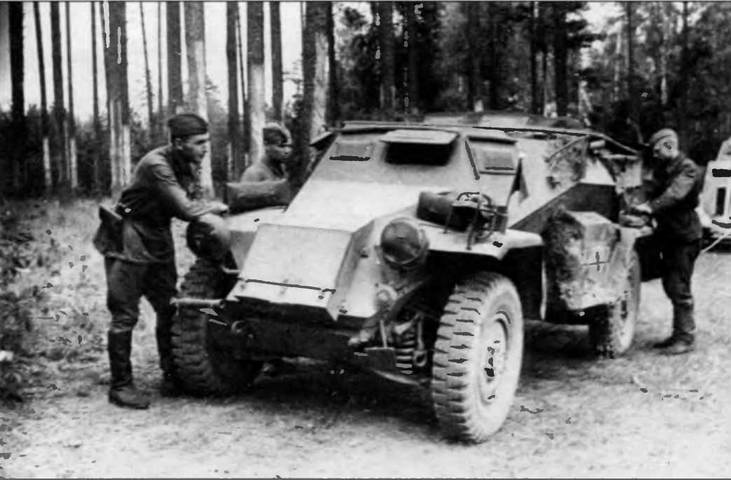
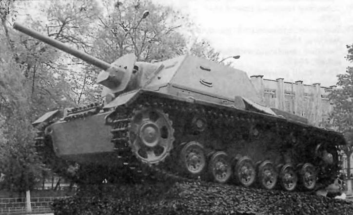

Михаил Борисович Барятинский
Бронетанковая техника Красной Армии 1939—1945
История создания советских бронетанковых войск восходит к периоду Гражданской войны. 31 января 1918 года для «управления всеми броневыми частями Российской Советской Республики» был создан Совет броневых частей, получивший название «Центробронь». Спустя полгода его преобразовали в Броневое управление, а затем в отдел ГВИУ. Снабжение боевой техникой — бронеавтомобилями, бронепоездами и танками развертываемых броневых сил Красной Армии осуществлялось по двум направлениям: ремонт и восстановление оставшейся от Русской армии или захваченной у белогвардейцев и интервентов боевой техники и организация выпуска новой. В результате к концу Гражданской войны броневые силы республики имели в своем составе 105 бронепоездов, 52 автоброневых и 11 автотанковых отрядов.
В послевоенные годы броневые силы претерпели существенные изменения, связанные в основном с сокращением численности и совершенствованием организационно-штатной структуры. На 1 марта 1926 года бронесилы РККА насчитывали всего 16 броневых частей, в том числе один танковый полк и шесть автоброневых дивизионов, укомплектованных устаревшей бронетанковой техникой.
В 1928 году началось серийное производство легкого танка МС-1 и бронеавтомобиля БА-27, что позволило приступить к замене старой материальной части. Спустя год РВС СССР утвердил масштабную «Систему танко-тракторноавтоброневого вооружения РККА». Для ее реализации было создано Управление механизации и моторизации РККА (с конца 1934 года — автобронетанковое, с июля 1940-го — Главное автобронетанковое, в 1941 — 1954 годах — Управление командующего бронетанковыми и механизированными войсками)
Первый пятилетний план военного строительства, утвержденный РВС СССР 13 июня 1930 года, ставил задачи: добиться превосходства над вероятным противником по решающим видам вооружения, в том числе и по танкам; перевооружить армию новейшими образцами военной техники; создать новые технические рода войск; модернизировать устаревшую технику; обеспечить массовую подготовку технических кадров и овладение новой техникой личным составом армии. План этот начал претворяться в жизнь невиданными темпами.
Легкие танки БТ-2 и Т-26 1-й механизированной бригады. Московский военный округ, 1933 год
По мере поступления боевых машин от промышленности началось интенсивное развитие мотомеханизированных войск (с 1934 года — автобронетанковых, с 1942-го — бронетанковых и механизированных). В мае 1930 года было сформировано первое постоянное бронетанковое соединение — механизированная бригада, по типу которой стали создаваться механизированные соединения в военных округах. В августе 1938 года механизированные полки, бригады и корпуса были преобразованы в танковые. К концу года в Красной Армии имелось 4 танковых корпуса, 24 отдельные легкотанковые бригады, 4 тяжелые танковые бригады и 3 химические (огнеметные) бригады, а также значительное количество танковых батальонов и полков, входивших в состав стрелковых и кавалерийских дивизий.
Боевое крещение советские автобронетанковые войска получили в июле — августе 1938 года в вооруженном конфликте у о.Хасан, в котором принимала участие 2-я механизированная бригада. Годом позже, у р.Халхин-Гол в Монголии воевали 6-я и 11-я танковые и 7, 8-я и 9-я мотоброневые бригады (всего 498 танков и 385 бронемашин) — их роль в разгроме японских войск стала решающей. В походе на Западную Украину и в Белоруссию в сентябре 1939 года было задействовано 3542 танка. Поскольку польские войска практически не оказывали сопротивления, боевые потери составили всего 42 машины. 429 танков вышли из строя по техническим причинам. Значительно драматичнее сложилась ситуация для советских танковых войск в советско-финской войне. За период с 30 ноября 1939-го по 13 марта 1940 года Красная Армия потеряла 3179 танков, из них 358 — безвозвратно.
21 ноября 1939 года Главный Военный совет принял решение о реорганизации автобронетанковых войск. Вместо танковых корпусов и отдельных танковых бригад в Красной Армии предполагалось иметь однотипную организацию танковых соединений в виде танковых бригад РГК, вооруженных танками БТ или Т-26, с последующим перевооружением их танками Т-34. В каждой такой бригаде должно было быть 258 танков. Тяжелые танковые бригады планировалось перевооружить танками КВ — по 156 машин в бригаде (из них 39 БТ). Предусматривалось сформировать также 15 моторизованных дивизий (257 танков и 73 бронеавтомобиля в каждой).
Легкие танки БТ-5 в атаке. Маневры Белорусского военного округа. 1936 год. На заднем плане — самоходная установка СУ-1-12
Организация танковой дивизии в 1940 г.
Боевой состав
Личный состав - 10 940 чел.
Танки:
КВ - 63 Т-34 - 210 БТ/Т-26 - 48 ХТ-26(133) - 54
Итого: 375
Орудия:
122-мм гауб. - 12 152-мм гауб. - 12 76-мм пушки - 4 37-мм M3A - 12 82-мм мин. - 18 50-мм мин. - 27
Пулеметы:
ручные - 340 станковые - 35
Автомашины - 1696 Тракторы - 83 Мотоциклы - 375
Бронемашины:
средние - 56 легкие - 39
К маю 1940 года эту реорганизацию в основном удалось завершить: в составе Красной Армии имелись четыре моторизованные дивизии, отдельные танковые и броневые бригады. Они представляли собой полностью сформированные моторизованные и танковые соединения, обеспеченные материальной частью и подготовленными кадрами. Кроме того, в состав кавалерийских дивизий входили танковые полки, а в состав стрелковых дивизий — танковые батальоны. Следует отметить, что советские моторизованные дивизии и танковые бригады 1940 года по числу боевых машин были равны немецкой танковой дивизии того же периода.
Новая структура автобронетанковых войск и их боевой состав полностью соответствовали наличию бронетанковой техники, командных и технических кадров, а также сложившимся взглядам и накопленному опыту в области применения этого рода войск. К сожалению, эта структура просуществовала недолго.
В июне 1940 года Наркомат обороны вновь вернулся к вопросу об организации автобронетанковых войск Красной Армии, рассматривая его с точки зрения опыта действий немецких танковых войск во Франции. В результате было принято решение о формировании механизированных корпусов нового типа, куда входили бы две танковые и одна моторизованная дивизии. В танковой дивизии полагалось иметь 375 танков (63 КВ, 210 Т-34, 26 БТ-7, 24 Т-26, 54 огнеметных) и 91 бронемашину, в моторизованной — 275 легких танков. А всего в корпусе — 1031 танк. Автобронетанковые войска должны были состоять из девяти механизированных корпусов, двух отдельных танковых дивизий, 28 отдельных бригад, а также других подразделений и частей. Для их укомплектования требовалось свыше 18 тыс. танков различных типов, в том числе 6354 тяжелых и средних — КВ и Т-34. Эта задача могла быть решена не ранее весны 1942 года.
Реорганизация 1940 года привела к существенному снижению боеспособности автобронетанковых войск. Одни части и соединения расформировывались, другие создавались вновь. Шла ротация личного состава, передислокация частей. Вместе с тем на этом этапе и техники, и людей было еще достаточно, чтобы укомплектовать новые соединения до штата.
В марте 1941 года по предложению начальника Генерального штаба Г.К.Жукова правительство утвердило план по развертыванию еще 21 механизированного корпуса. По этому плану Красная Армия должна была иметь 61 танковую дивизию (в том числе три отдельные) и 31 моторизованную (в том числе две отдельные). Для обеспечения новых формирований требовалось уже около 32 тыс. танков, в том числе 16,6 тыс. танков Т-34 и КВ. Чтобы выпустить необходимое количество боевых машин при существовавшей в 1940 — 1941 годах мощности танковой промышленности, даже с учетом привлечения новых предприятий, таких, как Сталинградский и Челябинский тракторные заводы, требовалось не менее четырех-пяти лет. Трудно понять логику принятия такого решения, когда война буквально стояла у порога.
Средний танк Т-28 из состава 20-и танковой бригады, возвращающейся с Карельского перешейка. Ленинград, 24 апреля 1940 года
Организация моторизованной дивизии в 1940 г.
Боевой состав
Личный состав - 11 650 чел.
Танки:
БТ-7 - 258 Т-37/38 - 17
Бронемашины: средние - 31 легкие - 18
Орудия и минометы:
152-мм гауб. - 12 122-мм гауб - 16 76-мм пушки - 20 45-мм ПТО - 30 37-мм M3A -8 82-мм мин. - 12 50-мм мин. - 60
Пулеметы:
ручные - 367 станковые - 80 зенитные - 12
Автомашины - 1138 Тракторы - 134 Мотоциклы - 30
В результате все соединения, имевшиеся в начале 1940 года, расформировали, а их боевая техника и личный состав были направлены на формирование механизированных корпусов. Однако этого было недостаточно. В первом полугодии 1941 года промышленность дала армии 1800 танков, что мало влияло на ситуацию. Укомплектованность корпусов приграничных военных округов всеми типами боевых машин к началу войны составляла в среднем 53%: автомобилями — 39%, тракторами — 44%, ремонтными средствами — 29%, мотоциклами —17%. Значительная часть техники нуждалась в среднем и капитальном ремонте, а промышленность могла дать к 1 июня 1941 года только 11% потребного количества запасных частей. Вместе с тем даже в таком недоукомплектованном виде автобронетанковые войска Красной Армии по количеству боевых машин представляли самую внушительную силу в мире. На 22 июня 1941 года в войсках имелось 23 140 танков всех типов (у Германии — 5694). В западных приграничных военных округах насчитывался 13 981 танк (у Германии, включая ее союзников, — 3899 танков и штурмовых орудий) Даже с учетом только полностью боеготовых машин, вступивших в бой 22 июня, соотношение составляло как минимум 2:1, при этом средних и тяжелых танков у Красной Армии было больше Сравнение тактико-технических характеристик советских и немецких танков не оставляет камня на камне от расхожего тезиса о качественном превосходстве германской бронетанковой техники — они были сопоставимы Значительно хуже дело обстояло с кадрами.
Средний танк Т-34 обр. 1941 г. выпуска Сталинградского тракторного завода на исходной позиции. 1942 год
Организация танковой бригады в сентябре - декабре 1941г.
Всего в бригаде:
личного состава - 1471 чел. танков - 46, в том числе: тяжелых КВ - 10 средних Т-34 - 16 легких Т-70 -20
Количество боевых машин в Красной армии (по состоянию на 1 января)
| Год |
1929 |
1930 |
1931 |
1932 |
1933 |
1934 |
1935 |
1936 |
1937 |
1938 |
1939 |
1940 |
1941 |
| Танки |
65 |
174 |
1154 |
1401 |
4905 |
7574 |
10 180 |
13 339 |
17 280 |
18 839 |
21 110 |
23 639 |
23 367 |
| БМ |
92 |
152 |
195 |
213 |
244 |
326 |
464 |
1033 |
1428 |
1801 |
2594 |
4034 |
4345 |
Младшие специалисты — командиры танков, механики-водители, командиры орудий, радисты-пулеметчики — готовились в учебных батальонах и школах младшего командного состава В связи с формированием большого количества новых соединений была создана дополнительная сеть курсов в округах и армиях, однако этого оказалось недостаточно Положение усугублялось тем, что многие новые танковые части создавались на базе стрелковых и кавалерийских частей и соединений. Была организована массовая переподготовка кадров— пехотинцы, кавалеристы, артиллеристы, связисты становились., механиками-водителями танков, наводчиками и другими специалистами танковых войск. В короткие сроки решить такую задачу было невозможно. В результате новые экипажи к началу войны не успели овладеть техникой, многие механики- водители, например, получили всего лишь 1,5 — 2-часовую практику вождения танков. Катастрофически не хватало командного состава. Укомплектованность большинства мехкорпусов, формировавшихся весной 1941 года, по командно-начальствующему составу составляла 22 — 40%, а по младшему — от 16 до 50%. На 1 июня 1941 года в штабах 15, 16, 19-го и 22-го мехкорпусов не были укомплектованы даже такие отделы, как оперативные и разведывательные! Большинство мехкорпусов, по замыслу предназначавшихся для ведения самостоятельных действий, придали общевойсковым армиям, на которые возлагалось прикрытие государственной границы. Основные их силы располагались на широком фронте в 30 — 40 км от границы, а дивизии в корпусах находились одна от другой на расстоянии 50 — 100 км и более. Подобная неудачная дислокация не позволяла в короткие сроки собрать основные силы корпусов для нанесения сосредоточенных ударов. Части и соединения вступали в бой разрозненно, часто выполняя противоречивые приказы.
Организация танковой бригады в июле 194 2 г.
Всего в бригаде:
личного состава -1038 чел. танков - 53, в том числе: средних Т-34 - 32 легких Т-70 -21
Организация танковой бригады в ноябре 1943 г.
Всего в бригаде:
личного состава - 1354 чел. танков Т-34 - 65 ЗПУ (ДШК) - 9
Производство бронетанковой техники в СССР в 1941 — 1945 годах
| |
1941 II полугодие |
1942 |
1943 |
1944 |
1945 |
Всего |
| Танки |
4742 |
24 445 |
19 892 |
16 923 |
9035 |
75 047 |
| САУ |
— |
59 |
4194 |
12 061 |
6317 |
22 631 |
| БА |
633 |
2623 |
1820 |
3000 |
868 |
8944 |
Все перечисленные обстоятельства привели к разгрому советских мехкорпусов, развернутых вдоль западной границы С 22 июня по 9 июля 1941 года потери Красной Армии составили 11712 танков (среднесуточные — 233 танка)[* Гриф секретности снят. Потери Вооруженных Сил СССР в войнах, боевых действиях и военных конфликтах. — М , Воениздат, 1993.]. Огромные потери людей и техники привели к экстренному переходу от корпусов к более мелким частям — бригадам, полкам и батальонам. Впрочем, даже в тяжелейшей для Советского Союза второй половине 1941 года отечественная промышленность выпустила 4742 танка (Германия за весь 1941 год — 3725 танков и штурмовых орудий). На 1 января 1942 года на советско-германском фронте соотношение танков составляло 1588:840 (1,9:1)[** Операции Советских Вооруженных Сил в Великой Отечественной войне 1941 — 1945 гг т.1—М Воениздат, 1958.] в нашу пользу. Никогда за все время Великой Отечественной войны немцы не имели превосходства над Красной Армией в танках в целом.
С марта 1942 года вновь перешли к созданию танковых корпусов, а с мая — танковых армий. В сентябре 1942 года было начато формирование механизированных корпусов. В ходе войны организационно-штатная структура корпусов и армий неоднократно менялась. В 1945 году в танковом корпусе имелось 270, в механизированном — 246, а в танковой армии 850 — 920 танков На 9 мая 1945 года Красная Армия располагала 35,2 тыс. танков и САУ[* Военно-исторический журнал 1991 № 4]. Но весьма существенными были и потери за время Второй мировой войны. 63 229 танков и САУ
Помимо собственного производства еще одним источником пополнения танкового парка Красной Армии были поставки по ленд-лизу.
Идея создания системы помощи странам, противостоящим нацистской Германии, в первую очередь Англии, путем передачи вооружения и военных материалов взаймы на время опасности взамен на определенные политические и экономические уступки, то есть идея ленд-лиза (от английских слов «lend» —давать взаймы, одалживать и «lease» — сдавать в аренду, внаем), возникла в Вашингтоне в министерстве финансов осенью 1940 года В ее основу лег старый закон 1892 года, принятый при президенте Б.Гаррисоне, согласно которому военный министр США, «когда по его усмотрению это будет в интересах государства, может сдавать в аренду на срок не более чем 5 лет собственность армии, если в ней не нуждается страна». Эти положения были оформлены в виде билля о ленд-лизе. После утверждения его в палате представителей и сенате 11 марта 1941 года под его текстом появилась подпись президента Рузвельта, и билль стал законом Соединенных Штатов Америки Он уполномачивал президента США когда тот сочтет необходимым, передавать взаймы или в аренду предметы обороны правительству любой страны, оборону которой президент признает жизненно важной для безопасности Соединенных Штатов Сразу же действие закона было распространено на Англию и Грецию
Танки Т-34 и M3л в атаке. Калининский фронт, зима 1942 года Тяжелый танк ИС-2 7-и гвардейской тяжелой танковой бригады у Бранденбургских ворот. Берлин, май 1945 года
Выступая вечером 22 июня 1941 года по радио с предложением оказать «России и русскому народу всю ту помощь, какую мы только сможем», Черчилль в полной мере ощутил и поддержку заокеанского соседа, уже 24 июня на пресс-конференции Рузвельт также заявил о готовности оказать СССР помощь Эти заявления положили начало сотрудничеству трех держав в воине против нацистской Германии.
В первые месяцы войны поставки из США в СССР были очень невелики и производились за наличный расчет в соответствии с торговым соглашением, продленным в августе 1941 года. Более успешно в этот период развивались советско-английские контакты. Английские поставки Советскому Союзу уже с 6 сентября 1941 года стали проводиться на условиях ленд-лиза 7 ноября 1941 года Рузвельт признал оборону Советского Союза жизненно важной с точки зрения интересов США С этого дня американские поставки в СССР также стали производиться на основании закона о ленд-лизе Они должны были соответствовать квотам, установленным Московским (1 октября 1941 г.) и последующими — Вашингтонским (6 октября 1942 г.), Лондонским (19 октября 1943 г.) и Оттавским (17 апреля 1945 г) протоколами, но эти договоренности не всегда выполнялись
Выступая в марте 1943 года с отчетом за два года действия программы, глава Администрации ленд-лиза Э.Р.Стеттинус констатировал, что «большая часть вооружения, которым пользовалась Красная Армия для того, чтобы сдержать, а затем и отбросить гитлеровскую армию, была произведена на советских заводах». Тем не менее поставки боевой техники, в частности танков, для Красной Армии оказались весьма важными особенно в 1941 —1942 годах.
Всего же за годы Второй мировой войны Советский Союз получил по ленд-лизу 18 566 единиц бронетанковой техники, что составляло от нашего производства около 16% танков, 12% САУ и 100% бронетранспортеров
Танки Т-34-85 на берегу Тихого океана. Район Даляня, август 1945 года
Обозначение советской бронетехники
В целом простая армейская система обозначении советских танков буквой «Т» — «танк» имела ряд исключений и особенностей К исключениям относятся танки ВТ (быстроходный танк), КВ (Климент Ворошилов) и ИС (Иосиф Сталин). Помимо армейской системы существовали (но не всегда) заводские обозначения, которые в справочнике приводятся в скобках.
Недостаток обозначения советской бронетанковой техники выражался в крайне редком выделении модификаций Обозначения типа БТ-7М или КВ-1с — это скорее исключение, чем правило Например, ни одна из многочисленных модификаций танка Т-26 никакими буквенными индексами не выделялась В войсках эти машины именовались примерно так «Танк Т-26 с цилиндрической башней», «Танк Т-26 с конической башней», «Танк Т-26 с конической башней и с наклонной подбашенной коробкой» и т.д То же самое и с обозначением танка Т-34. Официально существуют только две модификации линейного танка. Т-34 и Т-34-85.
Для облегчения распознавания модификаций в литературе используются обозначения типа Т-26 образца 1933 года или Т-34 образца 1942 года. В абсолютном большинстве случаев они не являются официальными, но широко распространены в печатных изданиях и поэтому используются и в настоящем справочнике
Достаточно проста и система обозначений самоходно-артиллерийских установок — аббревиатура «СУ» — «самоходная установка», после которой следует калибр орудия в мм. Исключение составляет только тяжелая САУ «ИСУ» — «самоходная установка на базе танка ИС». Бронеавтомобили обозначались буквами «БА»
Что касается ленд-лизовской бронетехники, то ее обозначения в Красной Армии имели ряд особенностей. Так, буквенно-цифровые индексы часто писались через дефис а в обозначениях английских танков обе буквы были прописными Названия американских танков — «Стюарт», «Ли» «Шерман» практически не использовались Два первых именовались соответственно M3л (М3 «легкий») и M3с (М3 «средний»), а последний — М4 или М4А2 (М4-А2) Названия английских боевых машин употреблялись как в переводе, так и в русской транскрипции Например, «Валентайн» и «Валентин», «Черчилль». В соответствующих разделах справочника названия и обозначения ленд-лизовской техники соответствуют использовавшимся в Красной Армии в годы Второй мировой воины.
Легкие танки
Малый танк сопровождения МС-1(Т-18)
Первый советский танк, запущенный в массовое производство Разработан в 1925 — 1926 годах в конструкторском бюро Орудийно-арсенального треста. Предназначался для непосредственного сопровождения пехоты (МС-1 — «малый сопровождения, образец первый») Изготавливался заводом «Большевик» (г Ленинград) и Мотовилихинским машиностроительным заводом (г.Пермь). С 1928 по 1931 год выпущено 959 единиц.
Серийные модификации МС-1(Т-18) обр. 1927 г. — корпус и башня клепаные, собирались на каркасе. Башня — шестигранная, с наблюдательной башенкой грибовидной формы. Двигатель располагался поперек корпуса и был выполнен в одном блоке с главным фрикционом и коробкой передач. В кормовой части корпуса имелся «хвост».
МС-1(Т-18) обр. 1930 г. — башня с прямоугольной кормовой нишей, двигатель мощностью 40л.с., четырехскоростная КП, литое ведущее колесо. Боевая масса 5,68 т. Габариты 4350x1760x2120 мм. Боекомплект: 104 выстрела, 2016 патронов. Скорость макс. —17,5 км/ч.
Легкий танк МС-1 МС-1 обр. 1927 г. МС-1 обр. 1930 г. МС-1 С 45-мм пушкой
С 1929 года танки МС-1 начали поступать на вооружение вновь формируемых механизированных частей Они активно использовались в учебных целях — 103 машины сразу после изготовления были переданы в распоряжение ОСОАВИА- ХИМа и ряда военно-технических учебных заведений.
Боевое крещение МС-1 получили в ноябре 1929 года во время советско-китайского вооруженного конфликта на КВЖД В боевых действиях принимала участие отдельная танковая рота, насчитывавшая девять боевых машин.
С 1938 года танки начали передаваться в распоряжение УРов на западной границе СССР для использования в качестве как подвижных, так и неподвижных (с демонтажом двигателя и ходовой части) огневых точек При этом часть боевых машин была перевооружена 45-мм танковыми пушками обр. 1932 г. Эти танки приняли участие в приграничных сражениях лета 1941 года, причем в ряде случаев не без успеха.
Последние факты боевого применения МС-1 относятся к битве за Москву. В частности, в составе 150-й танковой бригады зимой 1941/42 года имелось девять танков этого типа.
Танки МС-1 с 45-мм пушками, захваченные немцами. Группа армий «Юг», июнь 1941 года Дот — закопанный в землю МС-1 с 45-мм пушкой, захваченный немцами на «линии Сталина» (так во вражеских документах часто именовалась линия укрепленных районов вдоль старой западной границы СССР). Июнь 1941 года
Тактико-технические характеристики танка МС-1(Т-18) обр.1927 г.
БОЕВАЯ МАССА, т: 5,3.
ЭКИПАЖ, чел.: 2.
ГАБАРИТНЫЕ РАЗМЕРЫ, мм: длина — 4400, ширина — 1760, высота — 2120, клиренс — 315.
ВООРУЖЕНИЕ: 1 пушка Гочкиса или ПС-1 калибра 37 мм, 2 пулемета Федорова калибра 6,5 мм или 1 пулемет ДТ калибра 7,62 мм.
БОЕКОМПЛЕКТ: 96 выстрелов, 1800 патронов
ПРИБОРЫ ПРИЦЕЛИВАНИЯ: диоптрический или 2,45-кратный оптический прицел.
БРОНИРОВАНИЕ, мм: лоб, борт, корма и крыша корпуса — 16, днище — 8, башня — 16.
ДВИГАТЕЛЬ: специальный танковый конструкции А.Микулина, 4-цилиндровый, 4-тактный, рядный, карбюраторный, воздушного охлаждения; мощность 35 л.с.(25,6 кВт) при 1800 об/мин, рабочий объем 3200 см
3.
ТРАНСМИССИЯ: многодисковый главный фрикцион, трехскоростная коробка передач, простой дифференциал, бортовые передачи.
ХОДОВАЯ ЧАСТЬ: семь сдвоенных обрезиненных опорных катков на борт, шесть из которых сблокированы попарно в три балансирные тележки (подвеска — пружинная); четыре поддерживающих катка, три из которых подвешены на полуэллиптической листовой рессоре; ведущее колесо заднего расположения (зацепление зубовое); в каждой гусенице 51 трак шириной 300 мм.
ПРЕОДОЛЕВАЕМЫЕ ПРЕПЯТСТВИЯ: угол подъема, град. — 36...40, высота стенки, м — 0,5, ширина рва, м — 1,7, глубина брода, м — 0,8.
СРЕДСТВА СВЯЗИ: отсутствуют.
Легкий танк Т-26
Легкий танк сопровождения пехоты. Создан на основе английского танка «Виккерс-Армстронг» Mk Е модели А (в 1930 — 1931 годах закуплено 15 машин). Постановлением РВС СССР принят на вооружение 13 февраля 1931 года. Самый массовый танк Красной Армии в предвоенные годы. С 1931 по 1941 год заводом № 174 имени К Е.Ворошилова (г Ленинград) и Сталинградским тракторным заводом изготовлено 11 218 единиц.
Т-26 обр. 1933 г. Т-26 обр. 1931 г. с пушечно-пулеметным вооружением Легкий танк Т-26 обр. 1931 г. с пулеметным вооружением
Серийные модификации Т-26 обр.1931 г. — первый серийный вариант, наиболее близкий английскому прототипу с размещением вооружения в двух башнях. Боевая масса 8 т. Габариты 4620x2440x2190 мм. Экипаж 3 человека. Вооружение: два пулемета ДТ. С 1932 года в правой башне устанавливалась 37-мм пушка Гочкиса (боекомплект 113 выстрелов). Часть машин оснащалась радиостанцией 71-ТК-1 с рамочной антенной вокруг корпуса. Изготовлено 1626 единиц.
Т-26 обр.1933 г. — однобашенный вариант. Установлена новая цилиндрическая башня с развитой нишей. Вооружение: 45-мм пушка 20К и пулемет ДТ. На части танков — радиостанция 71-ТК-1 с поручневой антенной вокруг башни. С1935 года — корпус и башня сварные, с 1936 года— пулемет ДТ в нише башни, с 1937 года — на части машин зенитный пулемет ДТ и пушечный прожектор. Изготовлено 6065 единиц.
Т-26 обр.1938 г. — новая башня конической формы. Незначительные изменения в деталях корпуса. Увеличен объем топливных баков. Вооружение осталось прежним. Пушки выпуска 1937 и 1938 годов снабжены электрозатвором и телескопическим прицелом ТОП-1 (с 1938 года — ТОС), стабилизированным в вертикальной плоскости. Боевая масса 10,28 т. Габариты 4620x2440x2330 мм. Запас хода 225 км.
Т-26 обр.1939 г. — подбашенная коробка с наклонными бронелистами. На части машин изъят кормовой пулемет. Двигатель мощностью 97 л.с. С 1940 года — гомогенная броня подбашенной коробки толщиной 20 мм, унифицированный смотровой прибор, новый погон башни. На части машин установлены броневые экраны.
Танков с конической башней изготовлено 1975 единиц.
Т-26 обр. 1933 г. поздних выпусков Т-26 обр. 1938 г. ХТ-130 Легкий танк Т-26 обр. 1933 г. ранних выпусков сваливает дерево во время тактических занятий
Первой боевой операцией Красной Армии в которой участвовали танки Т-26, был советско-японский вооруженный конфликт у о.Хасан. В составе 2-й механизированной бригады, 32-го и 40-го отдельных танковых батальонов имелось 257 Т-26. К концу операции 85 из них были подбиты.
В боевых действиях у р Халхин-Гол в 1939 году принимало участие небольшое количество огнеметных танков на базе Т-26.
Накануне Второй мировой войны Т-26 главным образом состояли на вооружении отдельных легкотанковых бригад (256 — 267 танков в каждой) и отдельных танковых батальонов стрелковых дивизий (одна рота). В составе этих частей и подразделений они принимали участие в советско-финской войне и «освободительном походе» в Западную Украину и Западную Белоруссию.
На 1 июня 1941 года танковые войска Красной Армии располагали 10 000 танков Т-26 всех модификаций, включая специальные. Они составляли большинство боевых машин в механизированных корпусах приграничных военных округов В Западном особом военном округе, например, на 22 июня 1941 года имелось 1136 танков Т-26 — 52% всех танков округа. В механизированных корпусах Юго-Западного фронта, сформированного после начала войны из войск Одесского и части войск Киевского особого военных округов, имелось 1316 Т-26 — 35% танков фронта.
По своим боевым качествам танки Т-26 поздних выпусков были в состоянии противостоять большинству немецких танков (за исключением Pz.NI и Pz.IV), участвовавших в нападении на СССР. В ходе боевых действий первых месяцев Великой Отечественной большинство Т-26 оказались потеряны, в основном от огня артиллерии и ударов авиации Много машин вышло из строя по техническим причинам, вследствие износа материальной части. Оставшиеся принимали участие в боях с немецкими войсками вплоть до 1944 года (на Ленинградском фронте).
Последней боевой операцией с участием Т-26 стал разгром японской Квантунской армии в августе 1945 года.
В 1930-е годы танки Т-26 поставлялись в Турцию (60 шт), Испанию (около 300 шт), Китай (82 шт.) и Афганистан В период Второй мировой войны значительное число трофейных Т-26 разных модификаций состояло на вооружении финской армии Часть из них эксплуатировалась в Финляндии до начала 1950-х годов.
На базе Т-26 выпускалось большое количество боевых машин специального назначения: огнеметные танки ХТ-26 (552 шт.), ХТ-130 (401 шт) и ХТ-133 (269 шт), саперные танки-мостоукладчики СТ-26 (71 шт.), телемеханические танки ТТ-26 и ТУ-26 (55 шт.), самоходно-артиллерийские установки и артиллерийские тягачи (183 шт).
Огнеметный танк ХТ-133. Маневры Киевского особого военного округа, 1940 год Экипаж совместно с рабочими ремонтирует легкий танк Т-26 обр. 1938 г. Ленинград, 1941 год
Тактико-технические характеристики танка Т-26 обр.1933 г.
БОЕВАЯ МАССА, т: 9,4 ЭКИПАЖ, чел.: 3.
ГАБАРИТНЫЕ РАЗМЕРЫ, мм длина—4650, ширина — 2440, высота — 2240, клиренс — 380.
ВООРУЖЕНИЕ. 1 пушка 20К обр. 1932 или 1934 г калибра 45 мм, 1 пулемет ДТ обр 1929 г калибра 7,62 мм
БОЕКОМПЛЕКТ 136 выстрелов и 2898 патронов (в танке без радиостанции); 96 выстрелов и 2898 патронов (в танке с радиостанцией).
ПРИБОРЫ ПРИЦЕЛИВАНИЯ телескопический прицел ТОП обр. 1930 г., перископический панорамный прицел ПТ-1 обр 1932 г
БРОНИРОВАНИЕ, мм лоб, борт, корма корпуса — 15, крыша—10, днище — 6 башня — 6.. 15.
ДВИГАТЕЛЬ: Т-26 (типа «Армстронг-Сиддлей»), 4-цилиндровый, карбюраторный, рядный с горизонтальным расположением цилиндров, воздушного охлаждения; мощность 90 л с (66,24 кВт) при 2100 об/мин, рабочий объем 6600 см .
ТРАНСМИССИЯ однодисковый главный фрикцион сухого трения, карданный вал, пятискоростная коробка передач, бортовые фрикционы, бортовые передачи
ХОДОВАЯ ЧАСТЬ: восемь сдвоенных обрезиненных опорных катков на борт, сблокированных попарно в четыре балансирные тележки, подвешенные на листовых четвертьэллиптических рессорах, четыре поддерживающих катка, направляющее колесо с натяжным механизмом, ведущее колесо переднего расположения со съемными зубчатыми венцами (зацепление цевочное); в каждой гусенице 108 — 109 траков шириной 260 мм, шаг трака 90 мм.
СКОРОСТЬ МАКС., км/ч. 30 ЗАПАС ХОДА, км 120
ПРЕОДОЛЕВАЕМЫЕ ПРЕПЯТСТВИЯ угол подъема, град.—40, ширина рва, м — 2, высота стенки, м — 0,75, глубина брода, м — 0,8
СРЕДСТВА СВЯЗИ: радиостанция 71-ТК-1, переговорное устройство ТПУ-2 или ТПУ-3
Легкие танки Т-26 обр. 1938 г. и обр. 1933 г. (на заднем плане) перед атакой. Сталинградский фронт, 1942 год
Танкетка Т-27
Разработана на базе английской танкетки Carden-Loyd Mk VI, лицензия на производство которой была приобретена Советским Союзом Принята на вооружение РККА постановлением РВС СССР от 13 февраля 1931 года. С 1931 по 1933 год заводом № 37 (г.Москва) было изготовлено 3328 единиц.
Серийная модификация Корпус клепаный, коробчатой формы. В боковых коробках корпуса размещались патронные магазины, которые подавались для заряжания тросовым механизмом Верхняя часть корпуса состояла из трех частей: двух боковых в виде откидывающихся колпаков над командиром и механиком-водителем и средней, закрывавшей топливный бак. Справа над откидным колпаком была прорезана амбразура пулемета. В средней части корпуса вдоль его продольной оси устанавливался двигатель.
Т-27 Танкетки Т-27 выдвигаются к передовой. Южный фронт, июнь 1941 года
Танкетка Т-27 поступала на вооружение разведывательных подразделений механизированных частей РККА По мере насыщения войск легкими танками Т-27 передавались в танковые батальоны стрелковых дивизий.
В 1932 году в ОКБ Гроховского была разработана парашютно-десантная подвеска танкетки под самолетом ТБ-1, и в том же году она была принята на вооружение ВВС РККА.
В конце 1930-х годов танкетки Т-27 использовались в качестве тягачей 45-мм противотанковых пушек.
На 1 января 1941 года в Красной Армии числилось 2558 танкеток, часть из которых принимала участие в боевых действиях начального периода Великой Отечественной войны, включая битву за Москву В частности, 1 декабря 1941 года несколько танкеток Т-27 поддерживали атаку одного из батальонов 71-й отдельной морской стрелковой бригады в районе Яхромы.
Танкетка Т-27, переоборудованная в артиллерийский тягач (справа). Танкетки Т-27 буксируют 45-мм противотанковые пушки (в центре)
Легкий колесно-гусеничный танк БТ
Второй по массовости и наиболее популярный советский танк периода 1930-х годов Разработан на базе колесно-гусеничного танка М.1931 американского конструктора У. Кристи Принят на вооружение РККА постановлением РВС СССР от 13 февраля 1931 года. Выпускался серийно на заводе № 183 (ХПЗ имени Коминтерна) в Харькове. С 1932 по 1940 год изготовлено 8060 единиц.
Серийные модификации БТ-2 — первый серийный вариант. Представлял собой практически копию американского прототипа, но с вновь разработанной в СССР цилиндрической башней. Боевая масса 11,3 т Вооружение: 37-мм пушка Б-3 и пулемет ЦТ. На части танков пулемет отсутствовал, на части вместо пушки была смонтирована спаренная установка пулеметов ДА-2. Двигатель М-5 или «Либерти» мощностью 400 л.с. при 1650 об/мин.
Легкий колесно-гусеничный танк БТ с пушечно-пулеметным вооружением
Макс, скорость на гусеницах — 52, на колесах — 72 км/ч. Экипаж 3 чел. Изготовлено 620 единиц.
БТ-5 — новая башня с развитой кормовой нишей. Вооружение: 45-мм пушка 2ОК и спаренный с ней пулемет ЦТ. Экипаж 3 чел. На части танков устанавливалась радиостанция 71-ТК-1 с поручневой антенной. В остальном конструкция танка существенных изменений не претерпела. Боевая масса 11,5 т. Изготовлено 1884 единицы.
БТ-7 обр. 1935 г. — новый корпус в основном сварной конструкции. Увеличенный объем топливных баков. Двигатель М-17Т. Башня и вооружение — без изменений.
БТ-7 обр. 1937 г. — башня конической формы с пулеметом в кормовой нише. Трехскоростная коробка передач. Внесены изменения в трансмиссию и ходовую часть. Боекомплект увеличен на 44 снаряда. На части танков устанавливался зенитный пулемет. Боевая масса 13,9 т. Габариты 5660x2290x2417 мм.
Танков БТ-7 изготовлено 4613 единиц.
БТ-7А — артиллерийский танк. Башня Т-26-4. Вооружение: 76-мм пушка КТ-26 и два пулемета ЦТ, боекомплект 50 выстрелов и 3339 патронов. Незначительные изменения в корпусе. На части танков устанавливалась радиостанция 71-ТК-1. Изготовлено 156 единиц.
БТ-7М— БТ-7 обр.1937 г. с дизельным двигателем В-2 мощностью 400 л.с. при 1700 об/мин. Незначительные изменения в корпусе, связанные с установкой нового двигателя. Боевая масса 14,65 т. На части танков установлен двигатель М-17. Изготовлено 787 единиц.
БТ-7 обр. 1935 г. БТ-5 Легкие танки БТ-5 направляются на фронт по проспекту Володарского. Ленинград, 1943 год
Танки БТ поступали на вооружение механизированных и танковых бригад и корпусов, предназначавшихся для решения самостоятельных боевых задач, а также механизированных полков кавалерийских дивизий.
Боевое крещение они получили в Испании: в 1937 году сюда было отправлено 50 танков БТ-5. Годом позже в составе разведбатальона 2-й мехбригады БТ-7 приняли участие в боях у о.Хасан.
В мае — августе 1939 года в ходе вооруженного конфликта у р.Халхин-Гол в боевых действиях успешно принимали участие 6-я и 11-я танковые бригады, укомплектованные танками БТ-5 и БТ-7 (всего около 400 машин). Еще в больших количествах БТ принимали участие в «освободительном походе» на Западную Украину и в Белоруссию. Главным образом это были танки БТ-7 — 1617 единиц, объединенные в два танковых корпуса и три бригады.
Значительное число танков БТ всех модификаций — около 800 штук — участвовало в боевых действиях «зимней воины» с Финляндией. В основном их сосредоточили в 10-м танковом корпусе и 34-й легкотанковой бригаде В ходе боев танки БТ понесли значительные потери.
На 1 июня 1941 года в танковых частях Красной Армии насчитывалось 7549 танков БТ всех модификаций Из этого количества в западных приграничных военных округах имелось 396 БТ-2, 878 БТ-5, 2801 БТ-7, 442 БТ-7М и 65 БТ-7А Все они активно использовались в сражениях первых месяцев Великой Отечественной войны. В дальнейшем танки БТ участвовали в боевых действиях на советско-германском фронте вплоть до 1944 года В 1945 году эти боевые машины приняли участие в разгроме японских войск в Маньчжурии.
В течение Второй мировой войны и вплоть до начала 1950-х годов некоторое количество трофейных БТ состояло на вооружении финской армии.
Экипажи шести братьев Игнатовых. Особая Краснознаменная Дальневосточная армия, 1940 год. Легкие танки БТ-7 обр. 1937 г. (слева) и БТ-7 обр. 1935 г. (справа) с поручневой антенной и фарами боевого света БТ-7А БТ-7 обр. 1937 г. Легкий колесно-гусеничный танк БТ-7 обр. 1937 г.
Печальные реалии 1941 года: беженцы и вышедший из строя артиллерийский танк БТ-7А (фото вверху). Едва ли не единственный сохранившийся качественный снимок боевой машины этого типа, датированный первыми днями воины. На фото внизу — легкий танк БТ-7М. Главное внешнее отличие от БТ-7 — маленький бронеколпак воздушного фильтра на крыше МТО
Тактико-технические характеристики танка БТ-7 обр.1935 г.
БОЕВАЯ МАССА, т: 13 ЭКИПАЖ, чел 3.
ГАБАРИТНЫЕ РАЗМЕРЫ, мм: длина — 5645, ширина — 2320, высота — 2394, клиренс — 400
ВООРУЖЕНИЕ 1 пушка 20К обр 1934 г. калибра 45 мм, 1 пулемет ДТ обр. 1929 г. калибра 7,62 мм.
БОЕКОМПЛЕКТ 172 выстрела и 2394 патрона (на танках без радиостанции), 132 выстрела и 2394 патрона (на танках с радиостанцией)
ПРИБОРЫ ПРИЦЕЛИВАНИЯ- телескопический прицел ТОП обр 1930 г, перископический панорамный прицел ПТ-1 обр. 1932 г
БРОНИРОВАНИЕ, мм: лоб корпуса — 20, борт и корма — 13, крыша — 10, днище — 6, башня— 15.
ДВИГАТЕЛЬ М-17Т, 12-цилиндровый, карбюраторный, V-образный, жидкостного охлаждения, мощность 400 л.с. (294 5 кВт) при 1650 об/мин, рабочий объем 46 920 см
3 ТРАНСМИССИЯ- многодисковый фрикцион сухого трения, четырехскоростная коробка передач, бортовые фрикционы, бортовые передачи, редукторы привода колесного хода.
ХОДОВАЯ ЧАСТЬ четыре сдвоенных обрезиненных опорных катка на борт направляющее колесо ведущее колесо заднего расположения (зацепление гребневое), на колесном ходу — ведущий задний опорный каток, управляемый — передний; подвеска индивидуальная пружинная, в каждой гусенице 70 траков шириной 260 мм, шаг трака 167 мм
СКОРОСТЬ МАКС , км/ч на гусеницах — 53, на колесах — 73.
ЗАПАС ХОДА, км: на гусеницах — 375, на колесах — 500
ПРЕОДОЛЕВАЕМЫЕ ПРЕПЯТСТВИЯ угол подъема, град —40, ширина рва, м — 3,5, высота стенки, м — 0,55, глубина брода, м — 0,9.
СРЕДСТВА СВЯЗИ: радиостанция 71- ТК-1, переговорное устройство ТПУ-3
Малый плавающий танк Т-37А
Первый серийный плавающий танк Красной Армии Принят на вооружение постановлением СТО СССР от 11 августа 1933 года. Производился на заводе № 37 имени Г.К.Орджоникидзе (г.Москва) С 1933 по 1936 год изготовлено 2627 единиц.
Серийная модификация Корпус клепано-сварной. Башня с пулеметом ДТ смещена к правому борту. К надгусеничным полкам крепились поплавки, заполненные пробкой. Движение на плаву— с помощью гребного винта и рулей. Часть машин оснащалась радиостанцией.
Т-37А Подразделение танков Т-37А на марше. Впереди — командирский Т-37ТУ, оснащенный радиостанцией с поручневой антенной. Юго-Западный фронт, 1941 год
Танки Т-37А поступали на вооружение разведывательных подразделений механизированных и танковых частей и соединений. В начале 1934 года в состав танковых батальонов Т-26 механизированных бригад был введен взвод разведки — три Т-37А Одновременно стрелковые батальоны стрелковых бригад механизированных корпусов получили по взводу разведки в составе трех Т-37А. Кроме того, разведывательные роты механизированных и стрелковых бригад получили по семь Т-37А Все эти танки были оснащены радиостанциями.
В состав 20-й отдельной легкой мото-механизированной бригады ОКДВА было включено два танкетных батальона, имевших по 64 Т-37А.
В 1935 году в связи с увеличением танков во взводе с трех до пяти возросло и число Т-37А в механизированных и стрелковых бригадах мехкорпусов Некоторое количество машин этого типа имелось в танковых батальонах стрелковых и в механизированных полках кавалерийских дивизий.
Т-37А состояли на вооружении и воздушно-десантных войск Они доставлялись по воздуху на специальной подвеске ПГ-12 под самолетом ТБ-3
На 1 июня 1941 года в войсках имелся 2331 танк Т-37А (из них в западных военных округах — 1081 танк). Они принимали участие в боевых действиях начального периода Великой Отечественной воины.
На базе Т-37А была выпущена партия (75 шт.) огнеметных танков.
Тактико-технические характеристики танка Т-37А
БОЕВАЯ МАССА, т: 3,2.
ЭКИПАЖ чел.: 2
ГАБАРИТНЫЕ РАЗМЕРЫ, мм: длина — 3730, ширина — 1940, высота — 1840 клиренс — 285.
ВООРУЖЕНИЕ: 1 пулемет ДТ образца 1929 г. калибра 7,62 мм
БОЕКОМПЛЕКТ 2142 патрона.
БРОНИРОВАНИЕ, мм лоб и борт корпуса — 9, корма — 6, днище и крыша —4, башня — 4
ДВИГАТЕЛЬ: ГАЗ-АА 4-цилиндровый, карбюраторный, рядный, жидкостного охлаждения мощность 40 л с. (29 4 кВт) при 2200 об/мин, рабочий объем 3280 см
3 ТРАНСМИССИЯ однодисковый главный фрикцион сухого трения, 4-ступенчатая коробка передач, карданный вал, главная передача простой дифференциал, привод гребного винта
ХОДОВАЯ ЧАСТЬ четыре опорных обрезиненных катка на борт, сблокированных попарно в две тележки, подвешенные на горизонтальных пружинных рессорах, два поддерживающих катка, направляющее колесо, ведущее колесо переднего расположения со съемным зубчатым венцом (зацепление цевочное), в каждой гусенице 81 трак шириной 200 мм, шаг трака 88 мм
СКОРОСТЬ МАКС., км/ч: на суше — 35, на плаву — 6. ЗАПАС ХОДА км: 230
ПРЕОДОЛЕВАЕМЫЕ ПРЕПЯТСТВИЯ, угол подъема, град. — 35, ширина рва м — 1,4, высота стенки, м —0,5
СРЕДСТВА СВЯЗИ отсутствуют
Малый плавающий танк Т-38
Разработан в КБ завода № 37 имени Г.К.Орджоникидзе. Представлял собой результат глубокой модернизации танка Т-37А. Принят на вооружение постановлением СТО СССР от 29 февраля 1936 года. С 1936 по 1939 год завод № 37 и ГАЗ выпустили 1340 единиц.
Серийная модификация Корпус — клепано-сварной, без поплавков. Башня цилиндрической формы смещена к левому борту. Двигатель устанавливался сзади вдоль оси танка. Ходовая часть в целом подобна танку Т-37 А. Движение на плаву— с помощью гребного винта. На части машин устанавливалась радиостанция.
Плавающие танки Т-38 на предвоенных маневрах. 1938 год Текущий ремонт танков Т-38 в перерыве между боями. 1941 год
Танки Т-38 поступали в разведывательные подразделения, где состояли на вооружении вместе с Т-37 А.
На 1 июня 1941 года в войсках имелось 1129 машин этого типа. Они принимали участие в основном в боевых действиях начального периода Великой Отечественной войны.
В августе 1942 года из машин Т-37А и Т-38, отремонтированных на ленинградских заводах и переданных из расформированных разведывательных подразделений Ленинградского фронта, был сформирован отдельный батальон легких танков, который 26 сентября 1942 года принял участие в операции по форсированию Невы в районе Невской Дубровки. В ходе переправы и в последующих боях на плацдарме большинство танков было подбито.
Летом 1944 года в ходе подготовки к наступлению в Карелии все оставшиеся в строю плавающие танки были сведены в 92-й отдельный танковый полк. К 18 июля 1944 года в его составе имелось 40 Т-37А и Т-38. 21 июля 1944 года 92 отп и 275-й отдельный моторизованный батальон особого назначения (100 автомобилей-амфибий Ford GPA) форсировали р.Свирь. Эта операция стала последним эпизодом участия советских плавающих танков в Великой Отечественной войне.
Т-38 с башней и корпусом Подольского завода Т-38 с башней Ижорского завода
Тактико-технические характеристики танка Т-38
БОЕВАЯ МАССА, т 3,3 ЭКИПАЖ, чел : 2.
ГАБАРИТНЫЕ РАЗМЕРЫ, мм длина — 3780, ширина — 2330, высота —1630, клиренс — 300
ВООРУЖЕНИЕ 1 пулемет ДТ обр 1929 г калибра 7,62 мм
БОЕКОМПЛЕКТ
- 1512 патронов
БРОНИРОВАНИЕ, мм лоб, борт, корма корпуса — 9, крыша — 6, днище — 4, башня — 9.
ДВИГАТЕЛЬ: ГАЗ-АА, 4-цилиндровый, карбюраторный, рядный, жидкостного охлаждения; мощность 40 л с (29,4 кВт) при 2200 об/мин, рабочий объем 3280 см
3.
ТРАНСМИССИЯ: однодисковый главный фрикцион сухого трения, 4-скоростная коробка передач, карданный вал, главная передача, бортовые фрикционы, бортовые передачи редуктор отбора мощности на гребной винт
ХОДОВАЯ ЧАСТЬ: четыре обрезиненных опорных катка на борт, сблокированных попарно в две тележки, подвешенные на горизонтальных пружинных рессорах; два поддерживающих катка, направляющее колесо, ведущее колесо переднего расположения (зацепление цевочное); в каждой гусенице 86 траков шириной 200 мм, шаг трака 87 мм
СКОРОСТЬ МАКС , км/ч на суше — 40, на плаву — 6. ЗАПАС ХОДА, км: 220.
ПРЕОДОЛЕВАЕМЫЕ ПРЕПЯТСТВИЯ угол подъема, град — 33, ширина рва, м — 1,6, высота стенки, м — 0,5
СРЕДСТВА СВЯЗИ радиостанция 71-ТК-1, переговорное устройство ТПУ-2.
Легкий плавающий танк Т-40
Лучший советский плавающий танк предвоенного периода Создавался для замены в войсках танков Т-37А и Т-38 Принят на вооружение Красной Армии постановлением КО СССР № 443сс от 19 декабря 1939 года С октября 1940-го по 1941 год завод № 37 изготовил 709 единиц
Легкий плавающий танк Т-40
СЕРИЙНЫЕ МОДИФИКАЦИИ Т-40— базовая производственная модель. Водоизмещающий сварной корпус. Башня в форме усеченного конуса смещена к левому борту, а двигатель — к правому. Движение на плаву— с помощью гребного винта. Т-40С — сухопутный вариант.
Изъяты гребной винт с карданным приводом, коробка отбора мощности, водяные рули, трюмный насос, водоотбоиныи щит, теплообменник, компас. В остальном машина осталась без изменении.
Т-30 — прямой кормовой лист корпуса без ниши гребного винта.
Бронирование: лоб и борт корпуса — 15 мм, подбашенная коробка — 20 мм. На части танков устанавливалась 20-мм автоматическая пушка ТНШ-20 (ШВАК) и спаренный с ней пулемет ДТ. Боекомплект: 750 выстрелов и 1512 патронов.
До 22 июня 1941 года было выпущено 220 танков Т-40, из которых 159 успели поступить в войска Из этого количества эксплуатировались только 18 боевых машин. Например, в Киевском особом военном округе в эксплуатации был лишь один танк из 84. Большая часть плавающих танков приграничных военных округов была потеряна в первые недели войны В дальнейшем Т-40 применялись в битве под Москвой зимой 1941/42 года. Этими танками, как правило, укомплектовывался один батальон в танковых бригадах смешанной организации.
К середине 1942 года Т-40 практически исчезли из боевых частей. В качестве учебных отдельные машины этого типа использовались вплоть до 1946 года.
На базе Т-40 было изготовлено небольшое количество пусковых установок БМ-8-24.
Т-40 Танки Т-40 из состава 1-й мотострелковой дивизии. Битва за Москву, декабрь 1941 года
Тактико-технические характеристики танка Т-40
БОЕВАЯ МАССА, т: 5,5.
ЭКИПАЖ чел.. 2
ГАБАРИТНЫЕ РАЗМЕРЫ, мм- длина— 4110, ширина — 2330, высота — 1905, клиренс — 300.
ВООРУЖЕНИЕ 1 пулемет ДШК обр.1938 г калибра 12,7 мм, 1 пулемет ДТ обр 1929 г. калибра 7 62 мм
БОЕКОМПЛЕКТ патронов ДШК — 500, патронов ДТ — 2016.
ПРИБОРЫ ПРИЦЕЛИВАНИЯ: телескопический прицел ТМФП.
БРОНИРОВАНИЕ, мм лоб борт, корма корпуса — 13, крыша — 6, днище — 4 6, башня — 10
ДВИГАТЕЛЬ: ГАЗ-11, модель 202,6-цилиндровый, карбюраторный, рядный, жидкостного охлаждения, мощность 85 л.с. (62,6 кВт) при 3600 об/мин, рабочий объем 3485 см
3 ТРАНСМИССИЯ однодисковый главный фрикцион сухого трения, 4-скоростная коробка передач, главная передача, бортовые фрикционы, бортовые передачи, редуктор отбора мощности на гребной винт, карданный привод винта.
ХОДОВАЯ ЧАСТЬ четыре опорных обрезиненных катка на борт три поддерживающих катка, направляющее колесо, ведущее колесо переднего расположения со съемным зубчатым венцом (зацепление цевочное); подвеска индивидуальная торсионная в каждой гусенице 87 траков шириной 260 мм, шаг трака 98 мм.
СКОРОСТЬ МАКС., км/ч: на суше — 50, на плаву — 6.
ЗАПАС ХОДА, км 300
ПРЕОДОЛЕВАЕМЫЕ ПРЕПЯТСТВИЯ, угол подъема, град — 34 ширина рва, м —17, высота стенки, м — 0,6
СРЕДСТВА СВЯЗИ: радиостанция 71- ТК-3 (только на командирских танках).
Легкий танк Т-50
Лучший советский предвоенный легкий танк Создавался с учетом опыта боевого применения танка Т-26 в финской войне и результатов испытаний в СССР немецкого танка Pz.NI, у которого был позаимствован ряд конструктивных решений (трехместная башня, командирская башенка и т.д.). Принят на вооружение в феврале 1941 года. Производился на заводе № 174 имени К.Е.Ворошилова. С июля 1941-го до февраля 1942 года изготовлено 65 единиц.
Серийная модификация Корпус сварной, с большими углами наклона броневых листов. Башня — сварная, обтекаемой формы, трехместная, оборудована командирской башенкой. Двигатель располагался продольно в кормовой части танка.
До начала Великой Отечественной войны завод № 174 не выпустил ни одного серийного танка Производство началось лишь в июле 1941 года и продолжилось после эвакуации завода в Омск.
Изготовленные танки принимали участие в боевых действиях в составе нескольких танковых частей. В частности, в августе 1941 года в 1-й танковой дивизии, дислоцировавшейся в Ленинградском военном округе и принимавшей участие в боях в районе Кингисеппа, имелось десять танков Т-50.
В 1943 году в строю 5-й гвардейской танковой бригады, освобождавшей Новороссийск, находился один танк Т-50.
Некоторые танки Т-50, воевавшие на Ленинградском фронте, в процессе войскового ремонта были оборудованы дополнительными броневыми экранами.
Т-50 Легкий танк Т-50
Тактико-технические характеристики танка Т-50
БОЕВАЯ МАССА, т 13,8.
ЭКИПАЖ, чел.: 4
ГАБАРИТНЫЕ РАЗМЕРЫ, мм длина — 5300, ширина — 2470, высота — 2165, клиренс — 350.
ВООРУЖЕНИЕ- 1 пушка 20К обр. 1934 г. калибра 45 мм, 2 пулемета ДТ обр 1929 г. калибра 7,62 мм
БОЕКОМПЛЕКТ выстрелов — 150, патронов — 4095.
БРОНИРОВАНИЕ, мм. лоб и борт корпуса — 37, корма — 25-37, крыша и днище — 15, башня — 15 ..37
ДВИГАТЕЛЬ В-4, 6-цилиндровыи дизельный, рядный, жидкостного охлаждения, мощность 300 л.с. (220,8 кВт) при 2000 об/мин, рабочий объем 19 400 см
3 ТРАНСМИССИЯ двухдисковый главный фрикцион сухого трения, 4-скоростная коробка передач, бортовые фрикционы, бортовые передачи
ХОДОВАЯ ЧАСТЬ: шесть необрезиненных опорных катков с внутренней амортизацией на борт, три поддерживающих катка, направляющее колесо ведущее колесо кормового расположения со съемным зубчатым венцом (зацепление цевочное); подвеска индивидуальная торсионная; в каждой гусенице 92 трака шириной 300 мм, шаг трака 115 мм.
СКОРОСТЬ МАКС , км/ч: 52.
ЗАПАС ХОДА, км 344
ПРЕОДОЛЕВАЕМЫЕ ПРЕПЯТСТВИЯ угол подъема, град. — 45, ширина рва, м — 2 2, высота стенки, м — 0,7, глубина брода, м —1,1.
СРЕДСТВА СВЯЗИ, радиостанция 9Р, переговорное устройство ТПУ-3
Легкий танк Т-60
Разработан на заводе № 37 в августе 1941 года в инициативном порядке как чисто сухопутный вариант танка Т-40 с широким использованием узлов и агрегатов последнего. Серийно производился с 15 сентября 1941 года. Заводы-изготовители № 37 (г.Москва — г.Свердловск), № 38 (г.Киров) № 264 (Сталинградская судоверфь, г.Красноармейск) и ГАЗ. С 1941 по 1942 год изготовлено 5839 единиц.
Серийная модификация Корпус сварной, коробчатой формы с большим углом наклона лобового листа. Восьмигранная конусообразная башня смещена к левому борту, а двигатель — к правому. Моторно-трансмиссионная установка и ходовая часть заимствованы у Т-40. Часть боевых машин была оборудована дополнительными броневыми экранами толщиной до 10 мм. На танках ранних выпусков радиостанция не устанавливалась.
Легкие танки Т-60 вступают на Красную площадь. Москва, 7 ноября 1941 года Т-60
Первое массовое применение Т-60 относится к битве за Москву. Они имелись почти во всех танковых бригадах и отдельных танковых батальонах, защищавших столицу. 7 ноября 1941 года в параде на Красной площади участвовало 48 танков Т-60.
На Ленинградский фронт Т-60 начали прибывать весной 1942 года, когда для формирования 61-й танковой бригады было выделено 60 машин с экипажами.
Воевали Т-60 и на Южном фронте, особенно активно весной 1942 года в Крыму, участвовали в Харьковской операции, в обороне Сталинграда и в контрнаступлении Сталинградского, Донского и Юго-Западного фронтов осенью — зимой 1942 — 1943 годов.
Последней крупной операцией, в которой использовались Т-60, стало снятие блокады Ленинграда в январе 1944 года. Машины этого типа находились в составе 1-й и 220-й танковых бригад Ленинградского фронта.
Три танка Т-60 в 1945 году были переданы Войску Польскому.
На базе танка в ограниченном количестве выпускались самоходные пусковые установки БМ-8-24.
Тактико-технические характеристики танка Т-60
БОЕВАЯ МАССА, т: 6,4 ЭКИПАЖ чел.: 2.
ГАБАРИТНЫЕ РАЗМЕРЫ, мм длина — 4100, ширина — 2302, высота — 1735, клиренс — 300.
ВООРУЖЕНИЕ: 1 пушка ТНШ-20 калибра 20 мм, 1 пулемет ДТ обр.1929 г. калибра 7,62 мм.
БОЕКОМПЛЕКТ: 754 выстрела, 945 патронов.
ПРИБОРЫ ПРИЦЕЛИВАНИЯ: телескопический прицел ТМФП-1.
БРОНИРОВАНИЕ, мм. лоб корпуса — 35, борт, корма — 25, крыша —13, днище —10, башня — 35.
ДВИГАТЕЛЬ ГАЗ-202,6-цилиндровый, карбюраторный, рядный, жидкостного охлаждения; мощность 76 л.с.(55,9 кВт) при 3400 об/мин, рабочий объем 3480 см
3.
ТРАНСМИССИЯ: однодисковый главный фрикцион сухого трения, 4-скоростная коробка передач, главная передача, бортовые фрикционы, бортовые передачи.
ХОДОВАЯ ЧАСТЬ четыре опорных обрезиненных катка на борт, три поддерживающих катка, направляющее колесо, ведущее колесо переднего расположения со съемным зубчатым венцом (зацепление цевочное) подвеска индивидуальная торсионная в каждой гусенице 87 траков шириной 260 мм шаг трака 98 мм.
СКОРОСТЬ МАКС., км/ч: 44.
ЗАПАС ХОДА, км: 455.
ПРЕОДОЛЕВАЕМЫЕ ПРЕПЯТСТВИЯ: угол подъема, град. — 29,5, ширина рва, м —1,7, высота стенки — 0,65, глубина брода, м — 0,9.
СРЕДСТВА СВЯЗИ: отсутствуют.
Легкие танки Т-60 с десантниками на броне атакуют противника. Северный Кавказ, 1942 год Легкий танк Т-60 30-й гвардейской танковой бригады прикрывает огнем нашу пехоту. Ленинградский фронт, август 1943 года
Легкий танк Т-70
Разработан в инициативном порядке осенью 1941 года в КБ ГАЗа и предназначался для замены легкого танка Т-60.
Принят на вооружение Красной Армии постановлением ГКО в январе 1942 года.
Лучший легкий танк Красной Армии и второй по числу выпущенных и участвовавших в Великой Отечественной войне.
Серийно производился заводами № 37 (г.Свердловск), № 38 (г.Киров) и ГАЗ (г.Горький). С марта 1942-го по осень 1943 года изготовлено 8226 единиц.
Серийные модификации Т-70—компоновка аналогична танку Т-60. Корпус сварной, с углами наклона бронелистов от 30° до 60°. Башня — одноместная, сварная, граненой формы. Силовая установка ГАЗ-203 состояла из двух соединенных последовательно двигателей ГАЗ-70.
Системы смазки, питания и зажигания двигателей были раздельными, а система охлаждения — общей. Элементы ходовой части заимствованы у танка Т-60.
Т-70М—модификация с усиленной ходовой частью. Увеличены диаметр зубчатого венца ведущего колеса, ширина опорного катка, диаметр торсиона, ширина тормозной ленты и барабана. Усилены поддерживающие катки и бортовые передачи. Ширина трака 300 мм, шаг трака 111 мм. Установлен перископический прибор наблюдения механика-водителя. Боевая масса 9,8 т.
Легкий танк Т-70 поздних выпусков Т-70М
Т-70 состояли на вооружении танковых бригад и полков так называемой смешанной организации, совместно с Т-34. В дальнейшем использовались в самоходно-артиллерийских дивизионах, полках и бригадах СУ-76 в качестве командирских машин. Часто ими были укомплектованы танковые подразделения в мотоциклетных частях. Т-70 принимали участие в боевых действиях вплоть до конца Великой Отечественной войны.
По защите, вооружению и маневренности этот танк превосходил легкие танки Вермахта как немецкого, так и чехословацкого производства. Главный его недостаток — перегруженность командира, выполнявшего также функции наводчика и заряжающего.
Помимо Красной Армии, танки Т-70 состояли на вооружении Войска Польского (53 шт.) и Чехословацкого корпуса (10 шт.).
На базе танка Т-70 выпускались легкие САУ и ЗСУ.
Тактико-технические характеристики танка Т-70
БОЕВАЯ МАССА,т: 9,2.
ЭКИПАЖ, чел : 2.
ГАБАРИТНЫЕ РАЗМЕРЫ, мм: длина — 4285, ширина — 2420, высота — 2035, клиренс — 300.
ВООРУЖЕНИЕ: 1 пушка 20К обр.1934 г. калибра 45 мм, 1 пулемет ДТ обр.1929 г. калибра 7,62 мм.
БОЕКОМПЛЕКТ: 70 выстрелов, 945 патронов.
ПРИБОРЫ ПРИЦЕЛИВАНИЯ: телескопический прицел ТОП (позже — ТМФ).
БРОНИРОВАНИЕ, мм: лоб корпуса — 35.. 45, борт—15, корма — 15. 25, крыша и днище — 6.. 15, башня — 35.
ДВИГАТЕЛЬ: два ГАЗ-203, 6-цилиндровых, карбюраторных, рядных, жидкостного охлаждения; суммарная мощность 140 л.с. (103 кВт) при 3400 об/мин, суммарный рабочий объем 6960 см
3.
ТРАНСМИССИЯ: двухдисковый главный фрикцион сухого трения, 4-скоростная коробка передач типа ЗИС-5, главная передача, бортовые фрикционы, бортовые передачи.
ХОДОВАЯ ЧАСТЬ: пять опорных обрезиненных катков на борт; три поддерживающих катка, ведущее колесо переднего расположения со съемным зубчатым венцом (зацепление цевочное); направляющее колесо, аналогичное по устройству опорному катку; подвеска индивидуальная торсионная; в каждой гусенице 91 трак шириной 260 мм, шаг трака 98 мм
СКОРОСТЬ МАКС., км/ч 45.
ЗАПАС ХОДА, км: 250.
ПРЕОДОЛЕВАЕМЫЕ ПРЕПЯТСТВИЯ: угол подъема, град. — 28, ширина рва, м —1,6, высота стенки, м — 0,6, глубина брода, м — 0,9.
СРЕДСТВА СВЯЗИ: радиостанция 12РТ или 9Р (только на командирских танках), переговорное устройство ТПУ-2.
Легкий танк Т-70М гвардии лейтенанта И М Астапушенко в засаде. Декабрь 1942 года Танк Т-70М с десантниками на окраинах Харькова, 1943 год
Легкий танк Т-80
Создан на базе танка Т-70М с целью устранения его основных недостатков. В 1943 году завод № 40 (г.Мытищи, Московская обл.) изготовил 75 единиц.
Серийная модификация Корпус — сварной, с увеличенной по сравнению с Т-70М толщиной броневых листов. Двухместная сварная башня с командирской башенкой. Угол возвышения спаренной установки пушки и пулемета — 65°. Более мощная силовая установка. Системы силовой установки, трансмиссия и ходовая часть — без изменений.
Танки Т-80 поступали в те же части, в которых состояли на вооружении Т-70, и использовались в основном в 1944 — 1945 годах. В 1945 году в 5-й гвардейской танковой бригаде, например, воевавшей на территории Венгрии, имелся один танк Т-80.
Большой угол возвышения пушки позволял вести огонь по верхним этажам зданий в уличных боях, а также по воздушным целям.
Легкий танк Т-80. На нижнем фото хорошо видно основное отличие от Т-70М — двухместная башня Т-80
Тактико-технические характеристики танка Т-80
БОЕВАЯ МАССА, т: 11,6.
ЭКИПАЖ, чел.: 3.
ГАБАРИТНЫЕ РАЗМЕРЫ, мм: длина — 4420, ширина — 2500, высота — 2175, клиренс — 300.
ВООРУЖЕНИЕ: 1 пушка 20К обр. 1934 г. калибра 45 мм, 1 пулемет ДТ обр. 1929 г. калибра 7,62 мм.
БОЕКОМПЛЕКТ: 94 выстрела, 1008 патронов.
ПРИБОРЫ ПРИЦЕЛИВАНИЯ: телескопический прицел ТМФ, коллиматорный прицел К-8Т.
БРОНИРОВАНИЕ: лоб корпуса — 35...45, борт и корма — 25, крыша —15, днище —10... 15, башня — 35.
ДВИГАТЕЛЬ: два ГАЗ-80,6-цилиндровых, карбюраторных, рядных, жидкостного охлаждения; суммарная мощность 170 л.с. (125 кВт) при 3600 об/мин.
ТРАНСМИССИЯ
- двухдисковый главный фрикцион сухого трения, 4-скоростная коробка передач типа ЗИС-5, главная передача, бортовые фрикционы, бортовые передачи.
ХОДОВАЯ ЧАСТЬ: пять опорных обрезиненных катков на борт, три поддерживающих катка, ведущее колесо переднего расположения со съемным зубчатым венцом (зацепление цевочное), направляющее колесо, аналогичное по устройству опорному катку; подвеска индивидуальная торсионная; в каждой гусенице 80 траков шириной 300 мм, шаг трака 111 мм
СКОРОСТЬ МАКС., км/ч: 47.
ЗАПАС ХОДА, км: 320.
ПРЕОДОЛЕВАЕМЫЕ ПРЕПЯТСТВИЯ: угол подъема, град. — 28, ширина рва, м —1,8, высота стенки, м — 0,6, глубина брода, м — 0,9.
СРЕДСТВА СВЯЗИ: радиостанция 12РТ, переговорное устройство ТПУ-3.
Легкий танк MK.III «Валентайн»
Наиболее удачный легкий (по принятой в большинстве стран классификации) танк Второй мировой войны. Разработан фирмой Vickers в 1938 году Производился серийно с июня 1940-го до апреля 1944 года За это время тремя английскими компаниями — Vickers, Metro, BRCW — и двумя канадскими — Canadian Pacific Pailway и Montreal Works было выпущено 8275 танков (в том числе 1420 в Канаде) В СССР отправлено 2394 английских и 1388 канадских «валентайнов» Принято военной приемкой ГБТУ Красной Армии 3332 танка
ПОСТАВЛЕННЫЕ МОДИФИКАЦИИ
«Валентайн II»— дизельный двигатель АЕС А190 мощностью 131 л.с. при 1800 об/мин, фальшборта и дополнительный наружный топливный бак. Запас хода с наружным баком — 200 км.
«Валентайн III» — трехместная башня с кормовой нишей. Боевая масса 16,75 т, экипаж 4 человека.
«Валентайн IV» — «Валентайн II» с дизелем СМС 6004 мощностью 138 л. с.
«Валентайн V» — «Валентайн III» с дизелем GMC 6004.
«Валентайн VI» — «Валентайн IV», изготовленный в Канаде. У части танков лобовая деталь корпуса выполнена цельнолитой.
«Валентайн VII» — «Валентайн IV» со спаренным пулеметом Browning калибра 7,62 мм.
«Валентайн VIII» — «Валентайн III» с 6-фунтовои (57-мм) пушкой в двухместной башне. Спаренный пулемет отсутствовал. Боекомплект 53 артвыстрела, боевая масса — 17,2 т. Экипаж 3 человека.
«Валентайн IX» — «Валентайн V» с 6-фунтовой пушкой в двухместной башне. Спаренный пулемет отсутствовал.
«Валентайн X» — «Валентайн IX» со спаренным пулеметом. Двигатель GMC 6004 мощностью 165 л.с. при 2000 об/мин.
«Валентайн VI» Легкие танки «Валентайн VI» на марше. Западный фронт, 1942 год
Первые «валентайны» появились на советско-германском фронте в конце ноября 1941 года В 5-й армии, оборонявшейся на можайском направлении, первой частью, получившей «валентайны», стал 136 отб. По состоянию на 1 декабря 1941 года в его составе насчитывалось 10 Т-34 10 Т-60, 9 «валентайнов» и 3 «матильды». Английские танки батальон получил в Горьком только 10 ноября, поэтому танкисты обучались непосредственно на фронте. Батальон участвовал в контрнаступлении под Москвой.
Большое количество «валентаинов» участвовало в битве за Кавказ. В 1942 — 1943 годах танковые части Северо-Кавказского и Закавказского фронтов были укомплектованы импортной техникой почти на 70 процентов. Это объяснялось близостью к так называемому «Иранскому корридору», то есть одному из путей поставки грузов в СССР, проходившему через Иран
Танки MK.III активно использовались в позиционных боях на Западном и Калининском фронтах вплоть до начала 1944 года
До конца войны «валентайны» оставались основными танками кавалерийских корпусов. Особенно высоко кавалеристы ценили маневренные качества машины. Скорее всего, по этой же причине «валентайны» состояли на вооружении многих мотоциклетных батальонов и отдельных мотоциклетных полков. В штат последних на завершающем этапе воины входила рота из десяти Т-34, либо из такого же количества «Валентайн IX».
В Красной Армии «валентайны» использовались вплоть до конца Второй мировой войны. Так, например, в 5 гв ТА 3-го Белорусского фронта на 22 июня 1944 года числилось 39 танков «Валентайн IX», а в 3 кк — 30 «Валентайн III». Танки «Валентайн IX» состояли на вооружении 1 мк 2 гв. ТА в период Висло- Одерской наступательной операции зимой 1945 года. Свой боевой путь броневые машины этого типа закончили на Дальнем Востоке в августе 1945-го В составе 2-го Дальневосточного фронта сражался 267 тп (41 «Валентайн III» и «IX»), в рядах конно-механизированной группы Забайкальского фронта имелось 40 танков «Валентайн IV» и наконец, в составе 1-го Дальневосточного фронта действовали две танко-мостовые роты по десять мостоукладчиков Valentine- Bridgelayer (советское обозначение МК.ЗМ) в каждой.
Капитан Ф.Т.Григоренко объясняет бойцам устройство английского танка «Валентайн II». 1942 год. «Валентайны» и пехота в атаке северо-западнее г.Резекне. Латвия. 1944 год. Легкий танк «Валентайн IX» на НИБТПолигоне в Кубинке
Тактико-технические характеристики легкого танка МК III «Валентайн VI»
БОЕВАЯ МАССА, т 16,5.
ЭКИПАЖ, чел . 3.
ГАБАРИТНЫЕ РАЗМЕРЫ, мм. длина — 5410, ширина — 2629, высота — 2273, клиренс — 420
ВООРУЖЕНИЕ: 1 пушка Mk IX калибра 40 мм, 1 пулемет BESA калибра 7,92 мм, 1 зенитный пулемет Bren калибра 7,7 мм, 1 дымовой гранатомет калибра 50,5 мм
БОЕКОМПЛЕКТ 61 артвыстрел, 3150 патронов калибра 7,92 мм, 600 патронов калибра 7,7 мм, 18 дымовых гранат
ПРИБОРЫ ПРИЦЕЛИВАНИЯ телескопический прицел № 24x1,9 Mk V
БРОНИРОВАНИЕ, мм лоб — 60, борт и корма — 60, крыша— 10 — 20. днище — 7 20; башня — 60 ..65.
ДВИГАТЕЛЬ GMC 6-71 модели 6004 6-цилиндровый двухтактный дизель с рядным расположением цилиндров и жидкостным охлаждением, максимальная мощность 165 л с при 2000 об/мин, заводская регулировка —138 л с при 1900 об/мин Рабочий объем 6970 см
3.
ТРАНСМИССИЯ: однодисковый главный фрикцион сухого трения, трехходовая механическая коробка передач с синхронизаторами, поперечная передача, многодисковые сухие бортовые фрикционы, двойные планетарные бортовые передачи, колодочные тормоза
ХОДОВАЯ ЧАСТЬ шесть обрезиненных опорных катков на борт; ведущее колесо заднего расположения (зацепление цевочное посередине гусеницы); подвеска блокированная, балансирная со спиральной пружинной рессорой и гидравлическим амортизатором, три обрезиненных поддерживающих катка, в каждой гусенице 103 трака шириной 356 мм, шаг трака — 112 мм
СКОРОСТЬ МАКС., км/ч: 32.
ЗАПАС ХОДА км 150
ПРЕОДОЛЕВАЕМЫЕ ПРЕПЯТСТВИЯ угол подъема, град — 40, высота стенки, м — 0,75, ширина рва м — 2,2, глубина брода, м — 1
СРЕДСТВА СВЯЗИ- радиостанция № 19
Легкий танк MK.VII «Тетрарх»
Легкий разведывательный танк, более известный как авиадесантный Разрабатывался в порядке частной инициативы фирмой Vickers и предназначался для замены легкого танка Mark VI.
В 1941 —1942 годах фирмой Metro было изготовлено 177 единиц В СССР поставлено 20 единиц
Поставленная модификация Tetrarch Mk I — основная серийная модель с 2-фунтовой пушкой и пулеметом в двухместной башне. Подвеска гидропневматическая, движитель гусеничный со всеми управляемыми опорными катками.
В СССР «тетрархи» поступили из 9-го Королевского уланского полка (9 th Lancers) британской армии В ноябре 1942 года 151-я танковая бригада Закавказского фронта, занимавшаяся охраной государственной границы и иранских коммуникации, получила 19 машин Mk.VII В январе 1943 года бригаду морем перебросили в Туапсе, где спустя три месяца она передала свои танки 563 отб.
В течение 1943 года «тетрархи» передавались из одной танковой части в другую К концу мая на ходу оставалось только семь боевых машин Остальные были подбиты или вышли из строя по техническим причинам В сентябре два оставшихся исправных танка были переданы в 5 гв. тбр Один из них был подбит в бою 29 сентября, второй 1 октября 1943 года получил прямое попадание снаряда и сгорел на позиции
Последний, двадцатый «Тетрарх» был отправлен для испытаний на НИБТПолигон.
Колонна легких танков MK. VII на марше. 151-я танковая бригада, Закавказский фронт, 1942 год Экипажи 151-й танковой бригады изучают материальную часть английского легкого танка МК. VII «Тетрарх». 1942 год «Тетрарх»
Тактико-технические характеристики легкого танка МК VII «Тетрарх»
БОЕВАЯ МАССА, т 7,62
ЭКИПАЖ чел.: 3.
ГАБАРИТНЫЕ РАЗМЕРЫ, мм: длина — 4627, ширина — 2390, высота — 2110, клиренс — 356.
ВООРУЖЕНИЕ’ 1 пушка Mk IX калибра 2 фунта (40 мм), 1 пулемет BESA калибра 7,92 мм, 2 дымовых гранатомета калибра 101,6 мм. БОЕКОМПЛЕКТ 50 выстрелов, 2025 патронов, 8 дымовых гранат.
БРОНИРОВАНИЕ, мм лоб —16, борт — 14, корма — 10, крыша — 7, башня — 4 16.
ДВИГАТЕЛЬ: Meadows МАТ 12-цилиндровый, горизонтально-оппозитныи, карбюраторный, мощность 164 л.с. (121 кВт) при 2700 об/мин, рабочий объем 8860 см
3 ТРАНСМИССИЯ пятискоростная коробка передач Meadows Туре 30, диф ференциал, бортовые редукторы
ХОДОВАЯ ЧАСТЬ: 4 опорных катка большого диаметра на борт, задний опорный каток выполнял функции ведущего колеса и не имел резинового бандажа в каждой гусенице 99 траков шириной 241 мм
СКОРОСТЬ МАКС , км/ч. 64
ЗАПАС ХОДА км 224
ПРЕОДОЛЕВАЕМЫЕ ПРЕПЯТСТВИЯ: угол подъема град. — 35, высота стенки, м — 0,51, ширина рва, м — 1,52, глубина брода, м — 0.9.
СРЕДСТВА СВЯЗИ радиостанция № 19.
Легкий танк M3л
Самый массовый и наиболее известный легкий танк периода Второй мировой войны. Разрабатывался и производился фирмами American Саг and Foundry и Cadillac Car Division (филиал фирмы General Motors) С 1941-го по 1944 год изготовлено 22 743 единицы По программе ленд-лиза в СССР было поставлено 1232 боевые машины этого типа.
Поставленные модификации М3 — первый вариант с клепаными корпусом и башней. В процессе производства башня стала сварной, форму ее изменили — многогранную на подковообразную. Машины поздних выпусков имели частично сварной корпус. Боевая масса 12,43 т. Габариты 4531x2235x2515 мм. Часть машин оснащалась стабилизатором наведения пушки в вертикальной плоскости и дизелем Guiberson Т-1020-4 мощностью 210 л.с.
M3A1 —ликвидирована командирская башенка и пулеметы в бортовых спонсонах. Корпус, ходовая часть и двигатель — без изменении.
Наибольшее количество танков «Стюарт» (модификаций М3 и M3A1) после американской и английской армий получила Красная Армия Первые 46 «стюартов» прибыли в СССР в январе 1942 года, а последние 16 — в апреле 1943-го.
M3л поступали на вооружение батальонов легких танков в составе танковых бригад и отдельных танковых батальонов. Последние могли иметь как смешанный состав — из средних M3с и легких M3л, так и однородный.
Например, 6 сентября 1942 года в распоряжение командования Северной группы войск Закавказского фронта прибыл 75 отб в составе 30 танков M3л. С 7 по 22 сентября 1942 года, ведя бои в районе Кизляра, батальон уничтожил 18 танков противника.
В 1942 году большинство танков M3л было сосредоточено в частях и соединениях Северо-Кавказского и Закавказского фронтов Вместе с тем имелись эти танки и в составе Западного, Северо- Западного и Воронежского фронтов.
В начале 1943 года M3л принимали участие в Новороссийской десантной операции, причем — в первом эшелоне.
С мая 1943 года по инициативе советской стороны поставки танков «Стюарт» прекратились Тем не менее в ряде танковых частей их продолжали использовать на советско-германском фронте в 1943, 1944-м и даже в 1945 годах. Так, например, по состоянию на 25 марта 1945 года в составе 1-й конно-механизированнои группы 2-го Украинского фронта имелось 20 танков M3л
M3л (M3A1) Легкий танк M3л из 258-го отдельного танкового батальона (фото вверху)перед переправой. Закавказский фронт, август 1942 года. На танкистах шлемы американского образца, а в качестве личного оружия используются пистолеты-пулеметы «Томсон». И то и другое штатно укладывалось в американские танки, поступавшие в СССР. На фото внизу боевые машины одной из смешаных танковых бригад: M3л (на переднем плане М3, на заднем — M3A1) и «Матильда». Калининский фронт, 1943 год
Тактико-технические характеристики легкого танка M3A1
БОЕВАЯ МАССА, т 12,94.
ЭКИПАЖ, чел 4.
ГАБАРИТНЫЕ РАЗМЕРЫ, мм- длина — 4531, ширина — 2235, высота — 2151, клиренс — 420.
ВООРУЖЕНИЕ: 1 пушка Мб калибра 37 мм и 3 пулемета Browning М1919А4 калибра 7,62
БОЕКОМПЛЕКТ- 116 артвыстрелов и 6400 патронов.
ПРИБОРЫ ПРИЦЕЛИВАНИЯ телескопический прицел М5А1
БРОНИРОВАНИЕ, мм - лоб корпуса — 45, корма 25, крыша и днище —10, башня —13...38.
ДВИГАТЕЛЬ Continental W670-9A, 7-цилиндровый, звездообразный, карбюраторный, воздушного охлаждения; мощность 250 л с. (184 кВт) при 2400 об/мин. рабочий объем 9832 см
3 ТРАНСМИССИЯ многодисковый главный фрикцион сухого трения, карданный вал, пятискоростная коробка передач с синхронизатором, дифференциал. бортовые передачи, тормоза ленточные
ХОДОВАЯ ЧАСТЬ четыре обрезиненных опорных катка на борт, сблокированных попарно в две тележки, два поддерживающих катка, направляющее колесо; ведущее колесо переднего расположения с двумя съемными зубчатыми венцами (зацепление цевочное) каждая тележка подвешена на двух вертикальных буферных пружинах; в каждой гусенице 66 траков шириной 194 мм шаг трака — 140 мм СКОРОСТЬ МАКС , км/ч 48.
ЗАПАС ХОДА, км-113
ПРЕОДОЛЕВАЕМЫЕ ПРЕПЯТСТВИЯ угол подъема, град. — 35, высота стенки, м — 0,61, ширина рва, м — 1,83, глубина брода, м — 0 91
СРЕДСТВА СВЯЗИ: радиостанция SCR-508
Средние танки
Средний танк Т-28
Танк прорыва, предназначавшийся для преодоления сильно укрепленных оборонительных полос противника Разработан в 1931 году в ОКМО завода «Большевик» Принят на вооружение РККА 11 августа 1933 года. Серийное производство осуществлялось на заводе «Красный путиловец» (с 1934 года — Кировский завод) в Ленинграде. С 1933-го по 1940 год изготовлено 503 единицы.
Серийная модификация Компоновка многобашенная с двухъярусным расположением башен. Корпус и башни сварные. Сектора обстрела: из главной башни— 360°, из каждой малой — 165°. Танки первых выпусков вооружались 76-мм пушкой КТ-28, имели общий прямоугольный посадочный люк в главной башне и бугельную установку кормового пулемета. С 1938 года устанавливалась 76-мм пушка Л-10, а с 1940 года — главная башня конической формы. Танки поздних выпусков оснащались зенитным пулеметом ДТ на турели П-40. В ходе серийного производства вносились изменения в двигатель, трансмиссию, ходовую часть, электрооборудование. В 1939— 1940 годах, учитывая опыт финской войны, большинство танков оборудовали броневыми экранами.
Т-28
Средние танки Т-28 проходят по Красной площади во время парада. Москва, 7 ноября 1939 года
В 1930-е годы танки Т-28 состояли на вооружении тяжелых танковых бригад РГК. Боевое крещение Т-28 состоялось в ходе «освободительного похода» на Западную Украину и в Белоруссию в сентябре 1939 года В нем приняли участие 10-я и 21-я танковые бригады, имевшие 98 и 134 танка Т-28 соответственно. При этом ни та ни другая бригада боевых потерь не понесла.
В боевых действиях советско-финской воины участвовали Т-28 20-и танковой бригады.
С марта 1940 года танками Т-28 были укомплектованы несколько танковых полков во вновь формируемых механизированных корпусах На 1 июня 1941 года в войсках, на складах и рембазах находилась 481 машина этого типа Из этого количества в механизированных корпусах приграничных округов имелось 259 танков Т-28 Они использовались в боевых действиях начального периода Великой Отечественной войны и уже к 1 августа почти все были потеряны Дольше всего отдельные машины этого типа эксплуатировались в частях Ленинградского и Карельского фронтов на первом — до февраля, а на втором —до июля 1944 года
В составе финском танковой бригады имелось семь трофейных Т-28, которые эксплуатировались вплоть до 1945 года
Экранированный танк Т-28 на боевой позиции. 51-й отдельный танковый батальон, 42-я армия, Ленинградский фронт, декабрь 1941 года Митинг перед боем в подразделении танков Т-28. Юго-Западный фронт, июль 1941 года
Тактико-технические характеристики танка Т-28 выпуска 1938 г
БОЕВАЯ МАССА, т 27,8
ЭКИПАЖ, чел 6.
ГАБАРИТНЫЕ РАЗМЕРЫ, мм. длина — 7440, ширина — 2805, высота — 2820, клиренс — 560
ВООРУЖЕНИЕ 1 пушка Л-10 калибра 76 мм, 4 пулемета ДТ калибра 7,62 мм
БОЕКОМПЛЕКТ 69 выстрелов, 7938 патронов
ПРИБОРЫ ПРИЦЕЛИВАНИЯ, перископический панорамный прицел ПТ-1, командирская панорама ПТК, телескопический прицел ТОП
БРОНИРОВАНИЕ, мм: лоб — 30, борт, корма — 20, днище — 10, башня — 20
ДВИГАТЕЛЬ М-17Л, 12-цилиндровый, карбюраторный, V-образный, жидкостного охлаждения, мощность 450 л.с. (331,2 кВт) при 1400 об/мин, рабочим объем 46 920 см
ТРАНСМИССИЯ многодисковый главный фрикцион сухого трения, пятискоростная коробка передач, бортовые фрикционы, двухрядные бортовые передачи
ХОДОВАЯ ЧАСТЬ: 12 опорных катков на борт, сблокированных попарно в шесть кареток, объединенных в две тележки, четыре обрезиненных поддерживающих катка; направляющее колесо; ведущее колесо со съемным зубчатым венцом (зацепление цевочное), подвеска блокированная пружинная, в каждой гусенице 121 трак шириной 380 мм, шаг трака 130 мм
СКОРОСТЬ МАКС., км/ч; 45
ЗАПАС ХОДА, км 220
ПРЕОДОЛЕВАЕМЫЕ ПРЕПЯТСТВИЯ: угол подъема, град. — 45, ширина рва, м — 3.5, высота стенки, м — 1, глубина брода, м — 1
СРЕДСТВА СВЯЗИ: радиостанция 71-ТК-1 или 71-ТК-З, танкофон на шесть абонентов или переговорный прибор типа «Сафар»
Средний танк Т-34
Самый массовый и наиболее популярный советский танк Второй мировой войны Разработан в КБ завода № 183 (г Харьков). Принят на вооружение Красной Армии постановлением КО при СНК СССР № 443сс от 19 декабря 1939 года. Серийно выпускался заводами № 183 ХПЗ (г Харьков), № 183 УВЗ[*В октябре 1941 года завод № 183 ХПЗ эвакуирован в Нижний Тагил с сохранением прежнего номера] (г.Нижнии Тагил), СТЗ (г.Сталинград), № 112 (г.Горький), УЗТМ (г.Свердловск), ЧКЗ (г Челябинск) и № 174 (г Омск). С 1940-го по 1944 год изготовлено 33 805 единиц.
Серийные модификации Т-34 обр.1940 г.— первый серийный вариант. Корпус и башня сварные, с большими углами наклона броневых листов. На части танков устанавливались литые башни. Боевая масса 26,8 т. Габариты 5920x3000x2400 мм. Вооружение: пушка Л-11 калибра 76 мм, два пулемета ЦТ; боекомплект 77 выстрелов и 2898 патронов. Экипаж 4 чел. На части танков выпуска 1941 года устанавливались 76-мм пушки Ф-34.
Т-34 обр.1941 г. — новые люки механика-водителя и башенный, броневая маска курсового пулемета, гусеница шириной 500 мм, ряд других более мелких изменений. Опорные катки на части танков не имели резиновых бандажей. Некоторое количество машин выпущено с карбюраторным двигателем М-17. На 42 танках установлена 57-мм пушка ЗИС-4 Боевая масса 28,5 т.
Т-34 обр. 1942 г. — башня большего размера с двумя круглыми люками, пятискоростная коробка передач. Внесены изменения в системы двигателя. На части танков устанавливалась штампованная башня. Танки выпуска 1943 года оборудовались командирской башенкой.
Т-34 обр. 1942 г. Серийный танк Т-34 обр. 1940 г. с 76-мм пушкой Л-11 Т-34 обр. 1940 г.
На 1 июня 1941 года в войсках находилось 892 танка Т-34 Из этого числа, по уточненным данным, в Киевском особом военном округе находилось 496, в Западном — 228, в Одесском— 50 и в Прибалтийском — 50 единиц По своим главным тактико-техническим характеристикам Т-34 превосходили все типы танков Вермахта. Однако отсутствие необходимого количества подготовленных экипажей, конструктивные недостатки (малый моторесурс двигателя, низкая надежность коробки передач, плохие приборы наблюдения, теснота боевого отделения, неудачное размещение боекомплекта и прочее), а также ряд объективных причин, связанных с развитием событий на советско-германском фронте летом 1941 года, привели к тому, что большинство этих танков было потеряно в первые недели войны. К началу августа 1941 года в действующей армии осталось 235 боеспособных танков Т-34. Еще 116 машин находились в только что сформированных резервных соединениях.
В дальнейшем Т-34 с 76-мм пушкой использовались на всех фронтах и участвовали во всех операциях Великой Отечественной войны вплоть до штурма Берлина При этом число их в танковых бригадах постоянно возрастало. В 1941 году в смешанной танковой бригаде насчитывалось 16 танков Т-34, в 1942 году их число возросло до 32. С ноября 1943 года бригады стали однородными — теперь в них имелось 65 Т-34, а танки других марок были изъяты.
Танки Т-34 состояли на вооружении Советской Армии вплоть до конца 1940-х годов.
Т-34 получили Войско Польское (118 шт.), Чехословацкий корпус и НОЛЮ.
На базе Т-34 выпускались самоходно-артиллерийские установки командирские танки, мостоукладчики, танки-тральщики, огнеметные танки, БРЭМ и другие машины специального назначения.
Средний танк Т-34 обр. 1941 г. на исходной позиции. 1942 год Т-34 обр. 1941 г. Т-34 обр. 1942 г. выпуска 1943 г. Т-34 обр. 1941 г. в засаде. 1-я гвардейская танковая бригада. Битва за Москву, декабрь 1941 года Средний танк Т-34 обр. 1942 г. в атаке. Калининский фронт, май 1943 года Пехотинцы занимают места на броне танков Т-34 обр. 1942 г. 22-й танковой бригады. Воронежский фронт, 1943 год
Тактико-технические характеристики танка Т-34 образца 1942 г.
БОЕВАЯ МАССА, т: 30,9.
ЭКИПАЖ, чел.: 4.
ГАБАРИТНЫЕ РАЗМЕРЫ мм - длина — 6620, ширина — 3000, высота — 2520, клиренс — 400.
ВООРУЖЕНИЕ: 1 пушка Ф-34 обр. 1940 г. калибра 76 мм, 2 пулемета ДТ обр. 1929 г. калибра 7,62 мм.
БОЕКОМПЛЕКТ: 100 выстрелов, 3150 патронов.
ПРИБОРЫ ПРИЦЕЛИВАНИЯ: телескопический прицел ТМФД-7, перископический панорамный прицел ПТ-4-7.
БРОНИРОВАНИЕ, мм: лоб, борт, корма корпуса — 45, крыша и днище —15...20, башня — 45 (катаная), 52 (литая).
ДВИГАТЕЛЬ: В-2, 12-цилиндровый, дизельный, четырехтактный, V-образный, жидкостного охлаждения; мощность 400 л.с. (294,5 кВт) при 1700 об/мин, рабочий объем 38 880 см
ТРАНСМИССИЯ: многодисковый главный фрикцион сухого трения, пятискоростная коробка передач, бортовые фрикционы, бортовые передачи.
ХОДОВАЯ ЧАСТЬ: пять опорных катков на борт; ведущее колесо заднего расположения (зацепление гребневое); направляющее колесо; подвеска индивидуальная пружинная; в каждой гусенице 72 трака шириной 500 мм, шаг трака 172 мм. СКОРОСТЬ МАКС., км/ч: 55.
ЗАПАС ХОДА, км: 300.
ПРЕОДОЛЕВАЕМЫЕ ПРЕПЯТСТВИЯ: угол подъема, град. — 30, ширина рва, м — 2,5, высота стенки, м — 0,73, глубина брода, м —1,3.
СРЕДСТВА СВЯЗИ: радиостанция 9Р, переговорное устройство ТПУ-3.
Средний танк Т-34-85 (объект 135)
Создан на базе танка Т-34 путем установки новой башни с вооружением. Разрабатывался в КБ завода № 183 УВЗ (г Нижний Тагил). Принят на вооружение Красной Армии постановлением ГКО № 5020сс от 23 января 1944 года. Производился заводами № 183 УВЗ, № 112 (Красное Сормово г Горький) № 174 (г.Омск). С 1944-го по III квартал 1945 года (то есть до конца Второй мировой войны) изготовлено 21 048 единиц
Серийные модификации Т-34-85 (Д-5Т) — первый серийный вариант завода № 112. Новая трехместная литая башня с неподвижной командирской башенкой, 85-мм пушка Д-5Т с длиной ствола 48,8 кпб. Диаметр башенного погона увеличен с 1420 до 1600 мм. Телескопический прицел ТШ-15 и перископический панорамный прицел ПТК. Один башенный вентилятор. Радиостанция в корпусе танка.
Т-34-85 (ЗИС-С-53) — 85-мм пушка С-53 или ЗИС-С-53 с длиной ствола 54,6 клб. Командирская башенка сдвинута к корме башни. Изменен электропривод поворота башни. Радиостанция перенесена в башню.
Изъят прицел ПТК, введен второй башенный вентилятор, внесены другие мелкие изменения.
Т-34-85 Колонна танков Т-34-85 с пушками Д~5Т на подступах к р Днестр 2-и Украинский фронт, март 1944 года
С марта 1944 года Т-34-85 начали поступать в части. В первую очередь ими перевооружались гвардейские танковые бригады В 1944 году было выпущено 10 499 танков Т-34-85, которые быстро вытесняли из действующей армии Т-34 ранних образцов.
В наиболее массовых количествах их применяли в операциях 1945 года: Висло-Одерской, Померанской, Берлинской, в сражении у о.Балатон в Венгрии Длинноствольная 85-мм пушка, большее, чем у Т-34, количество приборов наблюдения, повышенная надежность моторно-трансмиссионнои установки а также высвобождение командира танка для выполнения его основных функций и возросший уровень боевой подготовки экипажей позволили Т-34-85 уверенно бороться с немецкими танками всех типов, включая тяжелые
До середины 1945 года на вооружении советских танковых частей на Дальнем Востоке состояли в основном легкие танки БТ и Т-26. К началу войны с Японией в войска поступили 670 танков Т-34-85, что позволило укомплектовать ими первые батальоны во всех отдельных танковых бригадах и первые полки в танковых дивизиях 6-я гвардейская танковая армия, переброшенная в Монголию из Европы, оставила свои боевые машины в прежнем районе дислокации (Чехословакия) и получила на месте 408 Т-34-85 с уральских заводов Таким образом машины этого типа приняли самое непосредственное участие в разгроме Квантунской армии, являясь ударной силой танковых частей и соединений
Значительное количество Т-34-85 было передано Войску Польскому (328 шт.) Чехословацкому корпусу (около 130 шт.) и НОЛЮ (65 шт.).
На базе этого танка выпускались самоходно-артиллерийские установки, огнеметные танки и другие спецмашины.
Производство Т-34-85 в СССР продолжалось до 1946 года. В 1950 —1954 годах по советской лицензии их выпускали в ЧССР, а в 1953 — 1956 годах — в ПНР.
Т-34-85 эксплуатировались в Советской Армии вплоть до конца 1970-х годов. При этом они неоднократно подвергались модернизации. Боевые машины этого типа состояли на вооружении армий всех стран — участниц Варшавского Договора, а также еще 28 стран Европы, Азии, Африки и Латинской Америки Во многих из них они используются и по сей день.
После Второй мировой войны Т-34-85 принимали участие в военных действиях в Корее и Вьетнаме, на Ближнем Востоке, в Анголе и Мозамбике. Последние факты боевого применения (причем весьма успешного) танков этого типа относятся к периоду гражданской воины в Югославии в 1991 —1995 годах
Т-34-85 с пушной Д-5Т Т-34-85 послевоенного выпуска Средний танк Т-34-85 на улице Берлина. Май 1945 года
Огнеметный танк ТО-34-85 (вверху). Средний танк Т-34-85. 2-й Украинский фронт, Румыния, 1944 год (в центре) Средний танк Т-34-85 во время парада в честь победы над Японией. Ворошилов- Уссурийский (ныне Уссурийск), 16 сентября 1945 года
Тактико технические характеристики танка Т-34-85 (ЗИС-С-53)
БОЕВАЯ МАССА, т 32
ЭКИПАЖ, чел 5.
ГАБАРИТНЫЕ РАЗМЕРЫ, мм длина — 8100, ширина — 3000, высота — 2720, клиренс — 400.
ВООРУЖЕНИЕ: 1 пушка ЗИС-С-53 обр 1944 г калибра 85 мм, 2 пулемета ДТ обр 1929 г. калибра 7,62 мм
БОЕКОМПЛЕКТ: 55 выстрелов, 1953 патрона.
ПРИБОРЫ ПРИЦЕЛИВАНИЯ- телескопический прицел ТШ-16.
БРОНИРОВАНИЕ, мм лоб, борт, корма— 45, крыша, днище — 20, башня — 60-90
ДВИГАТЕЛЬ В-2-34,12-цилиндровыи, дизельный, четырехтактный, V-образный, жидкостного охлаждения, мощность 400 л с. (294 5 кВт) при 1700 об/мин, рабочий объем 38 880 см
3.
ТРАНСМИССИЯ многодисковый главный фрикцион сухого трения, пятискоростная коробка передач, бортовые фрикционы, бортовые передачи
ХОДОВАЯ ЧАСТЬ: пять обрезиненных опорных катков на борт; ведущее колесо заднего расположения (зацепление гребневое); направляющее колесо подвеска индивидуальная пружинная; в каждой гусенице 72 трака шириной 500 мм, шаг трака 172 мм.
СКОРОСТЬ макс., км/ч: 55
ЗАПАС ХОДА, км. 300
ПРЕОДОЛЕВАЕМЫЕ ПРЕПЯТСТВИЯ: угол подъема, град — 30, ширина рва, м — 2,5, высота стенки, м — 0,73, глубина брода, м —1,3.
СРЕДСТВА СВЯЗИ радиостанция ЭРМ или 9РС, переговорное устройство ТПУ-Ф или ТПУ-З-бисф.
Средний танк Т-44 (объект 136)
Разработан в КБ УВЗ N 183. Конструкция танка на десятилетия определила развитие отечественной бронетанковой техники. Принят на вооружение Красной Армии в 1944 году. Серийно производился заводом № 75 (г.Харьков). С конца 1944-го по 1945 год изготовлено 965 единиц.
Серийная модификация Двигатель расположен поперек корпуса, башня с вооружением в целом аналогична Т-34-85, торсионная подвеска, люк механика-водителя — на подбашенном листе корпуса слева. Высота корпуса по сравнению с Т-34-85 уменьшена на 300 мм. Курсовой пулемет жестко закреплен в лобовом листе корпуса.
Танки Т-44 начали поступать в войска с весны 1945 года. В боевых действиях Великой Отечественной войны участия не принимали. Т-44 находился в серийном производстве до 1947 года, в модернизированных вариантах Т-44М и Т-44С состоял на вооружении Советской Армии вплоть до конца 1970-х годов.
Средний танк Т-44 выпуска 1944 года на государственных испытаниях. Лето 1944 года Т-44
Тактико-технические характеристики танка Т-44
БОЕВАЯ МАССА, т: 31,8.
ЭКИПАЖ, чел.: 4.
ГАБАРИТНЫЕ РАЗМЕРЫ, мм: длина — 7650, ширина— 3180, высота — 2412, клиренс — 425.
ВООРУЖЕНИЕ: 1 пушка ЗИС-С-53 обр.1944 года калибра 85 мм, 2 пулемета ДТМ калибра 7,62 мм.
БОЕКОМПЛЕКТ: 58 выстрелов, 1890 патронов.
ПРИБОРЫ ПРИЦЕЛИВАНИЯ: телескопический шарнирный прицел ТШ-16.
БРОНИРОВАНИЕ, мм: лоб корпуса — 90, борт — 75, корма— 30...45, крыша, днище — 15...20, башня — 75.. 120.
ДВИГАТЕЛЬ: В-44, 12-цилиндровый, дизельный, четырехтактный, V-образный, жидкостного охлаждения; мощность 500 л.с. (368 кВт) при 1800 об/мин, рабочий объем 38 880 см
3.
ТРАНСМИССИЯ: «гитара» — редуктор из трех цилиндрических шестерен, многодисковый главный фрикцион сухого трения, пятискоростная коробка передач, бортовые фрикционы, бортовые передачи.
ХОДОВАЯ ЧАСТЬ: пять обрезиненных опорных катков на борт, ведущее колесо заднего расположения (зацепление гребневое), направляющее колесо; подвеска индивидуальная торсионная; в каждой гусенице 70 траков шириной 500 мм, шаг трака 172 мм.
СКОРОСТЬ МАКС , км/ч: 51.
ЗАПАС ХОДА, км: 300.
ПРЕОДОЛЕВАЕМЫЕ ПРЕПЯТСТВИЯ: угол подъема, град. — 30, ширина рва, м — 2,5, высота стенки, м — 0,73, глубина брода, м — 1,3.
СРЕДСТВА СВЯЗИ: радиостанция 9РС, переговорное устройство ТПУ-З-бисф.
Пехотный танк Mk.II «Матильда»*
•Как известно в период Второй мировой воины англичане делили танки на классы не по боевой массе а по назначению По своей массе — 27 т — «Матильда» идентична Т-34 поэтому и включена в главу «Средние танки».
Наиболее сильно бронированный танк начального периода Второй мировой войны и единственный английский танк, состоявший на вооружении британской армии в течение всей войны. Разработан конструкторским бюро арсенала Woolwich. С 1939-го по 1943 год изготовлено 2987 единиц В СССР доставлено 918 танков
ПОСТАВЛЕННЫЕ МОДИФИКАЦИИ
Mk.IIA — второй серийный вариант. Корпус состоял из литых (носовая часть, подбашенная коробка и корма) и катаных (днище, борта и фальшборта) броневых деталей, соединявшихся друг с другом гужонами. Башня танка — литая, цилиндрическая. Ее поворот осуществлялся с помощью гидравлического привода или вручную. Вооружение: 2-фунтовая пушка и 7,92-мм пулемет BESA. Два дизельных двигателя фирмы АЕС.
Mark IIА* (Matilda III) — дизельные двигатели Ley land. Направляющие полозья вместо шести поддерживающих катков.
Matilda IIICS — 3-дюймовая (76 мм) гаубица вместо 2-фунтовой пушки.
«Матильда»
Подразделение английских танков перед маршем Брянский фронт, лето 1942 года За «матильдами», четвертый в колонне — «Валентайн»
Первые танки «Матильда» прибыли в Архангельск 11 октября с караваном PQ-1, а всего до конца 1941 года в СССР доставили 187 машин этого типа. Боевой дебют английских танков на советско-германском фронте состоялся в ходе битвы за Москву.
Танковый батальон английских танков обычно насчитывал в своем составе 24 машины: 21 Mk II и 3 Т-60 Батальоны «матильд»
могли входить в танковую бригаду двухбатальонного состава имевшую 46 — 48 машин Поступали «матильды» и в танковые, и в механизированные корпуса, правда в небольшом количестве. Единственным корпусом, полностью укомплектованным машинами английского производства (в основном МК.II), был 5-й механизированный в период ведения им боевых действий в составе Юго-Западного фронта в 1943 году.
Зимой — весной 1942 года «матильды» активно использовались на Западном, Калининском и Брянском фронтах, где шли в основном позиционные бои.
В мае в составе 22 тк «матильды» участвовали в неудачном наступлении Юго-Западного фронта на Харьков, в ходе которого все они были потеряны.
Весной 1943 года Советский Союз отказался от поставок «матильд» — к этому времени стало ясно, что они уже не отвечают современным требованиям Тем не менее до конца года «матильды» продолжали использоваться в боевых действиях.
Последним соединением Красной Армии, на вооружении которого находилось большое количество боевых машин этого типа, был 5-й механизированный корпус, располагавший на 13 декабря 1943 года 79 «матильдами»
Но уже к лету 1944 года в советских танковых частях остались лишь единичные экземпляры «матильд», а к осени их можно было встретить только в учебных подразделениях.
Экипаж танка «Матильда» уточняет боевую задачу. Калининский фронт, зима 1942 года
Тактико-технические характеристики пехотного танка Mk.IIА* «Матильда»
БОЕВАЯ МАССА, т 26.95 ЭКИПАЖ, чел : 4.
ГАБАРИТНЫЕ РАЗМЕРЫ, мм: длина — 5715, ширина — 2515, высота — 2565, клиренс — 330 ВООРУЖЕНИЕ 1 пушка Mk IX или X калибра 40 мм, 1 пулемет BESA калибра 7,92 мм, 1 зенитный пулемет Вгеп калибра 7,7 мм, 2 дымовых гранатомета калибра 101,6 мм (устанавливались не на всех танках)
БОЕКОМПЛЕКТ 93 выстрела, 3150 патронов к пулемету BESA, 2800 патронов к пулемету Вгеп 8 дымовых гранат. ПРИБОРЫ ПРИЦЕЛИВАНИЯ телескопический прицел № 24 Mk I.
БРОНИРОВАНИЕ, мм лоб — 78, борт — 75 корма — 55, башня — 75.
ДВИГАТЕЛЬ: 2 дизеля Leyland. 6-цилиндровых, рядных, жидкостного охлаждения; мощность каждого — 95 л.с (70 кВт) при 2000 об/мин Правый и левый двигатели не взаимозаменяемы различались расположением вспомогательных механизмов Левый по ходу танка обозначался Е-148 или Е-164, а правый — Е-149 или Е-165. Двигатели Е-148 и Е-149 имели алюминиевые картеры, а Е-164 и Е-165 — чугунные
ТРАНСМИССИЯ однодисковое сухое сцепление автомобильного типа на каждый двигатель, поперечная передача, 6-скоростная планетарная коробка перемены передач, многодисковые сухие бортовые фрикционы, бортовые передачи и соединяющие их валы
ХОДОВАЯ ЧАСТЬ 10 опорных катков (на борт) с металлическими бандажами, сблокированных попарно в пять тележек Одиночный передний каток несколько большего диаметра, чем опорные, облегчавший преодоление вертикальных препятствии Ведущее колесо заднего расположения с двумя съемными зубчатыми венцами. Направляющие полозья выполняли роль поддерживающих катков. Подвеска балансирная с цилиндрическими пружинными рессорами В каждой гусенице 69 траков шириной 356 мм, шаг трака — 152 мм
СКОРОСТЬ МАКС., км/ч 25.
ЗАПАС ХОДА км: 130
ПРЕОДОЛЕВАЕМЫЕ ПРЕПЯТСТВИЯ: угол подъема, град. — 24, высота стенки, м — 0 61, ширина рва, м — 2,4, глубина брода, м — 0,91.
СРЕДСТВА СВЯЗИ радиостанция № 19 Mk II.
Средний танк M3с (М3 General Lee)
Создан на основе среднего танка М2 с использованием практически всех узлов и агрегатов силовой установки, трансмиссии и ходовой части последнего Разрабатывался с учетом опыта боевых действий германских танковых войск в Европе, и в первую очередь как альтернатива Pz.IV Конструктивно далекий от совершенства (для начала 1940-х годов многоярусное расположение вооружения было абсолютно архаичным), тем не менее представлял собой важный этап в развитии танкостроения в США, став первым американским танком, вооруженным 75-мм пушкой. С июня 1941-го по декабрь 1942 года изготовлено 6258 танков В 1942 — 1943 годах из США в СССР было отправлено 1386 танков M3с. Принято военной приемкой ГБТУ 976 единиц.
Поставленные модификации М3 — первый и самый массовый вариант. Корпус клепаный, пушечная башня и пулеметная башенка — литые. Часть танков оснащалась стабилизаторами наведения пушек в вертикальной плоскости и дизельными двигателями Guiberson Т-1400-2.
М3 Средний танк M3с на исходной позиции. Орловское направление, 1943 год. Массивный противовес у дульного среза ствола 75-мм пушки М2 свидетельствует о том, что это орудие оснащено стабилизатором наведения в вертикальной плоскости
Танки M3с активно использовались в боях практически на всех фронтах в составе отдельных танковых батальонов, полков и бригад Среди достоинств машины отмечались мощное вооружение, просторное боевое отделение и хорошая подвижность Среди недостатков — большие габаритные размеры и высокая пожароопасность бензинового авиационного двигателя.
Во время Курской битвы в 48-й армии Центрального фронта, например, на 1 июля 1943 года насчитывалось 85 танков M3с
Отдельные машины использовались в танковых частях до конца 1944 года, а один M3с имелся в частях Забайкальского фронта во время войны с Японией.
Средний танк M3с на пути к передовой. 1943 год Средние танки M3с, оснащенные 75-мм пушками М3. Карельский фронт, 1944 год
Тактико-технические характеристики среднего танка М3
БОЕВАЯ МАССА, т: 27,9.
ЭКИПАЖ, чел.: 6 — 7.
ГАБАРИТНЫЕ РАЗМЕРЫ, мм: длина — 6121 (с пушкой М3); 5639 (с пушкой М2), ширина — 2718, высота — 3124, клиренс — 432.
ВООРУЖЕНИЕ: 1 пушка М3 или М2 калибра 75 мм, 1 пушка М5 или Мб калибра 37 мм, 3 пулемета Browning М1919А4 калибра 7,62 мм.
БОЕКОМПЛЕКТ: 50 выстрелов калибра 75 мм, 178 выстрелов калибра 37 мм, 9000 патронов калибра 7,62 мм.
ПРИБОРЫ ПРИЦЕЛИВАНИЯ перископический прибор М1 с телескопическим прицелом М21А1 для 75-мм пушки, перископический прибор М2 с телескопическим прицелом М19А1 для 37-мм пушки
БРОНИРОВАНИЕ, мм: лоб корпуса — 38...50,8, борт и корма— 38, крыша — 12,7, днище—12,7...25,4, башня — 22...50,8.
ДВИГАТЕЛЬ. Continental R975 ЕС2, 9-цилиндровый, карбюраторный, четырехтактный, звездообразный, воздушного охлаждения, мощность 340 л.с. (250 кВт) при 2400 об/мин, рабочий объем 15 938 см
3.
ТРАНСМИССИЯ: многодисковый главный фрикцион сухого трения, карданный вал, пятискоростная коробка передач с синхронизаторами, двойной дифференциал, бортовые передачи.
ХОДОВАЯ ЧАСТЬ: шесть обрезиненных опорных катков на борт, сблокированных попарно в три тележки; подвешенные на вертикальных буферных пружинах, три поддерживающих катка; направляющее колесо; ведущее колесо переднего расположения со съемными зубчатыми венцами (зацепление цевочное); в каждой гусенице 79 траков шириной 406 мм, шаг трака —152 мм.
СКОРОСТЬ МАКС., км/ч: 40
ЗАПАС ХОДА, км: 230.
ПРЕОДОЛЕВАЕМЫЕ ПРЕПЯТСТВИЯ: угол подъема, град. — 35. высота стенки, м — 0,61, ширина рва, м — 2,28, глубина брода, м — 1,06.
СРЕДСТВА СВЯЗИ: радиостанция SCR-508.
Средний танк М4А2 (М4А2 General Sherman)
М4 — самый удачный американский средний танк, созданный в 1940-е годы и ставший основной боевой машиной бронетанковых войск армий западных союзников на завершающем этапе войны. Второй по массовости после советского Т-34 и не менее популярный танк Второй мировой войны. Разработан на заводе Rock Island Arsenal в 1941 году. Модификация М4А2 серийно производилась с апреля 1942-го по июль 1945 года, выпущено 8053 танка. В СССР отправлено 4063 единицы, приняты военной приемкой ГБТУ 3664 единицы.
Поставленные модификации М4А2 — сварной корпус и литая башня. 75-мм пушка. Дизельный двигатель. У машин поздних выпусков угол наклона верхнего лобового листа корпуса увеличен с 47° до 56°. Отправлено в СССР 1990 единиц.
М4А2 (76)W— М4А2 с башней Т23. Командирская башенка, одностворчатый овальный люк заряжающего, 76-мм пушка М1А1 или М1А2, «мокрая» боеукладка. Боевая масса 33,3 т. Толщина брони 12,7— 108 мм. У танков поздних выпусков — горизонтальная подвеска типа HVSS. Отправлено в СССР 2073 единицы.
М4А2 (76) W Средний танк М4А2 ранних выпусков. 3-й Украинский фронт, 1944 год
Поставки танков М4А2 в СССР начались в ноябре 1942 года.
Первой новые американские танки получила 5-я гвардейская танковая бригада, воевавшая на Северном Кавказе. С весны 1943 года М4А2 начали принимать участие в боевых действиях на советско-германском фронте, наиболее активно — в 1944 и 1945 годах.
В составе 233-й танковой, 2-й и 45-й механизированных бригад, 156-го и 252-го танковых полков 6-й армии, например, они хорошо зарекомендовали себя в Уманской, Белорусской, Вильнюсской и Варшавской наступательных операциях.
«Шерманы» использовались на различных участках советско-германского фронта от Балтики до Черного моря. Наиболее же массированно — в ходе Белорусской наступательной операции. В танковых и механизированных частях советских фронтов, принимавших участие в этой операции, по количеству «шерманы» уступали только Т-34.
Во время Висло-Одерской операции в составе 2-й гвардейской танковой армии находился 1-й механизированный корпус, укомплектованный танками М4А2 и Mk.III В дальнейшем корпус принимал участие в штурме Берлина.
Танки M4A2(76)W (в советских документах тех лет боевые машины этой модификации никакими обозначениями не выделялись) 9-го гвардейского механизированного корпуса участвовали во взятии Будапешта, в отражении немецкого контрудара у о.Балатон, в освобождении Вены. После окончания боевых действий в Европе, оставив (как и другие соединения гв. ТА) свою технику в прежнем районе дислокации, корпус был переброшен на Дальний Восток, где его бригады получили 183 «шермана», прибывших из США. Танки 9-го мехкорпуса преодолели Большой Хинган и вышли на Центрально-Маньчжурскую равнину. Они участвовали в овладении Чаньчунем и Мукденом и освобождении Ляодунского полуострова.
Средний танк М4А2 (76) W на НИБ ТПолигоне в Кубинке. 1946 год
Тактико-технические характеристики танка М4А2
БОЕВАЯ МАССА, т: 31,87 ЭКИПАЖ, чел.: 5.
ГАБАРИТНЫЕ РАЗМЕРЫ, мм: длина — 5918, ширина — 2616, высота — 2743, клиренс — 432.
ВООРУЖЕНИЕ
- 1 пушка М3 калибра 75 мм, 2 пулемета Browning М1919А4 калибра 7,62 мм, 1 пулемет Browning М2НВ калибра 12,7 мм, 1 дымовой гранатомет М3 калибра 50,8 мм.
БОЕКОМПЛЕКТ: 97 выстрелов, 4750 патронов калибра 7,62 мм, 300 патронов калибра 12,7 мм, 12 дымовых гранат
ПРИБОРЫ ПРИЦЕЛИВАНИЯ: телескопический прицел М55, перископический прибор М4 со встроенным телескопическим прицелом М38.
СТАБИЛИЗАТОР
- «Вестингауз», одноплоскостной гироскопический с индикаторными маятниковыми гироскопами и силовой гидравлической следящей системой.
БРОНИРОВАНИЕ, мм: лоб корпуса — 51...108, борт — 38, корма — 38, крыша — 19, днище — 12,7...25,4, башня — 76.
ДВИГАТЕЛЬ
- два GMC 6046 модели 71, 6-цилиндровые, дизельные, двухтактные, рядные, жидкостного охлаждения; суммарная мощность 375 л.с. при 2100 об/мин.; рабочий объем одного двигателя 6980 см
3.
ТРАНСМИССИЯ: два однодисковых главных фрикциона сухого трения, поперечная соединительная передача, карданный вал, коробка передач, механизм поворота, бортовые передачи.
ХОДОВАЯ ЧАСТЬ: шесть одинарных обрезиненных опорных катков на борт, сблокированных попарно в три балансирные тележки, подвешенные на двух вертикальных буферных пружинах канщая, три поддерживающих катка; направляющее колесо; ведущее колесо переднего расположения со съемными зубчатыми венцами (зацепление цевочное). В каждой гусенице 79 двухгребневых траков шириной 420,6 мм, шаг трака 152 мм.
СКОРОСТЬ МАКС., км/ч: 48.
ЗАПАС ХОДА, км: 241.
ПРЕОДОЛЕВАЕМЫЕ ПРЕПЯТСТВИЯ: угол подъема, град. — 31, ширина рва, м — 2,28, высота стенки, м — 0,61, глубина брода, м — 1.
СРЕДСТВА СВЯЗИ: радиостанция SCR-508.
Тяжелые танки
Тяжелый танк Т-35
Единственный в мире серийный пятибашенный танк. Предназначался для качественного усиления общевойсковых соединений при прорыве особо сильных и заблаговременно укрепленных оборонительных полос противника. Разрабатывался в КБ завода «Большевик», а затем в ОКМО. Серийное производство осуществлялось на заводе Ne 183 (ХПЗ имени Коминтерна). С октября 1933-го по июнь 1939 года изготовлена 61 единица.
Серийная модификация Т-35А — пять башен цилиндрической формы расположены в двух ярусах. В трех башнях — пушки и пулеметы, в двух — по одному пулемету. Корпус клепано-сварной конструкции. С 1937 года увеличена толщина брони лобовых, бортовых и кормовых листов корпуса и башен до 25 мм. Мощность двигателя 580л.с. Боевая масса возросла до 52 т. Изготовлено 55 единиц.
Т-35 обр.1939 г. — все башни конической формы. На части машин — пулемет в корме главной башни. Увеличена толщина брони и емкость топливных баков, усилена подвеска. Боевая масса 54 т. Изготовлено 6 единиц.
Т-35 Т-35 обр. 1939 г.
Первые серийные машины Т-35 поступили в 5-й тяжелый танковый полк РГК в Харькове. В 1935 году полк развернули в 5-ю отдельную тяжелую танковую бригаду, которая в марте 1939 года была передана в состав КВО и переброшена в г.Житомир. Вскоре она сменила номер и стала 14-й тяжелой танковой бригадой.
В 1940 году при формировании механизированных корпусов 48 танков Т-35 получили 67-й и 68-й танковые полки 34-й танковой дивизии 8-го механизированного корпуса (КОВО). Остальные танки находились в различных военно-учебных заведениях и в ремонте.
Все танки 8-го мехкорпуса были потеряны в первые две недели войны, причем в основном по техническим причинам.
В боях под Москвой в составе танкового полка ВАММ принимали участие два танка Т-35.
Тяжелый танк Т-35А. Все машины этого типа были оснащены радиостанциями 71-ТК-1 с поручневыми антеннами
Тактико-технические характеристики танка Т-35А
БОЕВАЯ МАССА, т: 50.
ЭКИПАЖ, чел.: 11.
ГАБАРИТНЫЕ РАЗМЕРЫ, мм: длина — 9720, ширина — 3200, высота — 3430, клиренс — 530
ВООРУЖЕНИЕ: 1 пушка КТ-28 обр. 1927/32 г. калибра 76 мм, 2 пушки 20К обр. 1932 г. калибра 45 мм, 6 пулеметов ДТ обр. 1929 г. калибра 7,62 мм.
БОЕКОМПЛЕКТ: 76-мм выстрелов — 96,45-мм выстрелов — 226, 7,62-мм патронов — 10 080.
ПРИБОРЫ ПРИЦЕЛИВАНИЯ: три телескопических прицела ТОП обр. 1930 г., три перископических прицела ПТ-1 обр. 1932 г., командирская панорама ПТК обр. 1933 г
БРОНИРОВАНИЕ, мм: лоб — 30, борт, корма — 20, крыша — 10, днище —10...20, фальшборт—10, башня — 20.
ДВИГАТЕЛЬ: М-17М, 12-цилиндровый, карбюраторный, четырехтактный, V-образный, жидкостного охлахщения; мощность 450 л.с. (331 кВт) при 1400 об/мин, рабочий объем 46 920 см
3.
ТРАНСМИССИЯ: многодисковый главный фрикцион сухого трения, четырехскоростная коробка передач, бортовые фрикционы, бортовые передачи.
ХОДОВАЯ ЧАСТЬ: восемь опорных обрезиненных катков на борт, сблокированных попарно в четыре балансирные тележки; один упорный каток; шесть обрезиненных поддерживающих катков; направляющее колесо с винтовым натяжном механизмом; ведущее колесо заднего расположения со съемными зубчатыми венцами (зацепление цевочное); подвеска блокированная пружинная; в каждой гусенице 135 траков шириной 526 мм, шаг трака 160 мм.
СКОРОСТЬ МАКС., км/ч: 28,9.
ЗАПАС ХОДА, км: 100.
ПРЕОДОЛЕВАЕМЫЕ ПРЕПЯТСТВИЯ: угол подъема, град. — 20, ширина рва, м — 3,5, высота стенки, м —1,2, глубина брода, м — 1.
СРЕДСТВА СВЯЗИ: радиостанция 71-ТК-1, переговорное устройство ТПУ-7.
Тяжелый танк КВ
Разработан в 1939 году в СКБ-2 Кировского завода (г.Ленинград) как однобашенный вариант опытного танка СМК Принят на вооружение Красной Армии постановлением КО при СНК СССР № 443сс от 19 декабря 1939 года. Производился на Ленинградском и Челябинском Кировских заводах. С февраля 1940-го по октябрь 1943 года изготовлена 4771 единица.
Тяжелый танк КВ-2
Серийные модификации КВ-1 — первый серийный вариант. Корпус и башня — сварные, коробчатой формы. Боевая масса 47,5 т. Габариты 6750x3320x2710 мм, двигатель В-2К. Вооружение: 76-мм пушка Л-11 и 4 пулемета ДТ (1 запасной). Боекомплект 135 выстрелов, 2772 патрона. Бронирование 30...75 мм, с осени 1941 года — 105 мм. Экипаж 5 чел. С ноября 1940 года устанавливается 76-мм пушка Ф-32, а с осени 1941 года — ЗИС-5.
КВ-2 — сварная башня большего размера. Боевая масса 52 т. Габариты 6950x3320x3250 мм. Вооружение: 152-мм гаубица М-10 и три пулемета ДТ. Боекомплект 36 выстрелов раздельного заряжания и 3087 патронов. Экипаж 6 чел.
КВ-1 с — литая башня обтекаемой формы с командирской башенкой. Снижена масса агрегатов силовой передачи и ходовой части. Уменьшена толщина брони.
КВ-85 (объект 239) — КВ-1с с новой башней и 85-мм пушкой Д-5Т. Боекомплект 70 выстрелов. Ликвидирована шаровая установка курсового пулемета. Боевая масса 46 т. Экипаж 4 чел.
КВ-1 Тяжелый танк КВ-1, вооруженный 76-мм пушкой Ф-32, в засаде. Зима 1941 года
По состоянию на 1 января 1941 года на вооружении РККА находилось 196 танков КВ, а на 22 июня 1941 года — 639. Из этого количества в КОВО — 320, в ЗОВО — 117, в ПОВО — 79 танков КВ. Из соединений Киевского округа (пос-
1 ле начала войны — Юго-Западного фронта) больше всего боевых машин этого типа имелось в 4-м механизированном корпусе — 101 единица. По штату же каждой из двух танковых дивизий механизированного корпуса полагалось иметь по 63 КВ.
В 1941 году КВ мог поразить любой танк гитлеровского Вермахта, оставаясь при этом практически неуязвимым. Наиболее эффективным средством борьбы с ним были 88-мм зенитные пушки и авиация. Значительное количество этих боевых машин было оставлено на поле боя из-за поломок технически несовершенной трансмиссии.
В 1941 —1943 годах КВ состояли на вооружении первых батальонов танковых бригад смешанной организации и тяжелых танковых полков прорыва. Принимали активное участие в боевых действиях Великой Отечественной войны вплоть до середины 1944 года, а отдельные машины —до мая 1945 года.
КВ послужили базой для создания самоходно-артиллерийских установок и огнеметных танков. В 1944 году часть машин была переоборудована в эвакуационные тягачи.
Десантники занимают места на броне тяжелого танка КВ-1. Северный Кавказ, июль 1942 года Тяжелый танк КВ-85
Тактико-технические характеристики танка КВ-1с
БОЕВАЯ МАССА, т. 42,5.
ЭКИПАЖ, чел.: 5.
ГАБАРИТНЫЕ РАЗМЕРЫ, мм: длина — 6950, ширина — 3250, высота — 2640, клиренс — 450.
ВООРУЖЕНИЕ: 1 пушка ЗИС-5 обр.1941 г. калибра 76 мм, 4 пулемета ДТ обр.1929 г калибра 7,62 мм.
БОЕКОМПЛЕКТ: 114 выстрелов, 3087 патронов.
ПРИБОРЫ ПРИЦЕЛИВАНИЯ: телескопический прицел ЮТ, перископический панорамный прицел ПТ-4-7.
БРОНИРОВАНИЕ, мм: лоб и борт корпуса — 75, корма — 40...75, крыша и днище — 30...40, башня — 82.
ДВИГАТЕЛЬ: В-2К, 12-цилиндровый, четырехтактный, дизельный, V-образный, жидкостного охлахщения; мощность 500 л.с. (368 кВт) при 1800 об/мин, рабочий объем 38 880 см
3.
ТРАНСМИССИЯ: многодисковый главный фрикцион сухого трения, восьмискоростная коробка передач с демультипликатором (8+2), бортовые фрикционы, планетарные бортовые передачи.
ХОДОВАЯ ЧАСТЬ: шесть опорных катков на борт, три поддерживающих катка, направляющее колесо, ведущее колесо заднего расположения со съемным зубчатым венцом (зацепление цевочное); подвеска индивидуальная торсионная; в каждой гусенице 88 — 89 траков шириной 608 мм.
СКОРОСТЬ МАКС., км/ч: 43.
ЗАПАС ХОДА, км: 200.
ПРЕОДОЛЕВАЕМЫЕ ПРЕПЯТСТВИЯ: угол подъема, град. — 36, ширина рва, м — 2,7, высота стенки, м — 1, глубина брода, м — 1,6.
СРЕДСТВА СВЯЗИ, радиостанция 9Р или ЮР, переговорное устройство ТПУ-4 бис.
Тяжелый танк MK.IV «Черчилль»
Наиболее сильно защищенный британский танк Второй мировой войны Конструктивно представлял собой определенный возврат к концепции танков Первой мировой воины Гусеница, охватывавшая корпус позволяла преодолевать рвы и окопы большой ширины Прототип А22 был построен фирмой Vouxhall в 1940 году Серийное производство началось летом 1941 года и продолжалось вплоть до декабря 1945 года В СССР были отправлены 344 танка, приняты военной приемкой ГБТУ 253 единицы
Поставленные модификации: «Черчилль III» — 6-фунтовая (57-мм) пушка Mk.III в сварной башне увеличенного размера.
«Черчилль IV» — «Черчилль III» с литой башней вместо сварной.
«Черчиль III»
Тяжелый танк «Черчиль IV» из состава 48-го отдельного гвардейского тяжелого полка прорыва на подступах к Киеву. Ноябрь 1943 года
Первые десять танков «Черчилль» прибыли в СССР в июле 1942 года Они поступали в отдельные гвардейские танковые полки прорыва
Боевой дебют «Черчиллей» на советско-германском фронте состоялся в ходе Сталинградской битвы В разгроме окруженной немецкой группировки приняли участие 47 и 48 отд гв. тпп Впоследствии 48 отд гв тпп участвовал в освобождении Киева 6 ноября 1943 года На Ленинградском фронте с апреля 1943 года сражался 49 отд гв тпп С прибытием в осажденный город 36 отд гв тпп они вели бои совместно до полного снятия блокады Ленинграда.
Участвовали «Черчилли» и в Курской битве. Например, в состав 5 гв ТА в боях под Прохоровкои входили 15-й (10 МК IV) и 36-й (21 МК IV) гвардейские полки прорыва На Брянский фронт 13 июля 1943 года прибыл 34 отд. гв тпп 5 августа его «Черчилли» первыми ворвались в Орел Танками «Черчилль» были укомплектованы (иногда частично) и линейные танковые полки В составе 8-й армии Ленинградского фронта, например, находился 82 отп (11 КВ-1C и 10 «Черчиллей») В сентябре 1944 года этот полк участвовал в освобождении Таллина и островов Моонзундского архипелага Это были последние бои «Черчиллей» на советско-германском фронте.
Тактико-технические характеристики танка «Черчилль III»
БОЕВАЯ МАССА, т: 39,6
ЭКИПАЖ, чел. 5.
ГАБАРИТНЫЕ РАЗМЕРЫ, мм длина — 7442, ширина — 3251, высота — 2450, клиренс — 530
ВООРУЖЕНИЕ 1 пушка Mk.III калибра 6 фунтов (57 мм), 2 пулемета BESA калибра 7,92 мм, 1 зенитный пулемет Вгеп калибра 7 7 мм, 1 дымовой гранатомет калибра 50,5 мм
БОЕКОМПЛЕКТ: 84 артвыстрела, 4950 патронов к пулеметам BESA, 600 патронов к пулемету Bren, 30 дымовых гранат. ПРИБОРЫ ПРИЦЕЛИВАНИЯ телескопический прицел № 30 Mk IS для пушки; № 30 Mk.I или Mk IA или № 33 Мк IS или IIS для курсового пулемета.
БРОНИРОВАНИЕ, мм. лоб—101, борт — 76, корма — 64, крыша — 15.. 19 днище — 19, башня — 89
ДВИГАТЕЛЬ Bedford «Twin-Six», 12-цилиндровый, горизонтально-оппозитный, карбюраторный, жидкостного охлаждения; мощность 350 л.с. при 2200 об/мин, рабочий объем 21 237 см
3.
ТРАНСМИССИЯ трехдисковый главный фрикцион, 4-скоростная коробка передач Merrit-Brown Н4 в одном блоке с механизмом поворота (цилиндрический дифференциал с двумя планетарными механизмами), бортовые передачи
ХОДОВАЯ ЧАСТЬ. 11 опорных катков малого диаметра на борт, ведущее колесо заднего расположения, подвеска индивидуальная пружинная, в каждой гусенице 70 траков шириной 356 мм, шаг трака 211 мм.
СКОРОСТЬ МАКС., км/ч 28.
ЗАПАС ХОДА, км 246.
ПРЕОДОЛЕВАЕМЫЕ ПРЕПЯТСТВИЯ: угол подъема, град. — 30, высота стенки, м — 0,76; ширина рва, м — 3,66, глубина брода, м —1,22.
СРЕДСТВА СВЯЗИ: радиостанция № 19.
Тяжелый танк ИС-2
Самый мощный советский танк, принимавший участие в боевых действиях Великой Отечественной войны. Принят на вооружение Красной Армии постановлением ГКО от 7 августа 1943 года. С октября 1943-го по июнь 1945 года на ЧКЗ изготовили 3590 единиц
Серийные модификации ИС-1 (объект 237) — базовая модель. Корпус сварной с литои лобовой частью. Литая башня аналогична по конструкции башне танка КВ-85. Планетарные механизмы поворота. Боевая масса 44 т. Габариты 8560x3070x2735 мм. Вооружение: 85-мм пушка Д-5Т и три пулемета ДТ. Боекомплект: 59 выстрелов, 2520 патронов. Экипаж 4 чел. Изготовлено 107 единиц.
ИС-2 (объект 240) — ИС-1 с 122-мм пушкой Д-25Т. Пушки на танках первых выпусков имели поршневой затвор. У машин поздних выпусков — сварная лобовая часть корпуса. Изготовлено 3483 единицы.
Тяжелый танк ИС-1 во дворе Челябинского Кировского завода. 1943 год
Боевое крещение танков ИС-1 в составе 1-го гвардейского тяжелого танкового полка прошло в марте 1944 года в районе гСтароконстантинова на Украине Месяцем позже под Тернополем вступили в бой с «тиграми» ИС-2 из 11-го гвардейского тяжелого танкового полка Части, вооруженные боевыми машинами ИС, получали гвардейское звание сразу при формировании По штату тяжелому танковому полку полагался 21 танк Поступавшие во все возрастающих количествах на фронт ИС-2 стали неприятным сюрпризом для немцев — они были способны пробивать броню немецких тяжелых танков на дистанции до 2000 м Существенными недостатками ИС-2, ограничивавшими его противотанковые возможности, стали маленький боекомплект и раздельное заряжание пушки, снижавшее скорострельность.
В начале 1945 года было сформировано несколько тяжелых танковых бригад, одна из которых — 7-я гвардейская — отличилась при штурме Берлина.
Помимо Красной Армии ИС-2 состояли на вооружении 4-го и 5-го полков тяжелых танков Войска Польского (71 шт ). В послевоенный период ИС-2 и его модернизированный вариант ИС-2М находились в армиях ЧССР, КНР, ДРВ, КНДР и Кубы. Они принимали участие в воине в Корее и в боевых действиях против французских войск в Индокитае в 1950-е годы.
На вооружении Советской Армии боевые машины этого типа состояли до начала 1960-х годов.
На базе ИС-2 выпускались самоходно-артиллерийские установки, а в послевоенные годы — тягачи и БРЭМ.
Тяжелый танк ИС-2 ранних выпусков выходит из засады. Германия, 1945 год ИС-2
Тактико-технические характеристики танка ИС-2
БОЕВАЯ МАССА, т: 46.
ЭКИПАЖ, чел.: 4.
ГАБАРИТНЫЕ РАЗМЕРЫ, мм: длина — 9830, ширина — 3070, высота — 2730, клиренс — 470.
ВООРУЖЕНИЕ: 1 пушка Д-25Т обр. 1943 г. калибра 122 мм, 3 пулемета ДТ обр. 1929 г. калибра 7,62 мм, 1 пулемет ДШК обр. 1938 г. калибра 12,7 мм (не на всех танках).
БОЕКОМПЛЕКТ: 122-мм выстрелов — 28, 12,7-мм патронов— 300, 7,62-мм патронов — 2331.
ПРИБОРЫ ПРИЦЕЛИВАНИЯ: телескопический прицел 10-Т-17, перископический прицел ПТ-4-17 (на танках первых выпусков).
БРОНИРОВАНИЕ, мм: лоб —120, борт —90, корма — 60, крыша, днище — 20...30, башня —160...90.
ДВИГАТЕЛЬ: В-2-ИС, 12-цилиндровый, дизельный, V-образный, жидкостного охлаждения; мощность 520 л.с. (382,5 кВт) при 2000 об/мин, рабочий объем 38 880 см
3.
ТРАНСМИССИЯ: многодисковый главный фрикцион сухого трения, восьмискоростная коробка передач с демультипликатором, планетарные механизмы поворота, бортовые передачи.
ХОДОВАЯ ЧАСТЬ: шесть опорных катков с внутренней амортизацией на борт, три поддерживающих катка, ведущие колеса заднего расположения со съемными зубчатыми венцами (зацепление цевочное), направляющее колесо, подвеска индивидуальная торсионная, в каждой гусенице 86 траков шириной 650 мм, шаг трака 162 мм. СКОРОСТЬ МАКС., км/ч: 37.
ЗАПАС ХОДА, км: 240.
ПРЕОДОЛЕВАЕМЫЕ ПРЕПЯТСТВИЯ: угол подъема, град. — 36; ширина рва, м — 2,5, высота стенки, м — 1, глубина брода, м — 1,3.
СРЕДСТВА СВЯЗИ: радиостанция 10Р или 10РК, переговорное устройство ТПУ-4-бисф.
Колонна танков ИС-2 поздних выпусков на пути к Берлину. 3-я гвардейская танковая армия, 1-й Украинский фронт, весна 1945 года
Тяжелый танк ИС-3 (объект 703)
Тяжелый танк ИС-3 был разработан в 1944 году с учетом результатов исследований характера боевых повреждений танков. Серийно производился на ЧКЗ. С весны 1945-го до середины 1946 года изготовлено 2311 единиц. Из них до конца Великой Отечественной войны — 29.
Серийная модификация Сварной корпус с лобовыми листами, установленными с двойным наклоном под большим углом к вертикали. Механик-водитель располагался впереди по оси машины. Литая башня полусферической формы с двустворчатым овальным люком. Зенитно-пулеметная установка пулемета ДШК.
ИС-3
Танки ИС-3 участия в боевых действиях Великой Отечественной не принимали. 7 сентября 1945 года в Берлине состоялся парад союзных войск в честь окончания Второй мировой войны, в нем участвовал 71-й гвардейский тяжелый танковый полк, оснащенный ИС-3. Впервые на параде в Москве новые танки были показаны 7 ноября 1946 года. В этот период ИС-3 поступали в тяжелые танкосамоходные полки Советской Армии, где они эксплуатировались до 1970-х годов.
Танки ИС-3 в разное время состояли на вооружении армий КНДР (поступили после корейской войны), Египта и Израиля (трофейные египетские).
Танки ИС-3 71-го гвардейского тяжелого танкового полка на параде в Берлине. 7 сентября 1945 года
Тактико-технические характеристики танка ИС-3
БОЕВАЯ МАССА, т. 46,5
ЭКИПАЖ чел 4
ГАБАРИТНЫЕ РАЗМЕРЫ, мм длина — 9850, ширина — 3150, высота — 2450, клиренс — 465
ВООРУЖЕНИЕ 1 пушка Д-25Т обр 1943 г калибра 122 мм, 1 пулемет ДШК обр 1938 г калибра 12,7 мм, 1 пулемет ДТМ калибра 7,62 мм.
БОЕКОМПЛЕКТ- 122-мм выстрелов — 28, 12 7-мм патронов— 250, 7,62-мм патронов — 756.
ПРИБОРЫ ПРИЦЕЛИВАНИЯ телескопический прицел ТШ-17 БРОНИРОВАНИЕ, мм лоб — 120, борт — 90, корма — 60, крыша, днище — 20, башня — 75...230.
ДВИГАТЕЛЬ: В-11,12-цилиндровый, четырехтактный, дизельный, V-образный, жидкостного охлаждения; мощность 520 л .с. (382,5 кВт) при 1800 об/мин, рабочий объем 38 880 см
3. ТРАНСМИССИЯ- многодисковый главный фрикцион сухого трения, восьмискоростная коробка передач с демультипликатором, планетарные механизмы поворота, бортовые передачи
ХОДОВАЯ ЧАСТЬ: шесть опорных катков на борт, три поддерживающих катка, ведущее колесо заднего расположения со съемными зубчатыми венцами (зацепление цевочное), направляющее колесо, подвеска индивидуальная торсионная, в каждой гусенице 86 траков шириной 650 мм шаг трака 160 мм
СКОРОСТЬ МАКС , км/ч: 40 ЗАПАС ХОДА, км 185.
ПРЕОДОЛЕВАЕМЫЕ ПРЕПЯТСТВИЯ угол подъема, град. — 32, ширина рва, м — 2,5, высота стенки, м — 1, глубина брода, м — 1,4
СРЕДСТВА СВЯЗИ: радиостанция 11-РК-26, переговорное устройство ТПУ-4-бисф.
Самоходные артиллерийские установки
Самоходная установка СУ-5-2
Разработана в 1934 году на заводе опытного машиностроения имени Кирова в Ленинграде (завод № 185) в рамках программы по созданию САУ так называемого «малого триплекса». В 1936 году изготовлено 30 единиц.
Серийная модификация Двигатель, трансмиссия и ходовая часть заимствованы у танка Т-26. МТО расположено в передней части корпуса. В кормовой, за 15-мм броневым щитом установлена 122-мм гаубица. В кормовой части корпуса расположен сошник, опускавшийся вниз при стрельбе.
СУ-5-2
Самоходная установка СУ-5-2 во дворе завода № 185 им. Кирова. Ленинград, 1935 год
Самоходные установки СУ-5-2 поступили на вооружение механизированных корпусов и отдельных мехбригад МВО, БВО, КВО, ЛВО и ОКДВА.
Эти машины принимали участие в боевых действиях у оз.Хасан и в «освободительном походе» в Западную Украину и Белоруссию. Они оказались достаточно эффективными машинами, но имели малый возимый боекомплект.
По состоянию на 1 июня 1941 года в Красной Армии имелось 28 СУ-5-2: 11 в составе Дальневосточного фронта, девять в Киевском особом и восемь в Западном особом военных округах. Из них исправными были только 16 машин. Все они, кроме дальневосточных, были потеряны в первую неделю боев.
Тактико-технические характеристики САУ СУ-5-2
БОЕВАЯ МАССА, т: 10,35.
ЭКИПАЖ, чел: 5.
ГАБАРИТНЫЕ РАЗМЕРЫ, мм: длина — 4840, ширина — 2440, высота — 2560, клиренс — 380.
ВООРУЖЕНИЕ: 1 гаубица обр. 1910/30 г. калибра 122 мм.
БОЕКОМПЛЕКТ: 4 снаряда, 6 зарядов.
БРОНИРОВАНИЕ, мм: лоб, борт — 15, крыша — 8, днище — 6, рубка —15.
ДВИГАТЕЛЬ, ТРАНСМИССИЯ И ХОДОВАЯ ЧАСТЬ: как у танка Т-26.
СКОРОСТЬ МАКС., км/ч: 30.
ЗАПАС ХОДА, км: 170.
ПРЕОДОЛЕВАЕМЫЕ ПРЕПЯТСТВИЯ: угол подъема, град. — 32, ширина рва, м — 2, высота стенки, м — 0,75, глубина брода, м —0,8.
СРЕДСТВА СВЯЗИ: отсутствуют.
Самоходная установка ЗИС-30
Легкая противотанковая САУ открытого типа. Создана в экстренном порядке на заводе № 92 (г.Горький) с использованием вращающейся части 57-мм пушки и полубронированного артиллерийского тягача Т-20 «Комсомолец»; там же и серийно производилась с 21 сентября по 15 октября 1941 года. Изготовлена 101 единица.
Серийная модификация В кормовой части корпуса тягача установлена 57-мм пушка за штатным щитом. Для большей устойчивости при стрельбе машина оборудовалась откидными сошниками. На крыше кабины устанавливался кронштейн крепления пушки по-походному. В остальном базовая машина осталась без изменений.
Самоходная установка ЗИС-30 на огневой позиции. Битва за Москву, декабрь 1941 года ЗИС-30
САУ ЗИС-30 начали поступать в войска в конце сентября 1941 года. Ими были укомплектованы противотанковые батареи 20 танковых бригад Западного и Юго-Западного фронтов При всех своих недостатках (плохая устойчивость, перегруженность ходовой части, малый запас хода и т.д.) ЗИС-30 благодаря наличию мощной артсистемы довольно успешно боролись с вражескими танками. Однако к лету 1942 года этих машин в войсках практически не осталось.
Тактико-технические характеристики САУ ЗИС-30
БОЕВАЯ МАССА, т: 3,96.
ЭКИПАЖ, чел.: 5.
ГАБАРИТНЫЕ РАЗМЕРЫ, мм: длина — 3900, ширина — 1850, высота (по кабине) — 1580, клиренс — 300.
ВООРУЖЕНИЕ: 1 пушка ЗИС-2 обр.1941 г. калибра 57-мм, 1 пулемет ДТ обр.1929 г калибра 7,62 мм.
БОЕКОМПЛЕКТ: 756 патронов к пулемету.
БРОНИРОВАНИЕ, мм. 7 10.
ДВИГАТЕЛЬ. ГАЗ М-1,4-цилиндровый, карбюраторный, рядный, жидкостного охлаждения; мощность 50 л.с. (36,8 кВт) при 2800 об/мин, рабочий объем 3280 см
3.
ТРАНСМИССИЯ: однодисковый главный фрикцион сухого трения, 4-скоростная коробка передач, демультипликатор, главная передача, бортовые фрикционы, бортовые передачи.
ХОДОВАЯ ЧАСТЬ: четыре обрезиненных опорных катка на борт, сблокированных попарно в две балансирные тележки; два поддерживающих катка; направляющее колесо; ведущее колесо переднего расположения (зацепление цевочное); подвеска на полуэллиптических листовых рессорах; в каждой гусенице 79 траков шириной 200 мм.
СКОРОСТЬ МАКС., км/ч: 47.
ЗАПАС ХОДА, км: 150.
ПРЕОДОЛЕВАЕМЫЕ ПРЕПЯТСТВИЯ: угол подъема, град. — 30, ширина рва, м — 1,4, высота стенки, м — 0,47, глубина брода, м — 0,6.
СРЕДСТВА СВЯЗИ: отсутствуют.
Самоходная установка СУ-76
Легкая САУ сопровождения пехоты, созданная на базе танка Т-70 с использованием полевой дивизионной пушки ЗИС-З. Самая массовая советская САУ Второй мировой войны. Принята на вооружение постановлением ГКО от 2 декабря 1942 года. Серийное производство осуществлялось заводами № 38 (г.Киров), № 40 (г.Мытищи) и ГАЗ. С декабря 1942-го по июнь 1945 года изготовлено 14 292 единицы.
Серийные модификации СУ-76 (СУ-12) — над кормовой частью удлиненного по сравнению с базовым танком корпуса установлена неподвижная закрытая сверху броневая рубка. В амбразуре лобового листа рубки смонтирована пушка ЗИС-З. Силовая установка состояла из двух двигателей, соединенных с силовой передачей параллельно. Агрегаты последней также были запараллелены и соединялись на уровне главных передач. Механик-водитель располагался в носовой части машины, а орудийный расчет из трех человек—в рубке. Боевая масса 11,2 т. Габариты 5000x2740x2200 мм. Изготовлено 360 единиц.
СУ-76М (СУ-15) — открытая сверху и частично сзади броневая рубка. Силовая установка и трансмиссия заимствованы у танка Т-70М. Компоновка и ходовая часть остались без изменений. Изготовлено 13 932 единицы.
Самоходная установка СУ-76 (СУ-12). 1943 год СУ-76М
Первая партия САУ СУ-76 (25 единиц) была изготовлена к 1 января 1943 , года и направлена в учебный центр самоходной артиллерии. В конце января два первых самоходно-артиллерийских полка смешанной организации — 1433-й и 1434-й — отправили на Волховский фронт для участия в прорыве блокады Ленинграда. В марте 1943 года сформировали еще два полка — 1485-й и 1487-й, которые участвовали в боях на Западном фронте.
По штату 1943 года в легком самоходно-артиллерийском полку имелась 21 САУ СУ-76М В конце 1944-го и в начале 1945 года для стрелковых дивизий было сформировано 70 самоходно-артиллерийских дивизионов СУ-76М (по 16 САУ в каждом). В первой половине 1944 года началось формирование легких самоходно-артиллерийских бригад РВГК (60 СУ-76М и 5 Т-70).
К концу войны в Красной Армии насчитывалось 119 легких самоходно-артиллерийских полков и семь легких самоходно-артиллерийских бригад.
САУ СУ-76М принимали участие в боевых действиях вплоть до конца Великой Отечественной, а потом в войне с Японией, 130 самоходных установок было передано Войску Польскому.
В послевоенный период СУ-76М состояли на вооружении Советской Армии до начала 1950-х годов а в армиях ряда стран еще дольше. В войсках армии КНДР они принимали участие в войне в Корее
Самоходные установки СУ-76М на исходной позиции для атаки. 1945 год Самоходная установка СУ-76М гвардии лейтенанта А Г.Лалак ведет бой в провинции Бранденбург. 1-й Белорусский фронт, Германия, 1945 год
Тактико-технические характеристики САУ СУ-76М
БОЕВАЯ МАССА, т 10,5.
ЭКИПАЖ чел 4
ГАБАРИТНЫЕ РАЗМЕРЫ, мм: длина—4966, ширина — 2715, высота — 2100, клиренс — 300.
ВООРУЖЕНИЕ: 1 пушка ЗИС-З обр 1942 г. калибра 76 мм.
БОЕКОМПЛЕКТ: 60 выстрелов
ПРИБОРЫ ПРИЦЕЛИВАНИЯ панорама Герца.
БРОНИРОВАНИЕ, мм лоб корпуса и рубки — 25...35, борт — 10. .15, корма — 10, крыша и днище —10
ДВИГАТЕЛЬ и ТРАНСМИССИЯ- как у танка Т-70М.
ХОДОВАЯ ЧАСТЬ шесть опорных обрезиненных катков на борт; три поддерживающих катка ведущее колесо переднего расположения со съемным зубчатым венцом (зацепление цевочное) направляющее колесо, аналогичное по устройству опорному катку; подвеска индивидуальная торсионная; в каждой гусенице 93 трака шириной 300 мм, шаг трака 111 мм,
СКОРОСТЬ МАКС., км/ч: 45.
ЗАПАС ХОДА, км 250.
ПРЕОДОЛЕВАЕМЫЕ ПРЕПЯТСТВИЯ угол подъема, град. — 28, ширина рва, м —1,6, высота стенки, м — 0,6, глубина брода, м — 0,9
СРЕДСТВА СВЯЗИ, радиостанция 12РТ-3 или 9Р, переговорное устройство ТПУ-3.
Самоходная установка СУ-76М. Забайкальский фронт, август 1945 года
Зенитная самоходная установка ЗСУ-37
Создана на базе самоходной установки СУ-76М. Производилась на заводе № 40 (г Мытищи) в 1945 и 1946 годах. Изготовлено 75 единиц.
Серийная модификация Корпус, силовая установка и ходовая часть заимствованы у СУ-76М. В неподвижной открытой сверху броневой рубке в кормовой части корпуса установлена 37-мм автоматическая зенитная пушка.
В боевых действиях Второй мировой войны ЗСУ-37 участия не принимали. Впервые продемонстрированы на военном параде в Москве 7 ноября 1946 года. Из-за ряда технических недостатков были быстро сняты с производства и вооружения.
Зенитные самоходные установки ЗСУ-37. 1946 год
Тактико-технические характеристики ЗСУ-37
БОЕВАЯ МАССА, т: 11,5. ЭКИПАЖ, чел.: 6.
ГАБАРИТНЫЕ РАЗМЕРЫ, мм. длина — 5250, ширина — 2745, высота — 2180, клиренс — 300.
ВООРУЖЕНИЕ: 1 автоматическая зенитная пушка обр. 1939 г. калибра 37 мм.
БОЕКОМПЛЕКТ: 320 выстрелов.
ПРИБОРЫ ПРИЦЕЛИВАНИЯ: коллиматорные — 2.
БРОНИРОВАНИЕ, мм: лоб корпуса и рубки — 25...35, борт — 15, корма — 10...15, крыша и днище — 6.. 10.
ДВИГАТЕЛЬ, ТРАНСМИССИЯ и ХОДОВАЯ ЧАСТЬ: как у СУ-76М.
СКОРОСТЬ МАКС., км/ч: 45. ЗАПАС ХОДА, км: 360.
ПРЕОДОЛЕВАЕМЫЕ ПРЕПЯТСТВИЯ. угол подъема, град. — 24, ширина рва, м — 2, высота стенки, м — 0,6, глубина брода, м — 0,9.
СРЕДСТВА СВЯЗИ: радиостанция 12РТ-3, переговорное устройство ТПУ-3.
Самоходная установка СУ-122 (У-35)
Самоходная установка поддержки пехоты Создана на базе среднего танка Т-34 с использованием 122-мм гаубицы М-30 Принята на вооружение постановлением ГКО от 2 декабря 1942 года. Серийно производилась на УЗТМ (г.Свердловск) С декабря 1942-го по август 1943 года изготовлено 638 единиц
Серийная модификация Шасси и корпус базового танка. 122-мм дивизионная гаубица установлена в передней части корпуса на тумбе в низкопрофильной, полностью закрытой броневой рубке. Угол горизонтального обстрела 20°, вертикального от -3° до +25°. Все члены экипажа, включая механика-водителя, располагались в рубке.
Первые САУ СУ-122 поступили вместе с СУ-76 на вооружение 1433-го и 1434-го самоходно-артиллерийских полков Боевое крещение состоялось 14 февраля 1943 года в ходе частной операции 54-й армии Волховского фронта в районе Смердыни
С апреля 1943 года началось формирование самоходно-артиллерийских полков однородного состава. В них имелось 16 СУ-122, которые вплоть до начала 1944 года продолжали использоваться для сопровождения пехоты и танков Однако такое применение было недостаточно эффективным из-за малой начальной скорости снаряда — 515 м/с и, следовательно, малой настильности его траектории.
СУ-122 Самоходная установка СУ-122 во дворе Уралмашзавода. Свердловск, 1943 год
Тактико-технические характеристики САУ СУ-122
БОЕВАЯ МАССА, т 30,9.
ЭКИПАЖ чел: 5
ГАБАРИТНЫЕ РАЗМЕРЫ, мм: длина — 6950, ширина — 3000, высота — 2235, клиренс — 400
ВООРУЖЕНИЕ. 1 гаубица М-30 обр.1938 г калибра 122 мм.
БОЕКОМПЛЕКТ: 40 выстрелов
ПРИБОРЫ ПРИЦЕЛИВАНИЯ панорамный прицел.
БРОНИРОВАНИЕ, мм лоб, борт, корма корпуса —45, крыша и днище — 20.
ДВИГАТЕЛЬ,ТРАНСМИССИЯ и ХОДОВАЯ ЧАСТЬ’ как у базового танка.
СКОРОСТЬ МАКС., км/ч: 55
ЗАПАС ХОДА, км* 300.
ПРЕОДОЛЕВАЕМЫЕ ПРЕПЯТСТВИЯ: угол подъема, град. — 35, ширина рва, м — 2,5, высота стенки, м — 0,73, глубина брода, м —1,3.
СРЕДСТВА СВЯЗИ: радиостанция 9Р или 10РК, переговорное устройство ТПУ-З-бисф
Самоходная установка СУ-122 на улице г. Старица Калининской области, 1943 год
Самоходная установка СУ-152 (КВ-14, объект 236)
Первая тяжелая САУ Красной Армии. Создана на базе тяжелого танка КВ-1 с с использованием качающейся части 152-мм корпусной гаубицы-пушки Разработана на заводе No 100 (г.Челябинск). Принята на вооружение постановлением ГКО от 14 февраля 1943 года. Серийное производство осуществлялось на ЧКЗ. С февраля по декабрь 1943 года изготовлена 671 единица.
Серийная модификация Ходовая часть и корпус базового танка остались без изменений. В передней части корпуса смонтирована закрытая неподвижная рубка коробчатой формы, в лобовом листе которой установлено орудие.
В июле 1943 года тяжелые САУ принимали участие в боях на Курской дуге и зарекомендовали себя как мощное противотанковое средство. Попадание бронебойного снаряда массой 48,8 кг с начальной скоростью 600 м/с и даже осколочного массой 43,5 кг с начальной скоростью 655 м/с в башню немецкого танка «Тигр» срывало ее с корпуса танка. В результате эти САУ, создававшиеся как «истребители дотов», часто использовались для борьбы с танками.
В 1943 году в тяжелом самоходно-артиллерийском полку РВГК имелось 12 установок СУ-152.
Самоходная установка СУ-152 во время испытаний. 1943 год Самоходная установка СУ-152 майора Санковского, уничтожившая в первом бою 10 танков противника. 13-я армия, Орловско- Курское направление, июль 1943 года
Тактико-технические характеристики САУ СУ-152
БОЕВАЯ МАССА, т: 45,5.
ЭКИПАЖ чел 5.
ГАБАРИТНЫЕ РАЗМЕРЫ мм длина — 8950, ширина — 3250, высота — 2450, клиренс — 440
ВООРУЖЕНИЕ: 1 гаубица-пушка М/1-20С обр 1937 г калибра 152 мм
БОЕКОМПЛЕКТ 20 выстрелов
ПРИБОРЫ ПРИЦЕЛИВАНИЯ телескопический прицел СТ-10, панорамный прицел
БРОНИРОВАНИЕ мм- лоб корпуса — 60 70, борт и корма — 60, крыша и днище — 30.
ДВИГАТЕЛЬ, ТРАНСМИССИЯ и ХОДОВАЯ ЧАСТЬ, как у базового танка
СКОРОСТЬ МАКС , км/ч 43
ЗАПАС ХОДА, км 330
ПРЕОДОЛЕВАЕМЫЕ ПРЕПЯТСТВИЯ угол подъема, град — 36 ширина рва, м — 2,5, высота стенки, м —12, глубина брода, м — 0 9
СРЕДСТВА СВЯЗИ радиостанция ЮР или 10РК переговорное устройство ТПУ-ЗР
Самоходная установка СУ-85
Первая советская полноценная противотанковая САУ, предназначавшаяся для борьбы с новыми немецкими тяжелыми танками Создана на базе танка Т-34 и САУ СУ-122. Принята на вооружение Красной Армии постановлением ГКО № 3892 от 7 августа 1943 года За время серийного производства с августа 1943-го по октябрь 1944 года на УЗТМ изготовлено 2644 единицы.
Серийные модификации СУ-85 (СУ-85-11) — по конструкции, компоновке и бронированию идентична СУ-122. Основное отличие в вооружении — вместо 122-мм гаубицы установлена 85-мм пушка с баллистикой зенитной пушки 52К обр. 1939 г. Изменены конструкция и расположение командирской башенки. Изготовлено 2329 единиц.
СУ-85М — СУ-85 с корпусом СУ-100. Изготовлено 315 единиц.
СУ-85 Самоходные установки СУ-85 колонны «Советский старатель», Свердловск, 1944 год
Боевое крещение СУ-85 состоялось осенью 1943 года во время боев на Левобережной Украине и за освобождение Киева.
В основном СУ-85 применялись для сопровождения танков Т-34. Кроме того, ими вооружались самоходно-артиллерийские полки, вошедшие в состав некоторых истребительно-противотанковых бригад. СУ-85 была способна бороться с немецкими танками «Тигр» и «Пантера» на дистанции 600 — 800 м.
СУ-85 принимали участие в боевых действиях вплоть до конца войны.
Помимо Красной Армии машины этого типа поступили на вооружение Войска Польского (70 шт.) и Чехословацкого корпуса (2 шт.). В Польше СУ-85 эксплуатировались до конца 1950-х годов, часть из них переоборудовали в БРЭМ.
Тактико-технические характеристики САУ СУ-85
БОЕВАЯ МАССА, т: 29,6.
ЭКИПАЖ, чел.: 4.
ГАБАРИТНЫЕ РАЗМЕРЫ, мм: длина — 8130, ширина — 3000, высота — 2300, клиренс — 400.
ВООРУЖЕНИЕ: 1 пушка Д-5-С85 или Д-5-С85А обр.1943 г. калибра 85 мм.
БОЕКОМПЛЕКТ: 48 выстрелов
ПРИБОРЫ ПРИЦЕЛИВАНИЯ: телескопический прицел 10Т-15 или ТШ-15, панорамный прицел.
БРОНИРОВАНИЕ, мм: лоб, борт и корма корпуса — 45, крыша, днище — 20.
ДВИГАТЕЛЬ, ТРАНСМИССИЯ и ХОДОВАЯ ЧАСТЬ: как у базового танка.
СКОРОСТЬ МАКС., км/ч: 55.
ЗАПАС ХОДА, км: 300.
ПРЕОДОЛЕВАЕМЫЕ ПРЕПЯТСТВИЯ: угол подъема, град. — 35, ширина рва, м — 2,5, высота стенки, м — 0,73, глубина брода, м —1,3.
СРЕДСТВА СВЯЗИ: радиостанция ЭРМ или 9РС, переговорное устройство ТПУ-З-бисф.
Самоходные установки СУ-85 на улице румынского города, 1944 год
Самоходная установка СУ-57 (Т48)
Легкая противотанковая САУ, созданная в США на базе полугусеничного бронетранспортера М3 Серийное производство осуществлялось фирмой Diamond Т Company с декабря 1942 года. В 1943 —1944 годах в Советский Союз поставлено 650 единиц.
Поставленная модификация Пушка М1, снабженная коробчатым щитом, установлена за отделением управления бронетранспортера. Горизонтальные углы наведения — 27,5° на сторону, а вертикальные от -5° до +15°. Расчет орудия и боекомплект размещены в кормовой части корпуса.
СУ-57 Самоходная установка СУ-57 Одна из переданных Войску Польскому СУ-57. На борту хорошо виден серийный номер
В Красной Армии САУ получила обозначение СУ-57 Ими вооружили три самоходно-артиллерийские бригады: 16, 19-ю и 22-ю Последняя позже была преобразована в 70-ю гвардейскую самоходно-артиллерийскую бригаду Каждая бригада имела в своем составе по 60 — 65 СУ-57. Остальные машины поступили на вооружение в разведывательные части и подразделения Красной Армии. Именно в их составе они использовались особенно эффективно, являясь, по существу, бронетранспортером с усиленным вооружением Как противотанковое же средство к 1944 году САУ Т48 безнадежно устарела.
Помимо Красной Армии эту машину использовало и Войско Польское —15 СУ-57 передали полякам, которые сформировали из них 7-й отдельный дивизион самоходной артиллерии.
Тактико-технические характеристики САУ СУ-57
БОЕВАЯ МАССА, т. 9,53.
ЭКИПАЖ, чел : 5.
ГАБАРИТНЫЕ РАЗМЕРЫ, мм’ длина — 5990, ширина — 2190, высота — 2230, клиренс — 280.
ВООРУЖЕНИЕ 1 пушка М1 калибра 57 мм.
БОЕКОМПЛЕКТ. 99 выстрелов.
БРОНИРОВАНИЕ, мм лоб корпуса —12,7, борт и корма — 6,3.
ДВИГАТЕЛЬ, ТРАНСМИССИЯ и ХОДОВАЯ ЧАСТЬ как у бронетранспортера М3.
СКОРОСТЬ МАКС., км/ч. 72.
ЗАПАС ХОДА, км: 338
ПРЕОДОЛЕВАЕМЫЕ ПРЕПЯТСТВИЯ угол подъема град. — 37, ширина рва, м — 1, высота стенки, м — 0,3, глубина брода, м — 0,81
СРЕДСТВА СВЯЗИ: отсутствуют.
Зенитная самоходная установка М15/М17
Легкая зенитная самоходная установка, разработанная на базе полугусеничных бронетранспортеров М3 и М5 соответственно. Серийное производство осуществлялось компаниями Autocar и International Harvester Со в 1942 —1944 годах. В 1944 году в СССР поступило 100 установок М15 и 1000 М17.
Поставленные модификации М15 — полугусеничный БТР М3 с комбинированным пушечно-пулеметным вооружением из 37-мм пушки М1А2 и двух пулеметов Browning М2 калибра 12,7 мм. Строенный лафет установлен во вращающейся открытой сверху башне на листе кузова бронетранспортера.
МП — счетверенная установка пулеметов Browning М2 в штатном броневом кузове бронетранспортера М5.
М15
Зенитные самоходные установки, поступившие по ленд-лизу в Красную Армию: М15 (вверху) и М17 (внизу)
Обе поставленные из США зенитные самоходки использовались в составе танковых и механизированных войск Красной Армии. Ими, наряду с буксируемыми зенитными орудиями советского производства, укомплектовывали зенитно-артиллерийские полки танковых корпусов и армий.
В 7-й гвардейский танковый корпус, например в январе 1945 года входил 287-й зенитно-артиллерийский полк в составе 16 37-мм зенитных пушек и 10 ЗСУ М17.
М15 и М17 были единственными зенитными самоходными установками, состоявшими на вооружении Красной Армии во время Второй мировой войны. Они были эффективным средством защиты танковых соединений на марше от нападения с воздуха, а также успешно использовались во время боевых действий в городах, ведя огонь по верхним этажам зданий
Зенитные самоходные установки М17 активно использовались советскими войсками на завершающем этапе войны. 1-и Белорусский фронт, 1945 год
Тактико-технические характеристики ЗСУ М17
БОЕВАЯ МАССА, т: 9,4 ЭКИПАЖ, чел.: 5.
ГАБАРИТНЫЕ РАЗМЕРЫ, мм: длина — 6100, ширина — 2200, высота — 2350, клиренс — 280.
ВООРУЖЕНИЕ: 4 пулемета Browning М2НВ калибра 12,7 мм
БОЕКОМПЛЕКТ: 5000 патронов.
БРОНИРОВАНИЕ, мм: лоб корпуса — 12,7, борт и корма — 6,3.
ДВИГАТЕЛЬ: International RED450B карбюраторный, 6-цилиндровый, четырехтактный, рядный, жидкостного охлаждения; мощность 143 л.с. при 2700 об/мин, рабочий объем 7370 см
3 ТРАНСМИССИЯ: однодисковый главный фрикцион сухого трения Spicer, четырехскоростная коробка передач, демультипликатор, раздаточная коробка, карданные валы, главные передачи.
ХОДОВАЯ ЧАСТЬ: передний управляемый ведущий мост, размер шин 9,00- 20"; задний ведущий мост, гусеничный движитель каждого борта состоит из четырех сдвоенных опорных катков (подвеска блокированная балансирная с буферными пружинами), поддерживающего катка, направляющего колеса с натяжным механизмом, ведущего колеса переднего расположения, гусеничная лента шириной 305 мм цельная, резинометаллическая, с направляющими гребнями; подвеска переднего моста на полуэллиптических рессорах с гидравлическими амортизаторами.
СКОРОСТЬ МАКС., км/ч. 72.
ЗАПАС ХОДА, км. 338 ПРЕОДОЛЕВАЕМЫЕ ПРЕПЯТСТВИЯ угол подъема, град. — 37, ширина рва, м — 1, высота стенки, м — 0,3, глубина брода, м — 0,81
СРЕДСТВА СВЯЗИ отсутствуют.
Самоходная установка М10
Первая противотанковая самоходная установка американской армии, разработанная с использованием танкового шасси Производилась заводом Fisher Tank Division концерна General Motors с сентября 1942-го по январь 1944 года. В СССР в 1944 году поставлены 52 единицы.
Поставленная модификация Шасси танка М4А2. Корпус — сварной, несколько измененной формы по сравнению с базовым танком. В открытой сверху вращающейся башне установлена 76-мм пушка.
Установками М10 были оснащены два самоходно-артиллерийских полка Красной Армии.
1239 сап воевал в составе 16-го танкового корпуса 2-й танковой армии 1-го Белорусского фронта Он участвовал в освобождении Белоруссии и Польши
1223 сап в составе 29-го танкового корпуса 5-й гвардейской танковой армии 3-го Белорусского фронта участвовал в операциях по освобождению Белоруссии, Прибалтики и Восточной Пруссии. На 1 мая 1945 года в полку числилось 10 САУ М10, из которых только четыре были исправны
Самоходная установка М10 «Вульверин» («Росомаха»)
Тактико-технические характеристики САУ М10
БОЕВАЯ МАССА, т 29,6.
ЭКИПАЖ, чел.: 5.
ГАБАРИТНЫЕ РАЗМЕРЫ, мм длина — 6827, ширина — 3048, высота — 2896, клиренс — 432.
ВООРУЖЕНИЕ 1 пушка М7 калибра 76 мм, 1 пулемет Browning М2НВ калибра 12,7 мм.
БОЕКОМПЛЕКТ 54 артвыстрела, 1000 патронов.
ПРИБОРЫ ПРИЦЕЛИВАНИЯ, телескопический прицел M70G.
БРОНИРОВАНИЕ, мм: лоб корпуса — 50,8, борт и корма—25,4, крыша — 9,5...19, днище — 12,7, башня — 25 4 57
ДВИГАТЕЛЬ: два GMC 6046 G71,6-цилиндровых, двухтактных, рядных, дизельных; мощность 375 л.с. (276 кВт) при 2100 об/мин; рабочий объем 13 923 см
3 ТРАНСМИССИЯ: двухдисковый главный фрикцион сухого трения, промежуточный редуктор, карданный вал, пятискоростная коробка передач, двойной дифференциал, бортовые передачи
ХОДОВАЯ ЧАСТЬ: шесть обрезиненных опорных катков на борт, сблокированных попарно в три балансирные тележки, подвешенные на вертикальных буферных пружинах; три поддерживающих катка, ведущее колесо переднего расположения со съемными зубчатыми венцами (зацепление цевочное); в каждой гусенице 79 траков шириной 420 мм, шаг трака — 152 мм СКОРОСТЬ МАКС., км/ч: 48
ЗАПАС ХОДА, км 320.
ПРЕОДОЛЕВАЕМЫЕ ПРЕПЯТСТВИЯ угол подъема, град. — 35, высота стенки, м — 0,61, ширина рва, м — 2,28, глубина брода, м — 0,91
СРЕДСТВА СВЯЗИ радиостанция SCR-610.
Самоходная установка СУ-100 (объект 138)
Наиболее сильно вооруженная средняя противотанковая САУ Второй мировой войны. Разработана на базе танка Т-34-85 и САУ СУ-85 Принята на вооружение постановлением ГКО № 6131 от 3 июля 1944 года. С сентября 1944-го по III квартал 1945 года УЗТМ изготовил 2495 единиц
Серийная модификация По конструкции и компоновке в целом идентична СУ-85. Установлена 100-мм пушка с баллистикой морской пушки Б-34. Введена новая командирская башенка, увеличена толщина лобовой брони, улучшена вентиляция боевого отделения, усилена подвеска передних опорных катков.
СУ-100 применялись Красной Армией в боях осенне-зимней кампании 1944 года и на завершающем этапе воины в 1945 году. По огневой мощи СУ-100 превосходила лучшую противотанковую САУ Вермахта «Ягдпантера» и была способна поражать тяжелые танки противника на дистанции до 2000 м
Достаточно масштабно СУ-100 использовались при отражении немецкого контрнаступления у о Балатон (Венгрия) в марте 1945 года На остальных участках фронта применение СУ-100 носило ограниченный характер
Производство СУ-100 в СССР продолжалось до 1947 года (всего выпущено 2693 единицы) В 1950-х годах по советской лицензии эти САУ производились в ЧССР.
В послевоенный период СУ-100 состояли на вооружении Советской Армии (до конца 1970-х годов), армий стран — участниц Варшавского Договора, а также многих стран Азии, Африки и Латинской Америки Они использовались в боевых действиях на Ближнем Востоке, в Анголе и др
СУ-100 Самоходная установка Су-100 во время заводских испытании Лето 1944 года Самоходная установка СУ-100 лейтенанта М.Алферова в засаде. 2-й Белорусский фронт, район Данцига (Гданьск), апрель 1945 года Самоходные установки СУ-100 6-го гвардейского танкового корпуса 3-и гвардейской танковой армии. Прага, май 1945 года
Тактико-технические характеристики САУ СУ-100
БОЕВАЯ МАССА, т: 31,6.
ЭКИПАЖ, чел.: 4.
ГАБАРИТНЫЕ РАЗМЕРЫ, мм: длина — 9450, ширина — 3000, высота — 2245, клиренс — 400.
ВООРУЖЕНИЕ. 1 пушка Д-10С обр.1944 г. калибра 100 мм.
БОЕКОМПЛЕКТ: 33 выстрела.
ПРИБОРЫ ПРИЦЕЛИВАНИЯ- телескопический прицел ТШ-19, панорама Герца.
БРОНИРОВАНИЕ мм лоб корпуса — 75, борт и корма — 45, крыша и днище — 20.
ДВИГАТЕЛЬ, ТРАНСМИССИЯ и ХОДОВАЯ ЧАСТЬ
- как у базового танка.
СКОРОСТЬ МАКС., км/ч: 48,3. ЗАПАС ХОДА, км: 310.
ПРЕОДОЛЕВАЕМЫЕ ПРЕПЯТСТВИЯ: угол подъема, град. — 35, ширина рва, м — 2,5, высота стенки — 0,73, глубина брода, м —1,3 СРЕДСТВА СВЯЗИ радиостанция 9РМ или 9РС, переговорное устройство ТПУ-З-бисф.
Самоходная установка ИСУ
Разработана для замены СУ-152 в связи со снятием с производства танка КВ-1 с В целом аналогична ей по конструкции и вооружению, но использована база тяжелого танка ИС Принята на вооружение постановлением ГКО № 4043 от 4 сентября 1943 года Серийно производилась на ЧКЗ и ЛКЗ. С ноября 1943-го по III квартал 1945 года изготовлено 4635 единиц.
Серийные модификации ИСУ-152 (объект 241) — шасси базового танка практически не претерпело изменений. В передней части корпуса смонтирована броневая рубка, в лобовом листе которой установлена гаубица-пушка МЛ-20С. По сравнению с СУ-152 усовершенствованы прицел, поворотный механизм и некоторые другие детали. Усилена бронезащита.
ИСУ-122 (объект 242) — аналогична по конструкции ИСУ-152. Вооружена 122-мм корпусной пушкой А-19 обр.1931/37 г. с поршневым затвором. Люлька и противооткатные устройства пушки А-19 такие же, как и у гаубицы-пушки МЛ-20, что позволяло заводу-изготовителю использовать ствол любого из этих калибров. Габариты 9850x3070x2480 мм. Боекомплект 30 выстрелов ИСУ-122С (ИСУ-122-2, объект 249) — 122-мм пушка Д-25С обр.1943г. с клиновым затвором.
Габариты 9950х3070х 2480 мм.
Самоходная установка ИСУ-152 — самая массовая советская тяжелая САУ периода Второй мировой войны
САУ ИСУ поступали на вооружение тяжелых самоходноартиллерийских полков РВГК (21 установка в каждом) и использовались для борьбы станками и уничтожения фортификационных сооружений противника До конца войны сформировали 53 таких полка В марте 1945 года была сформирована тяжелая самоходно-артиллерийская бригада (65 ИСУ-122).
Особенно эффективно тяжелые самоходки использовались при штурме Кенигсберга и Берлина.
Войско Польское получило от СССР 10 ИСУ-152 и 22 ИСУ-122 После Второй мировой воины тяжелые САУ, главным образом ИСУ-152, неоднократно модернизировались и эксплуатировались в Советской Армии вплоть до середины 1960-х годов Помимо СССР и Польши они состояли на вооружении армии Египта и принимали участие в арабо-израильских войнах 1967 и 1973 годов
В послевоенный период на базе снятых с вооружения САУ было построено значительное количество тягачей, БРЭМ и пусковых установок тактических и оперативно-тактических ракет
ИСУ-122 на одной из дорог Трансильвании. Румыния, 3-и Украинский фронт, сентябрь 1944 года. Следом за самоходкой движется танк ИС-2 Самоходная установка ИСУ-122С ведет бой в Кенигсберге 3-й Белорусский фронт, апрель 1945 года
Тактико-технические характеристики САУ ИСУ-122
БОЕВАЯ МАССА, т 46.
ЭКИПАЖ, чел. 5
ГАБАРИТНЫЕ РАЗМЕРЫ, мм длина — 9050, ширина — 3070, высота — 2480, клиренс — 470
ВООРУЖЕНИЕ 1 гаубица-пушка МЛ-20С обр. 1937 г калибра 122 мм, 1 пулемет ДШК обр 1938 г калибра 12,7 мм (на зенитном станке на части машин)
БОЕКОМПЛЕКТ 20 выстрелов, 250 патронов
ПРИБОРЫ ПРИЦЕЛИВАНИЯ* телескопический прицел СТ-10, панорама Герца.
БРОНИРОВАНИЕ, мм лоб и борт корпуса — 90, корма — 60, крыша и днище — 20 30.
ДВИГАТЕЛЬ ТРАНСМИССИЯ и ХОДОВАЯ ЧАСТЬ, как у базового танка.
СКОРОСТЬ МАКС., км/ч. 35
ЗАПАС ХОДА, км: 220.
ПРЕОДОЛЕВАЕМЫЕ ПРЕПЯТСТВИЯ угол подъема, град — 36, ширина рва, м — 2 5, высота стенки, м — 1, глубина брода, м — 1,3
СРЕДСТВА СВЯЗИ радиостанция ЮР или 10РК переговорное устройство ТПХ-4-бисф.
Бронеавтомобили и бронетранспортеры
На 22 июня 1941 года в учебных частях и военно-учебных заведениях РККА и в организациях ОСОАВИАХИМА имелось 292 устаревших бронеавтомобиля марок БА-27, Д-8, Д-12,
Д-13 и БА-И. Часть из них приняла участие в боевых действиях первых месяцев Великой Отечественной воины и быстро была потеряна.
Легкий бронеавтомобиль ФАИ
Двухосный неполноприводной бронеавтомобиль созданный на основе Д-8 в 1932 году Производился на Ижорском заводе (г.Ленинград). С 1933-го по 1936 год изготовлено 636 единиц.
Серийные модификации ФАИ— «Форд-А Ижорский». Использовано шасси легкового автомобиля «Форд-А», а затем ГАЗ-А. Башня цилиндрической формы с куполообразным люком, вращалась с помощью спинного упора.
ФАИ-М — шасси легкового автомобиля ГАЗ-М-1. Корпус и башня — без изменений. Рама шасси выступала за габариты корпуса по длине. Габариты 4310x1750x2240 мм. Двигатель М-1 мощностью 50 л.с. Скорость макс. 90 км/ч. Запас хода 315 км.
Легкий бронеавтомобиль ФАИ. На 22 июня 1941 года наибольшее число машин этого типа имелось в 34-й танковой дивизии (8 мк), 24-й танковой дивизии (10 мк), 17-й танковый дивизии (5 мк) и в некоторых других частях. Внизу — бронеавтомобиль ФАИ жд. Для движения по рельсам поверх штатных покрышек надевались железнодорожные скаты. ФАИ
Бронеавтомобили ФАИ и ФАИ-М поступали в разведывательные подразделения танковых, кавалерийских и стрелковых частей и соединений. Использовались для разведки, связи и в качестве штабных.
На базе ФАИ выпускались бронеавтомобили-дрезины ФАИ жд, оборудованные железнодорожными скатами.
Принимали участие во всех боевых действиях, которые Красная Армия вела в 1930-х годах На 1 января 1941 года в войсках имелось 376 бронеавтомобилей ФАИ. В операциях Великой Отечественной машины этого типа использовались вплоть до 1943 года
Бронеавтомобиль ФАИ-М легко отличим от ФАИ по внешнему виду за счет «хвоста» — броневого кожуха, закрывавшего раму более длинного шасси ГАЗ М-1. Кроме того ФАИ-М имел крылья иной формы и сплошные, а не спицованные диски колес. Запасное колесо крепилось на «хвосте» с помощью специального кронштейна
Тактико-технические характеристики бронеавтомобиля ФАИ
БОЕВАЯ МАССА, т: 2.
ЭКИПАЖ, чел.: 2.
ГАБАРИТНЫЕ РАЗМЕРЫ, мм: длина — 3750, ширина — 1675, высота — 2240, база — 2630, колея — 1420, дорожный просвет — 224.
ВООРУЖЕНИЕ: 1 пулемет ДТ калибра 7,62 мм.
БОЕКОМПЛЕКТ: 1323 патрона.
ПРИБОРЫ ПРИЦЕЛИВАНИЯ: механический прицел.
БРОНИРОВАНИЕ, мм: лоб, борт, корма корпуса — 6, крыша и днище — 3...4, башня — 6.
ДВИГАТЕЛЬ: ГАЗ-А, 4-цилиндровый, карбюраторный, рядный, жидкостного охлаждения; мощность 40 л.с. (29,4 кВт) при 2200 об/мин, рабочий объем 3280 см
3.
ТРАНСМИССИЯ: однодисковое сухое сцепление, трехскоростная коробка передач; карданная и главная передача, механические тормоза.
ХОДОВАЯ ЧАСТЬ: колесная формула 4x2, размер шин 5,50x19, подвеска на поперечных полуэллиптических рессорах.
СКОРОСТЬ МАКС., км/ч: 80.
ЗАПАС ХОДА, км: 200.
ПРЕОДОЛЕВАЕМЫЕ ПРЕПЯТСТВИЯ: угол подъема, град. —15, глубина брода, м — 0,5.
СРЕДСТВА СВЯЗИ: отсутствуют.
Легкий бронеавтомобиль БА-20
Наиболее удачный советский легкий броневик 1930-х годов. Разработан в 1935 году на Ижорском заводе. Производился на Выксунском заводе дробильно-размолочного оборудования (г.Выкса Горьковской обл.). С 1936-го по 1942 год изготовлено 2013 единиц.
Серийные модификации БА-20 — сварной корпус в целом повторял компоновочную схему ФАИ. В башне цилиндрической формы размещался пулемет. Часть машин оснащалась радиостанцией 71-ТК-1 с поручневой или штыревой антенной. На машинах поздних выпусков устанавливалась башня конической формы. Боевая масса 2,3 т. Экипаж 2 чел.
БА-20М — толщина лобовых листов корпуса и башни увеличена до 9 мм. Штыревая антенна радиостанции перенесена на левый борт корпуса.
Легкий бронеавтомобиль БА-20 без радиостанции
Бронеавтомобили БА-20 по назначению не отличались от ФАИ, однако из-за наличия радиостанции значительно больше подходили для целей разведки.
На базе БА-20 выпускался железнодорожный вариант БА-20жд.
БА-20 принимали участие в боевых действиях у о.Хасан и р.Халхин-Гол, в Польше, в советско- финской войне. По состоянию на 1 января 1941 года в Красной Армии имелся 1181 броневик БА-20 В боях Великой Отечественной бронемашины этого типа использовались вплоть до ее завершения.
Бронеавтомобили БА-20 (на переднем плане машины с радиостанциями, хорошо заметные по поручневым антеннам) движутся на Красную площадь. Москва, 7 ноября 1939 года (фото вверху). Слева — БА-20 из состава 112-й танковой бригады, Западный фронт, 1941 год БА-20М Бронеавтомобиль БА-20 возглавляет колонну боевых машин во время парада в одной из воинских частей Западного фронта. 1 мая 1942 года
Тактико-технические характеристики бронеавтомобиля БА-20М
БОЕВАЯ МАССА, т: 2,52.
ЭКИПАЖ, чел 3
ГАБАРИТНЫЕ РАЗМЕРЫ, мм: длина — 4310, ширина — 1750 высота — 2130, база — 2845, колея — 1435/1440, дорожный просвет — 235.
ВООРУЖЕНИЕ: 1 пулемет ДТ обр 1929 г калибра 7,62 мм.
БОЕКОМПЛЕКТ' 1386 патронов
ПРИБОРЫ ПРИЦЕЛИВАНИЯ: механический прицел. БРОНИРОВАНИЕ, мм лоб корпуса — 9, борт и корма — 6, крыша и днище — 4, башня — 9
ДВИГАТЕЛЬ М-1,4-цилиндровый, карбюраторный, рядный, жидкостного охлаждения, мощность 50 л с.(36,8 кВт) при 2800 об/мин; рабочий объем 3280 см
3.
ТРАНСМИССИЯ однодисковое сцепление сухого трения, трехскоростная коробка передач (3+1), карданная передача, главная передача, конический дифференциал, механические тормоза.
ХОДОВАЯ ЧАСТЬ: колесная формула 4x2, размер шин 7 00x19 (снабжены губчатой камерой ГК), подвеска на продольных полуэллиптических рессорах, гидравлические амортизаторы.
СКОРОСТЬ МАКС., км/ч- 90
ЗАПАС ХОДА км 450
ПРЕОДОЛЕВАЕМЫЕ ПРЕПЯТСТВИЯ, угол подъема, град. — 12, ширина рва м — 0 35, высота стенки, м — 0 24, глубина брода, м — 0,5
СРЕДСТВА СВЯЗИ: радиостанция 71-ТК-1 или 71-ТК-З, переговорное устройство ТПУ-2
Легкий бронеавтомобиль БА-64
Самый массовый и единственный серийный полноприводной советский бронеавтомобиль Разработан в инициативном порядке в 1941 году в КБ ГАЗа. Принят на вооружение Красной Армии постановлением ГКО от 3 марта 1942 года С апреля 1942-го по апрель 1945 года ГАЗ изготовил 8174 единицы
Серийные модификации БА-64 — шасси автомобиля ГАЗ-64 Корпус сварной с большими углами наклона броневых листов. Башня сварная, граненой формы, открытая сверху. Максимальный угол возвышения пулемета +54°, склонения -36°.
БА-64Б — шасси автомобиля ГАЗ-67. Колея расширена до 1446 мм, в переднюю подвеску добавлены два амортизатора. В остальном машина изменений не претерпела.
БА-64Б
Бронеавтомобили БА-64 поступали на вооружение разведывательных подразделении танковых и механизированных частей, мотоциклетных полков, использовались в качестве связных машин и для охраны штабов. Из-за слабости вооружения боевая ценность их была невелика и для других задач они не применялись
Боевое крещение новые броневики получили летом 1942 года на Брянском и Воронежском фронтах, а позднее — под Сталинградом. Участвовали в боевых действиях вплоть до конца Второй мировой войны.
В годы войны 81 бронемашину БА-64 получило Войско Польское, десять — Чехословацкий корпус.
На вооружении Советской Армии БА-64 состояли до конца 1940-х годов. В 1950-е они эксплуатировались в ряде восточноевропейских государств, принимали участие в войне в Корее.
На базе БА-64 выпускался железнодорожный вариант БА-64 жд.
Взвод бронемашин БА-64 из состава одного из мотоциклетных полков Красной Армии. Южный фронт, 1943 год Бронеавтомобили БА-64, находящиеся в передовом дозоре, возглавляют наступающую танковую колонну советских войск Белгородское направление, 1943 год Бронеавтомобиль БА-64 на улице г.Штольп. Германия, март 1945 года Бронеавтомобиль БА-64Б во время торжественных проводов Знамени Победы в Москву. Берлин, май 1945 года
Тактико-технические характеристики бронеавтомобиля БА-64
БОЕВАЯ МАССА, т: 2,36.
ЭКИПАЖ, чел.: 2.
ГАБАРИТНЫЕ РАЗМЕРЫ, мм: длина — 3660, ширина —1530, высота — 1900, база — 2100, колея —1290/1240, дорожный просвет — 210. ВООРУЖЕНИЕ: 1 пулемет ДТ
обр.1929 г. калибра 7,62 мм.
БОЕКОМПЛЕКТ: 1260 патронов.
ПРИБОРЫ ПРИЦЕЛИВАНИЯ: механический прицел.
БРОНИРОВАНИЕ, мм: лоб корпуса — 9...15, борт — 7...9, корма — 7...11, крыша — 6, днище — 4, башня —10.
ДВИГАТЕЛЬ: ГАЗ-MM, 4-цилиндровый, карбюраторный, четырехтактный, рядный, жидкостного охлаждения; мощность 50 л.с. (36,8 кВт) при 2800 об/мин; рабочий объем 3280 см
3.
ТРАНСМИССИЯ: однодисковое сцепление сухого трения, четырехскоростная коробка передач, раздаточная коробка, карданные передачи, механические тормоза.
ХОДОВАЯ ЧАСТЬ: колесная формула 4x4; размер шин 7,00x16 (снабжены губчатой камерой ГК); передняя подвеска на четырех четвертьэллиптических рессорах, два гидравлических амортизатора; задняя подвеска на полуэллиптических рессорах, четыре гидравлических амортизатора.
СКОРОСТЬ МАКС., км/ч: 80.
ЗАПАС ХОДА, км: 560.
ПРЕОДОЛЕВАЕМЫЕ ПРЕПЯТСТВИЯ: угол подъема, град. — 36, ширина рва, м — 0,35, высота стенки, м — 0,25, глубина брода, м — 0,9.
СРЕДСТВА СВЯЗИ: радиостанция РБ или 12РП (не на всех машинах).
Средний бронеавтомобиль БА-3
Первый массовый средний пушечный бронеавтомобиль Красной Армии Представлял собой развитие БА-И с более мощным вооружением Разработан в КБ Ижорского завода в 1934 году. Серийно производился на Ижорском и Выксунском заводах. С 1934-го по 1938 год изготовлены 554 единицы
Серийные модификации БА-3 — шасси грузового автомобиля «Форд-Тимкен». Клепано-сварной бронекорпус, выполненный по классической компоновке, незначительно отличался от БА-И. Установлена башня танка Т-26 со штатным вооружением, но с уменьшенной толщиной брони. Изготовлено 168 единиц.
БА-6 — шасси грузового автомобиля ГАЗ-ААА. Ширина хода увеличена до 1940 мм. Ликвидирована дверь в корме корпуса. Внесены другие мелкие изменения. Боевая масса 5,12 т. Экипаж 4 чел. Изготовлено 386 единиц.
БА-6 Средний бронеавтомобиль БА-3. Хорошо видна дверь в корме бронекорпуса
Средние бронеавтомобили БА-З/БА-6 поступали на вооружение разведывательных подразделений танковых, кавалерийских и стрелковых соединений Красной Армии В 1937 году в Забайкальском военном округе был сформирован мотоброневой полк, вскоре развернутый в бригаду В нее входили батальон средних бронеавтомобилей, разведывательный батальон (средние и легкие бронеавтомобили) и стрелково-пулеметный батальон Всего в бригаде имелось до 80 средних и 30 легких бронеавтомобилей
В 1935 году 60 бронемашин БА-6 было продано Турции, около 100 броневиков обеих модификаций отправили в Испанию, некоторое количество поставили Монголии и Китаю На 1 января 1941 года в войсках находилось 96 бронеавтомобилей БА-3 и 219 БА-6 Несколько оставшихся в частях бронемашин этого типа участвовало в Великой Отечественной войне вплоть до середины 1942 года.
На базе броневика БА-6 выпускались бронеавтомобили- дрезины БА-6 жд, входившие в штат бронепоездов.
Бронеавтомобили БА-6 (на переднем плане) и БА-10 в атаке. Март 1943 года Экипаж БА-6 жд младшего сержанта П.М.Андреева надевает железнодорожные бандажи на автомобильные скаты. 1942 год
Тактико-технические характеристики бронеавтомобиля БА-3
БОЕВАЯ МАССА, т: 5.82.
ЭКИПАЖ, чел.: 4.
ГАБАРИТНЫЕ РАЗМЕРЫ, мм: длина — 4825, ширина — 1963, высота — 2494, база — 3412, колея — 1420/1780, ширина хода — 1605/1905, дорожный просвет — 250.
ВООРУЖЕНИЕ: 1 пушка 20К обр. 1932 г. калибра 45 мм, 2 пулемета ДТ обр. 1929 г. калибра 7,62 мм.
БОЕКОМПЛЕКТ: 60 выстрелов, 3402 патрона.
ПРИБОРЫ ПРИЦЕЛИВАНИЯ: телескопический прицел ТОП обр.1930 г., перископический панорамный прицел ПТ-1 обр. 1932 г.
БРОНИРОВАНИЕ, мм: лоб корпуса — 8...9, борт и корма — 9, крыша — 4, днище — 2,5, башня — 9.
ДВИГАТЕЛЬ: «Форд-АА», 4-цилиндровый, карбюраторный, рядный, жидкостного охлаищения; мощность 40 л.с.(29,4 кВт) при 2200 об/мин; рабочий объем 3280 см
3.
ТРАНСМИССИЯ: однодисковое сцепление сухого трения, четырехскоростная коробка передач (4+1), демультипликатор, карданная передача, главная передача, механические тормоза.
ХОДОВАЯ ЧАСТЬ: колесная формула 6x4, размер шин 6,50x20, подвеска на полуэллиптических рессорах.
СКОРОСТЬ МАКС., км/ч: 70.
ЗАПАС ХОДА, км: 248.
ПРЕОДОЛЕВАЕМЫЕ ПРЕПЯТСТВИЯ: угол подъема, град. — 25, ширина рва, м — 0,8, высота стенки, м — 0,3, глубина брода, м — 0,5.
СРЕДСТВА СВЯЗИ: отсутствуют.
Средний бронеавтомобиль БА-10
Лучший и самый массовый отечественный средний бронеавтомобиль 1930-х годов Представлял собой дальнейшее развитие машин типа БА-11, БА-3 и БА-6. Разработан в 1937 году в КБ Ижорского завода, на котором затем и производился С 1938-го по август 1941 года изготовлено 3311 единиц
Серийные модификации БА-10 — по конструкции и компоновке подобен БА-6 Шасси ГАЗ-ААА укорочено на 600 мм. Башня конической формы. Усиленная передняя ось с гидроамортизаторами, центральный тормоз в трансмиссии, улучшенная система вентиляции и охлаждения двигательного отсека. Часть машин оснащалась радиостанцией со штыревой антенной. Для повышения проходимости на задние скаты могли надеваться легкие металлические гусеницы «Оверолл».
БА-10М — усилена бронезащита передней пулеметной установки, бензобаки расположены снаружи, установлена радиостанция 71-ТК-З. Боевая масса 5,36 m
Средний бронеавтомобиль БА-10 Атакует подразделение бронеавтомобилей БА-10. Западный фронт, 1943 год
Боевое крещение БА-10 состоялось в 1939 году во время вооруженного конфликта у р.Халхин-Гол Они составляли основную часть парка броневиков 7, 8-й и 9-й мотобронебригад. Успешному их применению способствовал степной рельеф местности
БА-10 принимали участие в «освободительном походе» и советско-финской войне На 1 января 1941 года в Красной Армии насчитывалось 2240 бронемашин БА-10. Во время Великой Отечественной БА-10 использовались в войсках до 1944 года, а в некоторых подразделениях — вплоть до конца войны Эти машины хорошо зарекомендовали себя как средство разведки и боевого охранения, а при грамотном применении успешно боролись и с танками противника.
В небольших количествах для бронепоездных частей выпускались железнодорожные бронеавтомобили БА-10 жд Они имели съемные бандажи и гидравлический подъемник в днище для перехода с железнодорожного на обычный ход и обратно
Бронеавтомобиль БА-10 поддерживает атаку пехоты. Ленинградский фронт, октябрь 1942 года Боец И.М.Сидоркин охраняет бронемашину БА-10. Юго-Западный фронт, 1943 год. На корпусе бронеавтомобиля уложены гусеничные ленты «Оверолл»
Тактико-технические характеристики бронеавтомобиля БА-10
БОЕВАЯ МАССА, т: 5,12.
ЭКИПАЖ, чел.: 4.
ГАБАРИТНЫЕ РАЗМЕРЫ, мм: длина — 4655, ширина — 2017, высота — 2190, база — 2845, колея — 1405/ 1420, дорожный просвет — 225. ВООРУЖЕНИЕ: 1 пушка 20Кобр.1934 г. калибра 45 мм, 2 пулемета ДТ обр.1929 г. калибра 7,62 мм.
БОЕКОМПЛЕКТ: 49 выстрелов, 2079 патронов.
ПРИБОРЫ ПРИЦЕЛИВАНИЯ: телескопический прицел ТОП обр.1930 г., перископический панорамный прицел ПТ-1 обр.1932 г.
БРОНИРОВАНИЕ, мм: лоб и борт корпуса—10, корма—6...10, крыша — 6, днище — 4, башня —10.
ДВИГАТЕЛЬ ГАЗ М-1,4-цилиндровый, карбюраторный, рядный, жидкостного охлаждения: мощность 40 л.с.(29,4 кВт) при 2200 об/мин; рабочий объем 3280 см
3.
ТРАНСМИССИЯ
- однодисковое сцепление сухого трения, четырехскоростная коробка передач (4+1), демультипликатор, карданная передача, механические тормоза.
ХОДОВАЯ ЧАСТЬ
- колесная формула 6x4, размер шин 6,50x20 (снабжены губчатой камерой ГК), подвеска на полуэллиптических рессорах.
СКОРОСТЬ МАКС., км/ч: 53.
ЗАПАС ХОДА, км: 300.
ПРЕОДОЛЕВАЕМЫЕ ПРЕПЯТСТВИЯ: угол подъема, град. — 20, ширина рва, м — 0,6, высота стенки, м — 0,3, глубина брода, м — 0,6.
СРЕДСТВА СВЯЗИ, радиостанция 71 -ТК-1, переговорное устройство ТПУ-3.
Тяжелый бронеавтомобиль БА-11
Единственный советский тяжелый бронеавтомобиль, запущенный в серийное производство Бронекорпус разработан на Ижорском заводе, шасси — на ЗИСе (г Москва). С 1939-го по 1941 год Ижорский завод изготовил 18 единиц
Серийная модификация Укороченное и усиленное шасси грузового автомобиля ЗИС-6. Бронекорпус с большими углами наклона броневых листов. Башня конической формы Имелся задний пост управления.
Бронеавтомобиль БА-11 предназначался для маневренной огневой поддержки наступающей пехоты и кавалерии; качественного усиления автобронесоединений, вооруженных средними машинами, борьбы с бронесилами и огневыми точками противника
По бронезащите, огневой мощи, подвижности и запасу хода БА-11 несколько превосходил танк Т-26 К 1 января 1941 года восемь машин поступило в ЛВО и одна в СКВО.
Бронеавтомобили БА-11 применялись в начальном периоде Великой Отечественной войны на Ленинградском фронте
БА-11
Бронеавтомобиль БА-11 во время испытаний на НИБТПолигоне, 1940 год
Тактико-технические характеристики бронеавтомобиля БА-11
БОЕВАЯ МАССА, т: 8,13
ЭКИПАЖ, чел : 4
ГАБАРИТНЫЕ РАЗМЕРЫ, мм: длина — 5295, ширина — 2490 высота — 2390, база — 3550, ширина хода — 1920 дорожный просвет — 265
ВООРУЖЕНИЕ: 1 пушка 20Кобр.1934 г. калибра 45 мм, 2 пулемета ДТ обр.1929 г. калибра 7,62 мм
БОЕКОМПЛЕКТ 114 выстрелов, 3087 патронов.
ПРИБОРЫ ПРИЦЕЛИВАНИЯ телескопический прицел ТОП обр.1930 г., перископический панорамный прицел ПТ-1 обр.1932 г.
БРОНИРОВАНИЕ, мм лоб и корма корпуса — 13, борт— 10 13, крыша и днище — 4 8, башня — 13
ДВИГАТЕЛЬ: ЗИС-16,6-цилиндровый, карбюраторный, рядный, жидкостного охлаждения; мощность 90 л.с.(66,2 кВт) при 2800 об/мин, рабочий объем 5555 см
3.
ТРАНСМИССИЯ двухдисковое сцепление сухого трения, четырехскоростная коробка передач (4+1), демультипликатор, дифференциалы, карданные передачи
ХОДОВАЯ ЧАСТЬ: колесная формула 6x4, размер шин 34x7" (с губчатой камерой ГК), подвеска на полуэллиптических рессорах СКОРОСТЬ МАКС , км/ч: 64.
ЗАПАС ХОДА, км 316
ПРЕОДОЛЕВАЕМЫЕ ПРЕПЯТСТВИЯ: угол подъема, град. — 22, ширина рва, м — 0,9, высота стенки, м — 0,3, глубина брода, м — 0,6
СРЕДСТВА СВЯЗИ радиостанция 71-ТК-З, переговорное устройство ТПУ-3
Бронетранспортер M3A1 «Скаут» (M3A1 Scout Car)
Легкий бронетранспортер-разведчик, созданный на шасси полноприводного коммерческого грузового автомобиля Он явился завершающей моделью целого семейства боевых машин, начатого со Scout Car М1 в 1934 году и представленного прототипами и опытными партиями В 1941 году фирма White Motor Company развернула производство первого по-настоящему серийного варианта — M3A1, изготовив до конца 1944 года 20 918 единиц В состав бронетанковых и механизированных войск Красной Армии вошли 3034 боевые машины этого типа
Поставленная модификация Сварной открытый корпус установлен на раме шасси. В передней части корпуса по бортам имеются двери для посадки и высадки водителя и командира. По периметру корпуса смонтирован рельс, к которому крепятся и свободно перемещаются вдоль него пулеметы. Для ведения зенитной стрельбы предусмотрена стойка в центре кузова. Перед бампером машины установлен специальный подрессоренный барабан, облегчающий преодоление вертикальных препятствий.
«Скауты» в основном поступали в разведподразделения танковых и механизированных соединений. В советских документах тех лет эта машина проходит как «бронетранспортер», «бронемашина» или «полубронемашина» M3A1 или «Скаут» M3A1 —единственная ленд-лизовская машина, которая в отчетах по боевому применению оценивалась однозначно положительно В качестве чуть ли не единственного недостатка называлось ненадежное буксировочное устройство, а также снижение скорости при буксировке артсистем. Это считалось важным, так как в разведподразделениях батарея 76-мм пушек ЗИС-З буксировалась бронетранспортерами M3A1.
Что касается количества, то разведрота бригады имела 3 — 4 машины, разведбатальон корпуса — 6 — 8, а мотоциклетный полк армии —13 —16 M3A1. Машины этого типа имелись и в подразделениях охраны крупных штабов.
Бронетранспортеры M3A1 эксплуатировались в Красной Армии вплоть до конца 1940-х годов.
M3A1 Разведывательное подразделение Красной Армии на бронетранспортерах M3A1. 1943 год Бронетранспортер M3A1 «Скаут». Берлинское направление, март 1945 года Разведчики на бронетранспортере M3A1 на улице Праги. Май 1945 года
Тактико-технические характеристики бронетранспортера M3A1
БОЕВАЯ МАССА, т: 5,624 ЭКИПАЖ, чел : 8
ГАБАРИТНЫЕ РАЗМЕРЫ, мм длина — 5619, ширина —1962, высота — 2111, дорожный просвет — 301, база — 3327.
ВООРУЖЕНИЕ: 1 пулемет Browning М2НВ калибра 12,7 мм, 1 пулемет Browning М1919А4 калибра 7,62 мм
БОЕКОМПЛЕКТ: 600 патронов калибра 12,7 мм, 8000 патронов калибра 7,62 мм.
БРОНИРОВАНИЕ, мм: лоб —12,7, борт и корма — 6 35.
ДВИГАТЕЛЬ: Hercules JXD, 6-цилиндровый, карбюраторный, рядный, жидкостного охлаждения; мощность 110 л.с. (81 кВт) при 3000 об/мин; рабочий объем 5236 см
3.
ТРАНСМИССИЯ 4-скоростная коробка передач, двухступенчатый демультипликатор, двойной дифференциал, тормоза гидравлические колодочные с вакуумным усилителем.
ХОДОВАЯ ЧАСТЬ колесная формула 4x4, размер шин 8 25-20", подвеска на полуэллиптических листовых рессорах с гидравлическими амортизаторами
СКОРОСТЬ МАКС., км/ч: 88.
ЗАПАС ХОДА, км: 360.
ПРЕОДОЛЕВАЕМЫЕ ПРЕПЯТСТВИЯ угол подъема, град — 30, высота стенки, м — 0,36, глубина брода, м — 0,7
СРЕДСТВА СВЯЗИ- отсутствуют
Бронетранспортеры «Скаут» на Красной площади. Москва, 7 ноября 1946 года
Полугусеничные бронетранспортеры (Half-Track Cars and Personnel Carriers)
Семейство наиболее известных и популярных боевых бронированных машин союзников в период Второй мировой войны. Разрабатывались с 1932 года на шасси грузовых автомобилей с заменой задних ведущих колес гусеничным движителем типа «кегресс». В 1940 году фирма Diamond Т Motor Company создала прототипы Т14 и Т8, стандартизированные как Half-Track Саг М2 и Half-Track Personnel Carrier М3 соответственно и ставшие базовыми модификациями семейства. Серийное производство осуществлялось фирмами Diamond Т Motor Company, White Motor Company, Autocar Motor Company и International Harvester Company. C 1941-ro no 1944 год было выпущено 53 813 машин. По программе ленд-лиза в Советский Союз с 1942-го по 1945 год было поставлено 1200 единиц.
Поставленные модификации М2 — базовый вариант полугусеничного артиллерийского тягача. Предназначался для буксировки полевой 105-мм гаубицы М1. В кузове размещались артиллерийский расчет из шести человек и специальные ящики для снаряжения. По периметру клепаного корпуса был смонтирован рельс для установки пулеметов.
М3 — базовый вариант полугусеничного бронетранспортера. Корпус длиннее, чем у М2, на 250 мм. Вместо ящиков для снаряжения — дополнительные сиденья для пехотинцев. Дверь в корме кузова. Вооружение: 1 пулемет М1919А4 на стойке в передней части кузова. Экипаж 13 человек.
М5 — М3 производства фирмы International Harvester Company. Сварной корпус с закругленной кормовой частью. Бортовая броня толщиной 8 мм. Крылья упрощенной формы. Двигатель International RED-450-B мощностью 141 л.с.
М9 — М2 производства фирмы International Harvester Company.
М9А1 — 12,7-мм пулемет на турели, 7,62-мм пулеметы по бортам.
М2 М5 М9А1
Американские полугусеничные бронетранспортеры М2, М5 и М9 (бронетранспортеров М3 было поставлено только четыре единицы) поступили в бронетанковые и механизированные войска Красной Армии в незначительном количестве — всего 118 единиц. Основная масса машин поступила в артиллерию (в основном в истребительно-противотанковую), где они использовались для буксировки артсистем калибра 76 — 152 мм.
В танковых соединениях эти бронетранспортеры служили в качестве штабных и командирских машин бригад, корпусов и армий. Неплохая бронезащита, хорошая маневренность и наличие брезентового тента позволяли штабной или оперативной группе механизированного соединения управлять боем в достаточно комфортных условиях
На вооружении Красной Армии полугусеничные бронетранспортеры оставались до конца 1940-х годов.
Бронетранспортер М2 с 76-мм пушкой ЗИС-З на буксире на одной из улиц Софии. 9 сентября 1944 года Бронетранспортеры М9А1 буксируют 100-мм пушки БС-3. Минск, 7 сентября 1944 года
Тактико-технические характеристики бронетранспортера М2
БОЕВАЯ МАССА, т: 7,99
ЭКИПАЖ, чел.: 10.
ГАБАРИТНЫЕ РАЗМЕРЫ, мм: длина—5962, ширина — 1962, высота 1842, дорожный просвет — 284, база — 3300, колея —1620.
ВООРУЖЕНИЕ: 1 пулемет Browning М2НВ калибра 12,7 мм, 2 пулемета М1917А1 или М1919А4 калибра 7,62 мм.
БОЕКОМПЛЕКТ: 700 патронов калибра 12,7 мм, 7750 патронов калибра 7,62 мм.
БРОНИРОВАНИЕ, мм: лоб — 12,7, борт и корма — 6,3. ДВИГАТЕЛЬ: White 160АХ, 6-цилиндровый, карбюраторный, четырехтактный, рядный, жидкостного охлаждения; мощность 147 л.с. (108 кВт) при 3000 об/мин; рабочий объем 6322 см
3.
ТРАНСМИССИЯ: однодисковое сухое сцепление Spicer, четырехскоростная коробка передач, демультипликатор, карданные валы, конические дифференциалы.
ХОДОВАЯ ЧАСТЬ: передний управляемый ведущий мост Timken F35-HX-1, размер шин 8,25-20", задний ведущий мост Timken 56410-ВХ-67; гусеничный движитель каждого борта состоял из четырех сдвоенных опорных катков (подвеска блокированная балансирная с буферными пружинами), поддерживающего катка, направляющего колеса с натяжным механизмом, ведущего колеса переднего расположения; гусеничная лента шириной 300 мм цельная, резинометаллическая, с направляющими гребнями; подвеска переднего моста на полуэллиптических рессорах с гидравлическими амортизаторами.
СКОРОСТЬ МАКС., км/ч: 72.
ЗАПАС ХОДА, км: 338.
ПРЕОДОЛЕВАЕМЫЕ ПРЕПЯТСТВИЯ, угол подъема, град. — 37, высота стенки, м — 0,3, глубина брода, м — 0,81.
СРЕДСТВА СВЯЗИ: отсутствуют.
Бронетранспортер MK.I «Универсал» (Universal Carrier)
Основной бронетранспортер армий стран Британского Содружества Наций и самый массовый бронетранспортер периода Второй мировой воины Разработан фирмой Vickers-Armstrong в середине 1930-х годов на базе артиллерийского тягача и пулеметовоза Vickers Carrier Mk I с использованием элементов ходовой части и подвески легкого танка Vickers-Carden-Loyd. Производился английскими, канадскими, австралийскими и новозеландскими фирмами а также выпускался в США по британскому заказу. С 1937 по 1945 год изготовлено около 90 000 единиц В Советский Союз в 1941 — 1945 годах поступило 2008 бронетранспортеров английского и канадского производства.
Поставленные модификации: Universal Carrier Mk.I (II, III) — основной серийный английский вариант. Открытый сверху сварной корпус простой прямоугольной формы, ходовая часть с тремя опорными катками. Машины разных лет выпуска имели незначительные отличия в конструкции силовой установки, корпуса и снаряжения.
Universal Carrier Mk.I* (C01UC) — канадская версия бронетранспортера, идентичная по конструкции и внешнему виду английскому варианту. Боевая масса 3,56 т, двигатель Ford V-8 мощностью 85 л.с.
Автоматчики под командованием лейтенанта М.Н.Ленского на бронетранспортере <гУниверсал» направляются к переднему краю. Юго-Западный фронт, 15 июля 1942 года
Бронетранспортеры MK I «Универсал» (или У-1, или «Брен») поступали на вооружение разведрот бригад и разведбатальонов корпусов бронетанковых и механизированных войск Красной Армии.
Машина была надежная, маневренная и редко подвергалась каким-либо переделкам, за исключением установки на некоторые бронетранспортеры советского вооружения: пулеметов ДТ, ДШК и противотанковых ружей В составе разведгрупп в условиях бездорожья «универсалы» были достаточно эффективны для ведения разведки и преследования отступающего противника.
Бронетранспортеры «Универсал» использовались в боевых действиях Великой Отечественной войны вплоть до ее окончания.
Войску Польскому был передан 51 БТР. После окончания боевых действий в Европе у поляков осталось 39 машин, состоявших на вооружении вплоть до конца 1946 года.
«Универсал»
Вверху — бронетранспортер «Универсал» со штатным английским вооружением— 7,7-мм пулеметом «Брен» и 13,39-мм противотанковым ружьем «Бойс». Курская дуга, июль 1943 года. Внизу — «универсалы» с разведчиками во время боевой операции. Белоруссия, февраль 1944 года
Тактико-технические характеристики бронетранспортера MK.I «Универсал»
БОЕВАЯ МАССА, т: 3,7.
ЭКИПАЖ, чел.. 4 — 5.
ГАБАРИТНЫЕ РАЗМЕРЫ, мм: длина — 3657, ширина — 2057, высота — 1588, клиренс — 203.
ВООРУЖЕНИЕ: 1 противотанковое ружье Boys калибра 13,97 мм, 1 пулемет Bren калибра 7,7 мм (мог устанавливаться зенитный пулемет Bren).
БОЕКОМПЛЕКТ: 80 патронов калибра 13,97 мм, 900 патронов калибра 7,7 мм.
БРОНИРОВАНИЕ, мм: лоб — 10, борт и корма — 7.
ДВИГАТЕЛЬ Ford GAE, 8-цилиндровый, карбюраторный, четырехтактный, V-образный, жидкостного охлаждения; мощность 60 л.с. при 2840 об/мин; рабочий объем 3600 см
ТРАНСМИССИЯ: однодисковый главный фрикцион сухого трения, четырехскоростная коробка передач (4+1), дифференциал.
ХОДОВАЯ ЧАСТЬ: три обрезиненных опорных катка на борт (два передних сблокированы, задний независимый), подвешенных на спиральных пружинах (подвеска типа Horstmann); один поддерживающий каток; направляющее колесо; ведущее колесо заднего расположения (зацепление цевочное); в каждой гусенице 160 —167 траков шириной 241 мм шаг трака 43 мм.
СКОРОСТЬ МАКС., км/ч: 40.
ЗАПАС ХОДА, км: 180.
ПРЕОДОЛЕВАЕМЫЕ ПРЕПЯТСТВИЯ: угол подъема, град. — 28, высота стенки, м — 0,5, ширина рва, м — 1,6, глубина брода, м — 0,6.
СРЕДСТВА СВЯЗИ: радиостанция №11.
Трофейная бронетанковая техника в Красной армии
Использование трофейных немецких танков началось с первых дней Великой Отечественной. Так, например, уже 27 июня 1941 года в самом начале танкового сражения в районе Ровно — Луцк — Броды подвижной группой 8-го механизированного корпуса было захвачено 13 исправных немецких танков, в основном Pz III. Тогда и в последующем трофейная техника активно и не без успеха использовалась для диверсионных рейдов в глубь территории, занятой противником.
Никаких постоянных подразделений, имевших на вооружении трофейную бронетехнику, как правило, не формировалось. Создавались временные отряды, роты и батальоны, в которых трофейные танки эксплуатировались до тех пор, пока хватало боеприпасов и запасных частей. Достаточно широкое использование трофейной техники в Красной Армии началось весной 1942 года, когда после битвы под Москвой советскими войсками оказались захвачены сотни вражеских танков и САУ. Восстановлением и ремонтом трофейной техники занимался целый ряд предприятий Например, в Москве это были заводы «Подъемник», «Красный пролетарий», имени Ухтомского, № 37 (филиал), машиностроительный завод опытных конструкций при Всесоюзном институте механизации сельского хозяйства (M3ОК ВИМ), а также ряд других. На ВИМе эта работа продолжалась вплоть до 1943 года. В мастерских института ремонтировались немецкие, чехословацкие и даже французские танки. На некоторых машинах взамен вышедших из строя штатных устанавливались автомобильные или тракторные двигатели советского производства. Пулеметы иностранных марок менялись на ДТ, а на французских танках они устанавливались и вместо 37-мм пушек

С помощью трофейного бронеавтомобиля Sd.Kfz. 261 бойцы Красной Армии буксируют поврежденный БА-20. Западное направление, 1941 год Командиры машин 107-го отдельного танкового батальона уточняют боевую задачу. Волховский фронт, 6 июля 1942 года. На заднем плане — трофейный танк Pz.IV F1
В конце 1942 года были изданы «Руководства службы» по наиболее часто встречавшимся в Красной Армии трофейным танкам: Pz III и 38(t), а в 1944 году — по танку «Пантера». Надо сказать, трофейные «пантеры» ценились на вес золота, комплектовались лучшими экипажами и использовались как противотанковое средство Pz III был излюбленным танком советских танковых командиров его отличали высокая скорость, комфорт, прекрасная оптика, отличная радиостанция Охотно применяли наши войска и трофейные штурмовые орудия, особенно до 1943 года, когда собственных САУ в Красной Армии еще не было Именно по этой причине в начале 1942 года в КБ завода № 592 (г.Мытищи) создали самоходную гаубицу СГ-122А на базе трофейной САУ StuG III с использованием качающейся части отечественной 122-мм гаубицы М-30 Всего было переделано десять машин, которые использовались для формирования учебного танко-самоходного подразделения 3 февраля 1943 года ГКО принял решение о разработке 76-мм САУ поддержки на трофейном шасси
Трофейный бронетранспортер Sd.Kfz. 250. Северо- Кавказский фронт, 1942 год. На машине установлен советский пулемет ДП Подразделение разведчиков на танках Т-60 и Pz.IIIG готовится к боевой операции. Декабрь 1943 года Рота трофейных танков «Пантера» гвардии лейтенанта Сотникова восточнее Праги (пригород Варшавы). Польша, август 1944 года
Самоходная установка СУ-76И
Создана весной 1943 года с использованием базы трофейного танка Pz.III и отечественной 76-мм самоходной пушки С-1. В 1943 году заводом № 37 (г.Свердловск) изготовлена 201 единица.
Серийная модификация Шасси танка Pz.III почти не претерпело изменений. Снята башня и верхний лист подбашенной коробки. Установлена четырехгранная рубка, крепящаяся к корпусу болтами. В рубке размещены вооружение и экипаж. Поскольку для переделки в САУ использовались шасси танков Pz.III разных модификаций, самоходные установки тоже отличались друг от друга как внешне, так и по внутреннему устройству— существовало три варианта трансмиссии.
СУ-76И Серийная самоходная установка СУ-76И
Боевое крещение СУ-76И получили на Курской дуге. К началу июля 1943 года в распоряжении 13-й армии Центрального фронта имелось 16 машин этого типа. В ходе наступления на Орел фронт был усилен двумя самоходно-артиллерийскими полками, один из которых также имел машины на трофейном шасси (16 СУ- 76И и один Pz.III). В составе Воронежского фронта числилось 33 СУ-76И.
В августе — сентябре 1943 года в Белгородско-Харьковской операции участвовали 1901, 1902 и 1903 сап, вооруженные САУ СУ-76И.
К концу 1943 года в войсках почти не осталось этих машин. В начале 1944 года все СУ-76И были переданы из боевых подразделений в учебные, где эксплуатировались вплоть до конца 1945 года.
Командирский вариант СУ-76И (вверху). Серийный образец СУ-76И, вид с кормы (в центре).

Памятник СУ-76И в г. Сарны на Украине
Тактико-технические характеристики САУ СУ-76И
БОЕВАЯ МАССА, т: 22,5
ЭКИПАЖ чел : 4
ГАБАРИТНЫЕ РАЗМЕРЫ, мм: длина — 6300, ширина — 2910, высота — 2375, клиренс — 350
ВООРУЖЕНИЕ: 1 пушка Ф-34 обр 1940 г. калибра 76 мм.
БОЕКОМПЛЕКТ 98 выстрелов
ПРИБОРЫ ПРИЦЕЛИВАНИЯ телескопический прицел ТМФД-7, панорама Герца
БРОНИРОВАНИЕ, мм: лоб корпуса — 50 .60, борт — 30 корма — 25, крыша и днище —10 20.
ДВИГАТЕЛЬ Maybach HL120TRM 12- цилиндровый, карбюраторный, V-образный, жидкостного охлаждения, мощность 265 л с. (195 кВт) при 2600 об/мин, рабочий объем 11 867 см
3 ТРАНСМИССИЯ многодисковый главный фрикцион сухого трения, шестискоростная синхронизированная коробка передач (6+1), планетарный механизм поворота, бортовые передачи.
ХОДОВАЯ ЧАСТЬ шесть опорных сдвоенных обрезиненных катков на борт; три обрезиненных поддерживающих катка, направляющее колесо; ведущее колесо переднего расположения с двумя съемными зубчатыми венцами (зацепление цевочное), подвеска индивидуальная торсионная; в каждой гусенице 94 трака шириной 380 мм, шаг трака 130 мм
СКОРОСТЬ МАКС., км/ч 50
ЗАПАС ХОДА, км 180
ПРЕОДОЛЕВАЕМЫЕ ПРЕПЯТСТВИЯ: угол подъема, град. — 30 ширина рва, м — 2,2, высота стенки, м — 0,6, глубина брода, м — 0,8.
СРЕДСТВА СВЯЗИ, радиостанция 9R переговорное устройство ТПУ-3
Литература
Материалы Российского государственного военного архива, Центрального архива Министерства обороны и Российского государственного архива экономики
1. Барятинский М.Б. Бронетанковая техника СССР 1939 —1945 («Бронеколлекция» № 1, 1998 г). — М , «Моделист-конструктор», 1998.
2. Барятинский М.Б., Павлов М.В. Средний танк Т-28. — М., «Аскольдъ», 1993.
3 Белоусов А А Материально-техническое обеспечение бронетанковых и механизированных войск в Великой Отечественной войне 1941 —1945 гг. Учебное пособие — М., Издание Академии БТВ, 1976.
4 Бронеавтомобиль БА-64. Краткое руководство службы — М., Воениздат, 1943.
5 Броневой щит Родины. К 60-летию образования ГБТУ. 1929 —1989 годы. —М., 1990.
6. Бронемашины. — М., НИБТ Полигон ГБТУ КА, 1944.
7 Вараксин Ю.Н., Бах И В., Выгодский С Ю Бронетанковая техника СССР —М , ЦНИИ информации, 1981.
8. Временное краткое описание бронеавтомобиля БА-3. — М., НИБТ Полигон УММ РККА, 1934
9 Гриф секретности снят Потери Вооруженных Сил СССР в
войнах, боевых действиях и военных конфликтах. — М., Воениздат, 1993
10 Дорофеев М Л Опыт боевого применения мехкорпусов Советской Армии в начальном периоде Великой Отечественной войны. — М , Издание академии БТВ, 1960.
11. Инструкция по эксплуатации танка КВ-1 с. — Издание завода, 1943.
12. История танковых войск Советской Армии. — М., Издание академии БТВ, 1975.
13. Операции Советских Вооруженных Сил в Великой Отечественной войне 1941 — 1945 гг., т.1 —4. — М., Воениздат, 1958.
14 Павлов И В., Павлов М В. Советские танки и самоходноартиллерийские установки (1939 — 1945 гг.). Краткий справочник — М., «Арсенал-Пресс», 1996
15 Руководство службы БА-20М. — М , Воениздат, 1941.
16. Самоходная артиллерийская установка СУ-100. Руководство.— М., Воениздат, 1948.
17. Самоходная артиллерия в Великой Отечественной воине. На правах рукописи. — М , 1956.
18. Свирин М., Бескурников А. Первые советские танки. — М., ЭксПринт НВ, 1995.
19 76-мм самоходная артиллерийская установка СУ-76-И. РуководствЪ службы. — М., Воениздат, 1944.
20 Советские танковые войска 1941 —1945 — М , Воениздат, 1973.
21. Техническое руководство по легкому танку М3. — Издание Амторга, 1942.
22. Тяжелый танк (модернизированный). Руководство. — Воениздат, 1947.
23 Танк MK-III (Валентин). Руководство службы. — М., Воениздат, 1942.
24 Танки и самоходные артиллерийские установки СССР (серийные). — М , НИИБТ Полигон БТ и МВ ВС, 1948.
25. Танк М4А2. Руководство —М , Воениздат, 1945.
26 J Magnuski. Wozy bojowe LWP —Warszawa, 1985
27. J.Magnuski, M.Koloniec. Czerwony blitzkrieg.—Warszawa, 1994.
28. S.Zaloga, J Grandsen. Soviet tanks of World War Two.— London, 1984.
29 О Holub. Ceskoslovenske tanky a tankiste —Praha, 1980
Журналы. «Бронеколлекция», «Моделист-конструктор», «Танкомастер», «Фронтовая иллюстрация», «M-Хобби», «Военноисторический журнал», «История СССР».
Список сокращений
БРЭМ — бронированная ремонтно-эвакуационная машина;
ВАММ — Военная академия механизации и моторизации;
ГАЗ — Горьковский автомобильный завод;
ГБТУ — Главное бронетанковое управление;
ГВИУ — Главное военно-инженерное управление,
гв ТА — гвардейская танковая армия;
ГКО — Государственный Комитет Обороны;
ЗОВО — Западный особый военный округ;
ЗСУ — зенитная самоходная установка;
КВО — Киевский военный округ,
кк — кавалерийский корпус;
КО — Комитет Обороны,
КВЖД — Китайско-Восточная железная дорога;
КОВО — Киевский особый военный округ;
ЛКЗ — Ленинградский Кировский завод,
НОАЮ — Народно-освободительная армия Югославии,
ОКМО — опытный конструкторско-механический отдел;
ОКДВА — Особая Краснознаменная Дальневосточная армия,
ОСОАВИАХИМ — Общество содействия обороне, авиации и химическому строительству СССР;
отб — отдельный танковый батальон;
ПОВО — Прибалтийский особый военный округ;
РВГК — Резерв Верховного Главнокомандования;
РГК — Резерв Главного Командования;
РВС — Революционный Военный Совет;
РККА — Рабоче-Крестьянская Красная Армия;
сап — самоходно-артиллерийский полк;
СНК — Совет Народных Комиссаров;
СТО — Совет Труда и Обороны;
СТЗ — Сталинградский тракторный завод;
САУ — самоходная артиллерийская установка;
тк — танковый корпус;
тп — танковый полк;
тпп — танковый полк прорыва;
УР — укрепленный район;
УВЗ — Уральский вагоностроительный завод;
УЗТМ — Уральский завод тяжелого машиностроения,
ХПЗ — Харьковский паровозостроительный завод;
ЧКЗ — Челябинский Кировский завод